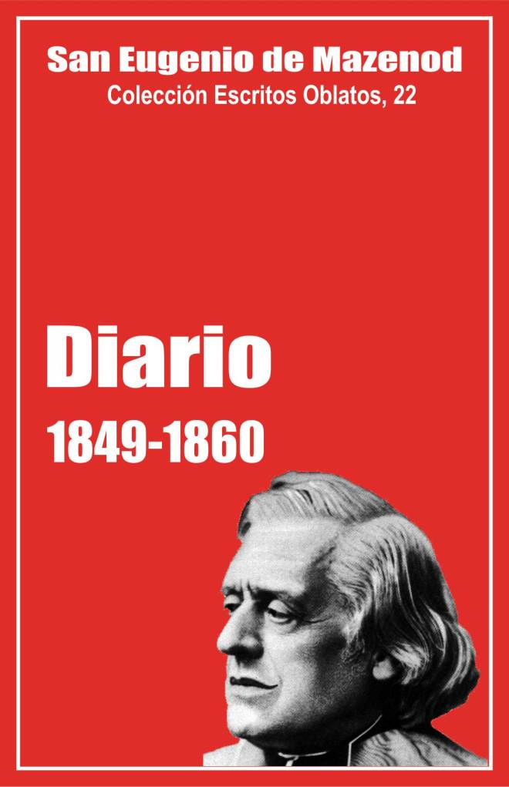

Palo Gordo
2019
Escritos Oblatos: - 01 - 02 - 03 - 04 - 05 - 06 - 07 - 08 - 09 - 10 - 11 - 12 - 13 - 14 - 15 - 16 - 17 - 18 - 19 - 20 - 21 - 22

SAN EUGENIO DE MAZENOD
Colección Escritos Oblatos, 22
Traducido por Olegario Domínguez o.m.i
Postulación General O.M.I. 2002
(Asunción, 2014)
Palo Gordo
2019
1849 - 1850 - 1856 - 1857 - 1858 - 1859 - 1860
Los cuadernos manuscritos del Diario de Mons. de Mazenod de los años 1849-1860 han desaparecido. Nos quedan solo extractos copiados por Yenveux hasta 1850 y otros en Rambert y Rey hasta 1860. El Fundador redactó su Diario en 1849, de enero a mayo en 1850, de agosto y setiembre en 1851, de octubre a diciembre en 1854,1 [125]y de 1856 a 1860 [126]. Hay, pues, numerosas omisiones: de julio de 1850 a julio de 1851, de 1852 a setiembre de 1854 y tal vez el año 1855.
Muchos extractos figuran aquí entre corchetes. El padre Rey hace citas que pone entre comillas, y otras sin comillas. En éstas resume probablemente el texto del Fundador. Publicamos, entre corchetes, algunos de estos extractos lo mismo que algunos detalles tomados del Ordo de Mons. de Mazenod, sin los cuales el texto del Diario sería a veces poco comprensible.
Recorriendo el Diario de los años 1849-1860, podemos ver cuáles eran entonces las principales ocupaciones y preocupaciones de Mons. de Mazenod. Un 35% de las páginas que siguen tratan de actividades pastorales, un 15 % se dedica a relaciones y asuntos políticos, y otro tanto a sus viajes, a los Oblatos y a confidencias, y el 5% a la Iglesia.
Interés por algunos problemas de la. Iglesia y del Estado
Mons. de Mazenod manifestó siempre profunda adhesión a la Iglesia universal y a la Iglesia de Francia. El Diario hace apenas algunas menciones. Se trata en primer lugar del papa Pío IX, a principios de 1849. Los cardenales Giraud y Dupont se detienen en Marsella de camino hacia Gaeta donde van a ver al Papa para invitarlo a venir a Francia. Mons. de Mazenod no está de acuerdo con ellos porque, según él, la situación política es demasiado incierta. Da, sin embargo, al cardenal Giraud una carta para el Papa, en la que le asegura su "inalterable adhesión". El nombre del Papa recurre a veces en 1959-1960 en relación con la guerra por la unidad de Italia y con el cardenalato [1].
Apenas algunos problemas de la Iglesia de Francia son también evocados. Por ejemplo, el 2 de marzo de 1850 escribe Mons. de Mazenod: "A fuerza de querer hacerse romanos, como si no lo fuéramos, nuestros jóvenes obispos caen en la puerilidad. No saben como yo cuánto se burlan de ellos en Roma. Lamenta que éstos vayan sacrificando uno a uno todos nuestros privilegios, todas nuestras costumbres tan antiguas y tan veneradas [...] ¡Yo no entiendo así las cosas! Por cierto - añade- siempre he pasado por ultramontano y, si no quiero saber de las libertades galicanas de 1682 y de otras, me aferro a la que nos ofrece el uso constante de nuestras iglesias de la que han gozado todos nuestros predecesores a vista y ciencia de los sumos pontífices que nunca habían pensado en reclamar" [2]. Ese mismo día, 2 de marzo de 1850, Mons. de Mazenod se muestra en desacuerdo con Mons. Clausel de Montals, obispo de Chartres, que lo invita a adherirse a su oposición a la ley Falloux sobre la enseñanza católica.
En los años 1856-1860 muchas páginas del Diario tratan de las relaciones con las autoridades civiles y sobre todo con Napoleón III. Los acontecimientos políticos siempre han tenido un papel importante en la vida de Eugenio de Mazenod. La Revolución francesa lo obligó a un largo destierro en Italia; la restauración de la monarquía en 1814-1815 le permitió fundar la congregación de los Oblatos de M I ; la Revolución de Julio de 1830 fue prácticamente el motivo de su elevación a la sede episcopal de !casia, y el segundo imperio hizo de él un senador y un cardenal en cierne, mientras aportaba muchas ventajas a la diócesis de Marsella.
El plebiscito del 21 y 22 de noviembre de 1852 proclamó a Luis Napoleón Bonaparte emperador de los franceses con el título de Napoleón III. Éste, al pasar por Marsella los días 26 y 27 de setiembre precedente, había puesto la primera piedra de la futura catedral, había anunciado que el Estado asignaría para ese objeto una suma de dos millones y medio, y había entregado al obispo la insignia de caballero de la Legión de honor. Con eso había conquistado la simpatía y la confianza de Mons. de Mazenod.
Con ocasión del nacimiento del príncipe imperial en 1856 Mons. de Mazenod escribe al Emperador el 16 de marzo para felicitarle y le envía una medalla de oro con la efigie de la santísima Virgen y de N -D. de la Garde. El obispo publica una pastoral al respecto y manda cantar un Te Deum el día de Pascua. A fines de marzo Napoleón JI! agradece al prelado esos testimonios de "singular simpatía". Por lo demás, no se muestra menos generoso. En la ocasión del bautismo del niño, al que asisten el legado del Papa y todos los obispos de Francia, Mons. de Mazenod es nombrado senador el 24 de junio de 1856. Este nombramiento va a cambiar sus habituales formas de vida. Cada año, de 1857 a 1860, participa en la sesión del senado que tiene lugar de enero o febrero a junio. Llega a París para la sesión de apertura y regresa a Marsella para el domingo de ramos. En el curso de sus estancias en la capital, va cada año a pasar unos días en Tours con Mons. Guibert y a saludar a los Oblatos de Nancy y de Cléry. Entra en relación con muchos personajes religiosos y laicos, es invitado cada año a unas veinte cenas [3]y, sobre todo, se encuentra a veces con el Emperador y con los ministros, en especial con el de Cultos. De ellos obtiene favores y ayudas para las grandes obras emprendidas en la diócesis de Marsella. En primer lugar, la catedral, de la que Mons. de Mazenod empezó a hablar desde su nombramiento para la diócesis de Marsella en 1837. El 18 de marzo de 1858 en un informe al senado dice que la cimentación está acabada y que están asegurados seis millones y medio por la ciudad y el Estado. Ese día él es relator "de la comisión encargada de examinar la ley por la que se abre en el ministerio de Instrucción pública y de Cultos, en el ejercicio de 1858, un crédito de 499.450 francos para cooperar a la construcción de una nueva catedral en Marsella".
Al pasar por París en el verano de 1850, cuando su primer viaje a Inglaterra, Mons. de Mazenod hizo valer todo el peso de su influencia y de sus conocimientos para obtener del Presidente de la República, el futuro Napoleón 111, un decreto por el que se concedía en la colina de N.-D. de la Garde el terreno, entonces militar, necesario para la reconstrucción de la capilla. Por una pastoral del 1 de noviembre de 1852 el obispo apela a la generosidad de los marselleses y obtiene luego del gobierno permiso para lanzar una lotería nacional. En 1853, 1854 y todavía en 1860 pide al Emperador que contribuya a los gastos de esa construcción.
El obispado de Marsella, construido en la segunda mitad del siglo XVII, necesitaba ser restaurado y agrandado. A menudo el obispo recuerda esa necesidad a las autoridades de Marsella y de París. Por fin, el 22 de octubre de 1856 escribe en su Diario: "Los señores Vaudoyer y Violet-le-Duc vinieron a someter a mi aprobación el plano del palacio episcopal que se proponen construir. No tuve que hacerles más que unas observaciones de detalles. Será muy acomodado para el que disfrute de él. A mi edad, uno no puede ocuparse de esas cosas más que mirando al interés de un sucesor". En mayo de 1858 el presupuesto de medio millón de francos para la restauración y ampliación es aprobado por el ministerio (Diario, 7 de mayo).
Monseñor de Mazenod obtuvo del Emperador otro favor importante. Desde hacía tiempo pedía un auxiliar. El 13 de febrero de 1856 insistió de nuevo y designó al ministro de Cultos a su "discípulo y fiel compañero" Jacques Jeancard. En su visita al ministro el 8 de febrero de 1858, éste dijo que ha hablado con el Emperador, quien le respondió, anota el prelado, "que me amaba mucho y que no deseaba más que hacer lo que era de mi gusto". Una vez aceptada la presentación de Mons. Jeancard por el Emperador, Mons. de Mazenod solicita del sumo pontífice su elección canónica. Las bulas llegan a Marsella el 27 de mayo y son aprobadas por el Consejo de Estado en setiembre. Y el 28 de octubre de 1858 Mons. de Mazenod ordena a Jacques Jeancard obispo de Cerame y auxiliar de Marsella.
Otro proyecto del obispo, apoyado por el clero, concernía a la erección como arzobispado del obispado de Marsella. El 26 de marzo de 1859 Mons. de Mazenod lleva al ministro de Cultos el acta del Cabildo que pide esa erección. El ministro es favorable al proyecto pero propone al prelado que hable él personalmente al Emperador. En la última audiencia concedida por Napoleón III a principios de abril de 1859, Mons. de Mazenod le pone al corriente de ese proyecto que sin embargo no tendrá resultado [4]. Escribe en su Diario: "Me repugnaba hacer esta gestión porque parecía que hablaba para mi provecho, mientras que personalmente soy muy indiferente a eso y solo me ocupo de ello por el honor de mi sede que me parece tenía yo la misión de realzar".
Durante su estadía en París en 1859, Mons. de Mazenod encuentra varias veces al Emperador y a la Emperatriz. El 17 de marzo participa en una cena en las Tullerías, sentado a la izquierda de la Emperatriz. Nota que ella está muy resfriada. Escribe inmediatamente a Marsella para pedir unas pastillas que le proveen las religiosas, "excelentes boticarias", cuando él está resfriado. Envía algunas cajas a la Emperatriz, que leda las gracias el domingo siguiente cuando él asiste a la misa en las Tullerías [5].
El 15 de agosto, al volver de un viaje por Autun, N.-D. de l’Osier y N.-D. de Lumieres, Mons. de Mazenod recibe una carta del ministro de Cultos que le anuncia que el Emperador le ha propuesto al Santo Padre "para el capelo cardenalicio vacante en la lista de las designaciones de Francia". Esta designación no suscitó ninguna objeción de parte del Papa, pero problemas de orden general no le permitieron llevarla a cabo. Se trata sobre todo de la guerra por la unidad de Italia. A pesar de las promesas a favor de los estados Pontificios, Napoleón ayudó militarmente a Víctor Manuel, rey del Piamonte, y a su ministro Cavour, a combatir a los austriacos y no les impidió luego anexionar el norte de los Estados Pontificios. Muy inquieto por esa situación, el Papa no creó cardenales en el consistorio del 26 de setiembre de 1859 e hizo en la ocasión una vigorosa alocución, excomulgando a todos los que habían prestado sus consejos y su cooperación a la revolución. A raíz de esa alocución, la mayoría de los obispos de Francia escribieron una carta pastoral a favor de los Estados pontificios y algunos atacaron al Emperador. Mons. de Mazenod prefirió enviar una carta personal a Napoleón III en la que expresaba sus preocupaciones. El Emperador le dio las gracias. El cardenal Barnabó hizo saber al obispo de Marsella que en Roma causaba extrañeza su silencio oficial [6] "Sin perder una hora" éste compuso una pastoral en la que consiguió justificarse de su retraso y defender con vigor a los Estados Pontificios, sin ofender al Emperador, reiterando su confianza en él (Diario, 23 de octubre).
A instancias del cardenal Morlot, arzobispo de París, Mons. de Mazenod escribió de nuevo al Emperador el 31 de diciembre para invitarle a defender la integridad de los Estados pontificios. No recibió ninguna respuesta. El año 1860 no cambió nada en la situación general. En sus viajes a París de febrero a abril y al comienzo de junio de 1860, el prelado no pidió audiencia al Emperador. Éste pasó por Marsella dos veces a primeros de setiembre y habló varias veces con el obispo. El día 10 le preguntó cómo andaba su cardenalato. "No le oculté -escribe en el Diario ese día- que el Papa me había escrito para aceptar la presentación [...] pero remitía a un momento oportuno mi preconización, porque estando en duelo la Iglesia, no debía haber regocijo. El Emperador no respondió nada a esta confidencia".
En el curso de los años de 1849 a 1860, Mons. de Mazenod se relacionó con algunas otras personalidades. El 2 de agosto de 1856 se encontró en Marsella con el general Amable Pélissier, vencedor de Sebastopol. El 26 de octubre del mismo año celebró la misa en presencia de María Cristina de Barbón, ex reina de España, que había sido excomulgada por el Papa, pero se había arrepentido, y fue a hacerle una visita al palacio de los Emperadores donde estaba alojada. El 22 de diciembre se apresuró a escribir al rey Fernando II de Nápoles que acababa de escapar de un atentado. Celebró entonces una misa de acción de gracias y recordó que la familia del rey años atrás había dispensado "sus favores sobre mí y sobre los míos durante nuestra larga emigración en Nápoles y Palermo". El rey manifestó luego su reconocimiento decorando al obispo con la gran cruz de la Orden Constantiniana (Diario, 16-2-58). En abril de 1857 el prelado acogió en Marsella e hizo visitar la ciudad al Sr. Troplong, presidente del senado, y a su esposa. De setiembre a diciembre de 1860, acogió al arzobispo de Nápoles y a varios obispos napolitanos que habían dejado la ciudad tras el ingreso de las tropas de Garibaldi el 7 de setiembre.
En los años 1849-1860 las relaciones de Mons. de Mazenod con las autoridades políticas locales parecen también muy buenas. Consiente siempre en presidir ceremonias religiosas de sufragio o de acción de gracias cuando las guerras de Crimea y de Italia. Va a bendecir la llegada de las aguas del canal del Durance el 19 de noviembre de 1849. El 20 de diciembre siguiente confiesa que está contento con todas las autoridades civiles y militares. El 9 de mayo de 1851 es recibido solemnemente en el Ayuntamiento, donde entrega el breve del palio recibido de Pío IX el 3 de abril de 1851. Las autoridades colaboran con él en la realización de los proyectos de la catedral, del obispado y de N -D. de la Garde. El 10 de diciembre de 1860 escribe que las pasiones se agitan en Marsella con ocasión de la elección en el consejo municipal. Él se pronuncia por la lista convenida por el senador [C E. de Maupas}. "Los intereses de la religión en mi diócesis, escribe, solicitan esta adhesión de mi parte tanto más cuanto que el mayor número de los ciudadanos inscritos en esa lista son hombres honorables, varios incluso son cristianos practicantes."
Pastor en Marsella y en París
En el decurso de los diez últimos años de su vida Mons. de Mazenod aparece más que nunca como un pastor infatigable. En primer lugar, sigue administrando la confirmación a los adultos todos los lunes en su capilla y al final de las misiones parroquial es, a los niños en las parroquias e institutos, y a los enfermos en las casas privadas. En ciertas ceremonias de confirmación general le acontece, como el 27 de mayo de 1858 en la iglesia de San José, confirmar por la mañana a cerca de 700 muchachos y por la tarde a 900 muchachas. Le gusta en especial ir junto a los enfermos en los barrios más pobres, donde admira la fe de los habitantes y las atenciones que tienen con él. En su Ordo de 1856 señaló 85 ceremonias de confirmación, omitiendo a menudo indicar las de los lunes.
Celebra cada año siete u ocho ceremonias de ordenación, las generales en junio y diciembre que siempre le colman de alegría; igualmente las particulares para oblatos, sacerdotes diocesanos y jesuitas.
Según su Ordo y su Diario, cada día, tanto en París [7] como en Marsella, preside ceremonias religiosas en las parroquias, los conventos y las obras. Escribe, por ejemplo, el 25 de abril de 1858: "La coincidencia de tres fiestas en este mismo día me ha puesto en el caso de reconocer que sería muy culpable si pensara en reservarme. Era el día de la clausura del retiro de los señores en la Misión de Francia, la fiesta de San Marcos y por tanto procesión general, y estación en San Cannat, el último día de la octava del traslado de la reliquia de este santo; yo tenía que encontrarme en todas estas fiestas, había interés en ello y nadie estaba dispuesto a dispensarme [...] Si yo dijera que esa serie de ejercicios religiosos, que me han retenido todo el día en la iglesia, me han cansado, no estaría en la verdad. No he experimentado más que consuelos y verdadera satisfacción en el cumplimiento de todos esos deberes. Qué importa tener 76 años cuando uno no tiene enfermedades y goza de toda la fu erza, casi diría de la juventud; lo menos que se puede hacer es aprovecharlo para cumplir las funciones del propio ministerio".
Entre las ceremonias religiosas en las que participa, hay que señalar la inauguración, el 8 de diciembre de 1857, del monumento a la Inmaculada Concepción que hizo erigir, cerca de la estación, en memoria de la definición del dogma, la ordenación episcopal de Mons. Jeancard el 28 de octubre de 1858 y la de Mons. Grandin el 30 de noviembre de 1859 [8], y el matrimonio que va a celebrar en París, el 5 de junio de 1860, de la hija del banquero israelita Mires [9] con el hijo del príncipe J A. de Polignac; sobre todo celebra con fervor siempre renovado las fiestas de Navidad y de Pascua.
"¡Qué hermosa jornada!, escribe en la pascua de 1859, ¡que Dios me dé a menudo otras parecidas!
Es como para rejuvenecer ¿Es sorprendente que no sienta ninguna fatiga cuando el corazón rebosa de alegría?
¡Me ha costado lo imposible contener la emoción en el canto de ese magnífico prefacio! Esa emoción era tan profunda que se mantuvo hasta el final de la misa. Se lo agradezco al Señor que con esas dulzuras anima nuestra flaqueza" [10]
Como en el pasado, Mons. de Mazenod consagra el mes de mayo a las visitas pastorales, se interesa siempre en las procesiones, venera con fervor las reliquias, disfruta sobre todo de la presencia de Jesús cuando hay exposiciones del santísimo sacramento.
Cada año en mayo, según su Ordo y su Diario, hace la visita pastoral de las parroquias fuera de la ciudad. Escribe una hermosa página al respecto el 21 de mayo de 1858, expone que a veces visita dos parroquias cada día y predica hasta tres veces, "nunca menos de una hora y, de acuerdo al tema, con la vehemencia necesaria. Pues bien -continúa- puedo decir con sencillez y con toda verdad que no sentía ninguna fatiga. No podría agradecérselo bastante al Señor. Pero también qué magnífico ministerio realiza el obispo en sus visitas pastorales."
Subraya la procesión del Sagrado Corazón el 1 de julio de 1849 e igualmente las del santísimo Sacramento el 30 de mayo de 1856 y el 19 de junio de 1857. Ésta ha durado "dos horas largas [...} Un gran número de bellas estaciones - escribe- daban a las calles un aspecto de iglesia prolongada con el suelo alfombrado de flores. Hay que decirlo, todo era encantador ese día. Ha sido uno de los más hermosos de mi vida. Me sentía dichoso al ver a nuestro Señor glorificado por nuestra inmensa población".
La veneración de Mons. de Mazenod a las reliquias no disminuye. El 4 de enero, al demoler una parte de la antigua catedral, los obreros encontraron el cuerpo de Mons. Juan Bautista Gault, obispo de Marsella en 1642 y 1643. El 10 de febrero 150.000 personas siguen la procesión del "traslado de las reliquias del bienaventurado J B. Gault". El 21 de enero siguiente dos sacerdotes le llevan la cruz de San Andrés, antaño conservada en la iglesia de San Víctor y reencontrada en una casa de campo del territorio de Aubagne. A fines de julio de 1859 Mons. de Mazenod va a venerar el cuerpo de san Lázaro en Autun. Derrama lágrimas de emoción en presencia de ese cuerpo. "¡Cómo! aquél era el cuerpo resucitado por nuestro Señor Jesucristo! Aquellos huesos, salvados dos veces de la corrupción, estaban presentes ante mis ojos. Yo veía allí los restos preciosos del contemporáneo y amigo de Jesús, del apóstol de mi pueblo marsellés, de mi santo predecesor a la distancia de diecinueve siglos. Yo era el primero de sus sucesores que llegaba a venerarlo y a inspirarme, a la vista de ese cuerpo en otro tiempo animado por un alma tan santa, en los sentimientos que deben animar a todos los que deben sufre a ese gran apóstol y que de generación en generación se han transmitido el sagrado depósito..." Pide que se le dé una "reliquia insigne del santo cuerpo". El 3 de noviembre siguiente es el mismo obispo de Autun quien le lleva esa reliquia, ante la cual el obispo de Marsella celebra la misa. Escribe ese mismo día: "Inútilmente habría intentado contener mi emoción, por mucho esfuerzo que hiciera para controlarla; pero también ¿cómo resistir al ofrecer el santo sacrificio ante ese cuerpo resucitado por el mismo Jesucristo que reaparece ante él?"
Mons. de Mazenod tuvo siempre una devoción muy viva al Santísimo Sacramento. Su piedad parece que se acentuó aún en los últimos años de su vida. En las páginas de su Diario menciona con frecuencia las ceremonias en honor del santo sacramento y repite su gozo y su emoción. El 30 de junio de 1848 había aprobado en la diócesis la asociación de adoradores del Santísimo. En 1850 visita las iglesias donde está expuesto el Sacramento con ocasión del carnaval, y el 24 de marzo va a presidir una ceremonia de expiación de un robo sacrílego en [la parroquia de} las Crottes. Escribe: "Mi corazón rebosaba de no sé qué ternura, qué amor, qué deseo de reparación, y qué agradecimiento por el beneficio de la divina presencia de Jesucristo a quien me parecía ver y tocar, de modo que me habría sido imposible contener las lágrimas que brotaban deliciosamente de mis ojos".
En 1856 sigue hablando de "emoción indecible", de "consuelo y edificación" en presencia del Sacramento el domingo de sexagésima en la catequesis de perseverancia del Sr. Coulin (27 de enero) y el miércoles de ceniza en las principales iglesias en reparación de las locuras del carnaval que prosiguen ese día (6 de febrero); igualmente con ocasión de la octava del sacrílego robo en San Teodoro (Diario, 1 y 9 de marzo).
El jueves santo se entera de que no habrá exposición del Santísimo en la Mayor durante la noche del jueves al viernes santo.
Inmediatamente avisa al párroco de que él se proponía ese año ir a hacer su adoración nocturna en esa iglesia. A última hora el párroco anuncia que habrá adoración. Algunos fieles pueden ser advertidos con tiempo. Hay unas cuarenta personas que con el obispo pasan allí la noche. "¡Oh, -exclama- qué bella noche hemos pasado así al lado de ese buen Maestro, de ese adorable Salvador!"
En junio de 1859 se establecen en Marsella los padres Sacramentinos. El obispo ve por fin la posibilidad de establecer en la diócesis la adoración perpetua del Santísimo Sacramento "por la que -escribe- yo suspiraba desde hacia tanto tiempo". El 21 de diciembre de 1859, 48º aniversario de su ordenación sacerdotal, publica la carta pastoral en la que establece "la adoración solemne y perpetua del Santísimo Sacramento".
En enero y febrero de 1860, antes de salir hacia París, va cada día al ejercicio de la tarde de la adoración del Santísimo en las diversas iglesias. En presencia del Señor y de numerosos fieles, expresa su alegría con toda clase de exclamaciones: "Mi corazón rebosa de gozo". "Había motivo para lanzar gritos de alegría al ver en primer lugar la iluminación..." "Felicidad inexpresable". "Es para morir de alegría". "¡Oh, qué glorificado es Nuestro Señor!". En la iglesia de San José "¡Es un verdadero triunfo para nuestro divino Salvador! Imposible resistir a la emoción que procura semejante espectáculo. Así ¡qué dulces lágrimas brotaron de mis ojos! Si esto durara, seria demasiada dicha en la tierra. Gracias, millones de gracias al Señor por estos instantes de gusto anticipado del paraíso".
Las relaciones del obispo con su clero parecen buenas. Por lo demás, prácticamente no habla de sus sacerdotes [11] más que en la ocasión del sínodo diocesano, celebrado en el seminario menor del 28 de setiembre al 1 de octubre de 1856. Escribe entre otras cosas el 1 de octubre: "Me contentaré con decir que es imposible ver una reunión tan considerable de sacerdotes [...} que desempeñen su oficio con más decoro, sabiduría y moderación [...} Era una verdadera reunión de familia. La alegría más franca reinaba durante los recreos, los ratos libres y el descanso. La piedad se mostraba en todos los ejercicios religiosos..."
La congregación de los Oblatos
En los extractos del Diario de 1849 a 1860 pocas veces se trata de la congregación a pesar de que esté siempre presente en el pensamiento y en el corazón del Fundador. El 21 de octubre de 1849 se queja de una correspondencia "multiplicada en exceso y de verdad abrumadora" con los Oblatos de los cuatro continentes. El siguiente día 29 escribe: "Si tenemos un gran número de buenos y excelentes sujetos, hay que reconocer que tenemos también tres o cuatro cabezas locas que me hacen sufrir mucho." Piensa, al parecer, en el P. Telmon, que salió de Ottawa sin permiso, con dos padres y dos hermanos, para fundar una misión en Texas (D 10 de noviembre y 23 de diciembre de 1849). Piensa también en el P. Bellanger, al que el P. Tempier en su viaje a Argelia "llegó a tiempo para desenmascarar".
En la clausura del capítulo general el 12 de agosto de 1856 observa que "un solo espíritu animaba a todos los miembros [...] Bien se puede aplicar a esta reunión el cor unum et anima una de los primeros discípulos del Evangelio, añade. Esto fue para mí tema del más dulce consuelo, tanto más cuanto que todos ponían empeño en expresar a su anciano padre todo el cariño y el respeto que los más afectuosos corazones pueden mostrar en retorno de cuanto saben bien que yo siento por ellos."
Anota la defunción de algunos Oblatos: los PP. Federico Michel y Juan Regis Mounier en 1849 (D. 10 de marzo y primeros de octubre), los de Texas en 1858 (15 de noviembre), el P. Domingo Luigi en Córcega el 28 de diciembre de 1858 (3 de enero de 1859) y sobre todo el P. Aubert, su secretario particular. Escribe el 17 de enero de 1860: "El santo, el incomparable padre Casimiro Aubert ha muerto repentinamente. Me cubro la cara, me postro, adoro. Nescio loqui! Que corran y corran mis lágrimas, es todo lo que puedo"
Hace breve mención de algunas fundaciones en Francia: seminario de Fréjus (D. 15 de agosto de 1850), casas de Autun (D. 8 de noviembre de 1858) y de París (19 de agosto de 1857 y febrero de 1859), del envío de algunos oblatos a Mons. Timon en Buffalo (26 de diciembre de 1849 y 16 de abril de 1850), del rechazo de una misión en Bengala (10 de noviembre de 1849), del retiro de los padres de Argelia y de la aceptación de la misión de Natal (27128 de marzo y 1 de abril de 18850).
Va con bastante frecuencia a Aix y visita cada año algunas casas oblatas. Toma parte el 8 de setiembre de 1856 en el segundo centenario del milagro del mimbre sangriento. Anota a veces en el Diario los días que pasa con gusto en medio de los escolásticos en Montolivet con ocasión de las ordenaciones o por alguna fiesta oblata.
Los viajes
Mons. de Mazenod viajó mucho entre 1849 y 1860. Con todo, en los extractos del Diario que se han conservado no se detallan bastante más que las estancias en París de 1856 a 1860. Apenas menciona el 22 de agosto y el 18 de setiembre de 1849 el viaje que hace, del 13 de agosto al 22 de setiembre a N -D. de l’Osier, Lyon, Nancy y Cirey-sur-Blaise donde bautiza a un hijo de su sobrina Cesárea de Boisgelin, marquesa de Damas. El 21 de mayo de 1850 escribe que se le deja "a lo sumo el tiempo de preparar su maleta para su largo viaje a Inglaterra". Salido de Marsella el 17 de mayo, pasa por N -D. de l’Osier, Lyon, Estrasburgo, Alemania y Bélgica. Visita todas las casas oblatas de Inglaterra y regresa a Marsella el 22 de julio (Rey, JI, 339-346).
Como no escribió el Diario de 1851 a 1855 inclusive, no hay nada sobre los viajes hechos en el curso de esos años. [12]
Hace una relación bastante detallada de los viajes a París del 9 dejunio al 17 de julio de 1856, regresando por Nancy, N -D. de Sion y N -D. de Cléry, menciona el de comienzos de 1857 (8 de febrero al 2 de abril) y escribe unas páginas sobre su visita de las casas de Inglaterra, Escocia e Irlanda (30 de junio al 2 de setiembre de 1857, pasando por Nancy y París a la ida y, a la vuelta, por Tours, Cléry y Burdeos. Se encuentran más detalles aún sobre los viajes a París del 14 de enero al 25 de marzo de 1858, del 30 de enero al 14 de abril de 1859 con visitas a Bourges, Tours y Nancy, del 25 de febrero al 3 de abril de 1860 con unos días en casa de Mons. Guibert en Tours, y del 2 al 9 de junio para el matrimonio Mires-Polignac. En 1859 estuvo también ausente del 21 de julio al 14 de agosto para ir a venerar una reliquia de San Lázaro en Autun, pasando por Lyon, Chálons, N -D. de l’Osier, N -D. de Lumieres y Aviñón.
Las confidencias
Como acostumbraba en su Diario de los años precedentes, Mons. de Mazenod señala cada año sus aniversarios de nacimiento y bautismo el 1 y el 2 de agosto, el de sacerdocio el 21 de diciembre y el de episcopado el 14 de octubre. El 14 de octubre de 1860 escribe que ese día la misa mayor fue "cantada con música" en presencia del Cabildo, de unos cincuenta oblatos y de muchos religiosos y religiosas.
Con ocasión de su aniversario de nacimiento y de algunas jornadas sobrecargadas durante las cuales no siente cansancio, se admira de su propia salud y da gracias al cielo. El 1 de agosto de 1860 reconoce que entra en los 79 años y añade: "¡Confusión y confianza! Confusión por el pasado, confianza para el porvenir" Esta confianza lo acompañaba siempre, incluso al ver venir la muerte. Habla de ella a menudo, por ejemplo, con ocasión del funeral de Mons.
Darcimoles, arzobispo de Aix, el 14 de enero de 1857, y del 1 de enero de 1859. El 14 de enero de 1857 escribe: "Se puede imaginar cuáles eran los pensamientos que me preocupaban durante el entierro. Fue una larga meditación sobre la muerte. Es el sexto arzobispo de Aix que veo pasar [...] Pero no dejé de decirme que la ceremonia que presidía era solo la réplica de la que tendría lugar para mí cuando plazca al Señor cortar el hilo de mi vida..." A primeros de enero de 1859 anota también: "Lapsus est annus, redit alter annus. Un año ha pasado, otro se presenta. Lo repetimos cada año hasta que llegue el día en que otros lo dirán en mi lugar, entonces los años habrán cesado para mí. Es el pensamiento que me ocupa en cada comienzo de año, como el jueves santo cuando bendigo los santos óleos, me pregunto si no trabajo para mí. Este pensamiento excita al deseo de servir mejor a Dios y de apresurarme un poco más para lograr buen capital de méritos".
Una sola vez al final de su vida Mons. de Mazenod hace alusión al gozo que le procura una de las realizaciones de su vida: la de la congregación de los Oblatos. El 25 de diciembre de 1856 oficia pontificalmente en la catedral en presencia de Mons. Semeria y de Mons. Taché, asistidos por los padres Tempier y Fabre, vicarios generales. Escribe: "¿Había motivo para estar emocionado al considerar esta paternidad en tal día y en tal lugar? ¡Qué alimento para elevar mi alma a Dios durante el Gloria y el Credo donde esta porción de la familia se hallaba así cara a cara en esta especie de asamblea religiosa!
¡Qué confusión, mientras elevaba a Dios mis acciones de gracias, al reconocerme tan por debajo de las virtudes que exigía de mí la gran misión que la bondad de Dios me ha dado en su Iglesia! ¡Oh, cuánto bien hacen estas consideraciones durante tal oficio pontifical! ¡Parangonar la propia pequeñez con la grandeza de Dios, las propias miserias con la santidad suprema, aun en la acción más sublime, en el momento del solemne sacrificio ofrecido con tan gran pompa por un pontífice que se reconoce tan pequeño, tan pobre, tan miserable ante ese Dios grande a quien representa! Pero la alegría y la confianza sobreabundan, y el corazón no deja de rebosar de dicha; es un paraíso anticipado; ¡sólo se puede ser más feliz en el cielo!"
***
Este volumen 22 es el último de la primera serie de los Escritos Oblatos que comprende las Cartas del Fundador a los Oblatos, su Diario y una selección de Escritos espirituales.
Fue en 1976 cuando el padre Fernando Jetté, entonces superior general, me pidió iniciar este trabajo; cada año, en el poco tiempo libre que me dejaban mis funciones de archivero y luego de relator en la Congregación para las Causas de los Santos, he logrado publicar un volumen. El modo de edición, que no ha cambiado, se expone en la introducción al primer volumen que salió a la luz en 1977.
Doy gracias a los padres que han releído algunos de los manuscritos : en primer lugar al padre Paul Sion y luego a los padres Laurent Roy, Michel Courvoisier y Alexandre Taché. Agradezco también al padre Henri Verkin, quien, sin embargo, siempre pícaro, leía y subrayaba las faltas sólo después de aparecido cada volumen, diciendo que en eso encontraba más placer. He anotado sus correcciones en la copia de los volúmenes que yo conservo.
Esta publicación me ha permitido un trato prolongado con el Fundador, pues he tenido que recoger todos sus escritos y leerlos a menudo con atención para tratar de datarlos, dactilografiarlos y, a excepción de los últimos volúmenes hechos con el ordenador, corregir tres o cuatro veces las pruebas de imprenta. Esta frecuentación ha sido una gracia para mí mismo y me atrevo a esperar que la colección de los Escritos Oblatos, traducida en otras lenguas, ayudará a los Oblatos de hoy y de mañana a conocer mejor a su santo Fundador y a mantener vivos su carisma y la divisa de la Congregación: Evangelizar a los pobres.
Yvon Beaudoin, o.m.i.
Carta del P. Dassy. Renuncia a la esperanza de sacar algo del P. Michelier [13] que no quiere ponerse a componer.
Carta al P. Dassy. Recomendación de tener paciencia con el P. Michelier que, según dice, no quiere ponerse a componer. Recomendación de tener miramiento con la debilidad de los hermanos conversos.
Llegada del cardenal Giraud que se dirige a Gaeta. Este prelado me propone irme con él. No veo ni la necesidad ni la conveniencia de hacerlo.
Decididamente dejo salir al cardenal sin juntarme a él. El cardenal lo ve todo de color de rosa; parte con la intención de empujar al Papa a acceder a los deseos de la nación y del episcopado; está persuadido (y parece que Luis Napoleón ha abundado en ese sentido) que la presencia del Papa en Francia facilitaría buenas elecciones para la nueva asamblea nacional. Eso es posible, pero si, según la actitud que vemos tomar a la asamblea, fuera preciso que el presidente hiciera un golpe de estado por defenderla, y de ahí resultara un choque ¿no sería muy enojoso el haber traído al Papa para ser testigo de ese desorden? Yo no quiero asumir mi parte de responsabilidad en ello y me mantengo prudentemente al margen. Hago más: en la carta que escribo hoy al Santo Padre le expreso con bastante claridad mi pensamiento para que él lo capte si lee mi carta con atención. El Papa comprenderá que no juzgo nuestra situación como bastante tranquilizadora para que él se arriesgue a venir demasiado pronto, dado que siga teniendo la intención de visitarnos. He aquí la carta:
Marsella, 13 de enero de 1849. Santísimo Padre,
La acogida tan benévola que vuestra santidad se digna dar a lo que yo me atrevo a escribirle, es mi excusa para la libertad que me tomo de deponer de nuevo a vuestros pies el homenaje de mis sentimientos de adhesión inalterable y de profundo respeto.
Yo no podría dejar salir para Gaeta al cardenal arzobispo de Cambrai sin por lo menos testimoniar al Santo Padre mi vivo agradecimiento por el alto favor que de él recibí cuando, el mes pasado, me ha honrado tan bondadosamente con una respuesta de tan alto precio para mí.
Mi corazón se adelanta a ese prelado en su feliz peregrinación; le envidio la dicha de encontrarse dentro de pocos días ante Pío IX, y lamento el estar, a mi pesar, retenido todavía en nuestra orilla. Pero, si el sumo pontífice no aborda aquí, cuando nuestra situación política esté mejor definida, tendré a mi vez el consuelo de ir a llevarle los ardientes votos de la nación francesa, y de llevarle en especial los de mis fieles, así como los testimonios de la tierna piedad con la que, postrado a vuestros pies, imploro para ellos y para mí vuestra bendición apostólica y soy de vuestra santidad, Santo Padre, el muy humilde y muy devoto hijo.
En Marsella,
13 de enero de 1849
+C.J Eugene, obispo de Marsella
Carta del P. Léonard. Está establecido con el P. Bernard en Montreal. Viven pobremente y se alegran de ello. Su capilla es de madera.
Carta al P. Santoni [maestro nov. en l’Osier] por la salida al noviciado de Sumien que se somete a esa prueba para volver a entrar en la Congregación.
Carta del P. Dorey [maestro nov. en Nancy] satisfactoria por los buenos informes que me da de su noviciado.
También él [el cardenal Dupont, arzobispo de Bourges] habría querido que yo fuese con él a Gaeta, pero no soy del parecer de acompañar a los cardenales cuando van junto al Papa, sobre todo cuando no hay razón para hacerlo. El Papa sabe mi sentimiento pues, según la carta del padre abad de la Trapa, tenía interés en conocerlo. Yo no tendría nada más que decirle. En lo referente al consuelo de rendirle mi homenaje, eso puede diferirse sin inconveniente.
Ruego al cardenal Dupont que lleve una carta para el cardenal Antonelli. Escribo a este cardenal para preguntarle lo que piensa acerca de la colecta que se hace para el Papa. Le envío copia de mi carta al señor arzobispo de París sobre ese asunto.
[Servicio pedido por la Asamblea nacional[ [14] pedido, es así como lo he explicado en mis cartas de invitación a las autoridades y en mi circular a los párrocos, pues se empezó por hacer una ley que lo prescribe y tuve que rectificar en el sentido conveniente la decisión del prefecto que ordenaba a su vez el servicio religioso etc. Son protestas para mantener los principios.
Desoladora noticia de la muerte del P. Michei [15]. Acababa de concluir la misión de Saint-Bonnet, en la que había dado pruebas de gran celo y de gran generosidad. El P. Lavigne, que había hecho con él esa misión, me escribía que se había portado como un santo. Mucho me temo que el P. Lavigne no haya sabido moderar ese celo ni exigir de modo suficiente que el padre cuidara más de su persona. Temo mucho que lo que el P. Lavigne llama una tos ferina, fuera una tos de irritación y tal vez un comienzo de pleuresía que el pobre difunto no quiso cuidar. Dios le habrá recompensado, pero la muerte de este buen oblato es una gran pérdida para la congregación.
Salida de nuestros queridos padres Marcha), Leydier y Lebescou [16] para las misiones de Cei lán. Su entrega es digna de su hermosa vocación. Parten con la alegría en el alma, felices de haber sido escogidos.
El cardenal Giraud [17] me decía que el Papa estaba completamente decidido a venir a Marsella cuando las tropas francesas bajen a Civitavecchia. El Papa nunca dijo que vendrá a Francia, sino a Marsella. Se ocupa en este momento de fijar los puntos que quiere que trate un concilio nacional de Francia en la reunión que le indicará dentro de poco.
El P. Viala no me cuenta todas las Injurias que ese pobre obispo [18] ha vomitado contra mí que, por cierto, no tengo más culpas que la de haberle recordado sus compromisos y la de haber sido excesivamente cortés en las pocas cartas que le he escrito. Pero viene bien el ser humillado, con tal que uno pueda serlo por semejantes ultrajes. Por lo demás, me consuelo pensando que no me los he atraído más que por haber querido propagar el conocimiento de Jesucristo en un país adonde tantos sacerdotes solo van por ganar dinero.
El P. Bellanger, que me ha escrito por su parte, había comenzado ya a hacer bien a los colonos; ha regularizado una decena de uniones, ha instruido y catequizado.
Ahí tenemos otra cuaresma pasada bien rápidamente. Gracias a Dios, ni la menor incomodidad me ha impedido observar fielmente la abstinencia y el ayuno: toda mi casa se ha sentido bien con la observancia de esas leyes de la Iglesia. ¿Cómo persuadirse de que no sería igual en las otras familias cristianas?
Si yo hubiera tenido la debilidad de hacer la procesión [del S. Corazón] en la iglesia el viernes como indicaba la carta del alcalde, no habría tenido lugar este hermoso triunfo. Qué bueno es Dios que inspira cuando hace falta la luz y la fuerza. Marchemos siempre por ese camino.
Yo había escrito al general Oudinot [19] a su paso por Marsella para ofrecerle al menos dos sacerdotes que acompañaran su expedición sirviendo como capellanes a las tropas. El general vino a responderme verbalmente que no creía poder asumir por su cuenta la aceptación de mi oferta. Le dije entonces que yo escribiría al gobierno, lo que hice el mismo día. El Sr. de Falloux [ministro de Instrucción pública y de Cultos] me respondió alabando mi celo, pero como mi carta fue leída al presidente de la República en el consejo de ministros, se llegó a la decisión de escribir a los agentes franceses en Italia para que llamasen para ese servicio a los sacerdotes franceses que se hallaban en los lugares. Tuve que descansar sobre esas resoluciones. Yo había hecho lo que Dios me había inspirado, y tenía que felicitarme de haber dado ocasión por lo menos para el envío de sacerdotes franceses junto a nuestros buenos soldados.
He aquí que hoy recibo una carta del Sr. de Falloux que me propone volver al proyecto que yo le había sometido anteriormente y enviar algunos de nuestros sacerdotes al ejército asegurando que por mi recomendación el general los acogerá bien. Estaba yo reflexionando sobre el partido que iba a tomar, cuando el provincial de los jesuitas vino a darme a leer una carta que el P. Ravignan le escribe para darle a conocer las buenas disposiciones del ministro al que él ha hablado y que él sabe que me va a escribir al respecto. El provincial pone a mis órdenes a seis padres de la Compañía. Yo creo en primer lugar que no se debe enviar a tantos sacerdotes, ignorando si el ministro no cambiará de parecer cuando se entere de la capitulación de Roma; además, no me parece conveniente elegir sólo a jesuitas para cumplir ese servicio de caridad del que el ministro me deja la dirección. Dos sacerdotes bastan de momento. Llegados a los lugares, veremos qué sesgo toman las cosas, y si son bien recibidos, podré agregarles dos jesuitas o cuatro si hace falta. La moraleja que saco de esto es que los padres jesuitas se muestran siempre dispuestos en primera línea cuando hay algún bien que hacer. ¡Que los nuestros lo retengan bien! Sin duda harían lo mismo, pero que se animen con ese ejemplo de los mayores a no decir nunca no, ni basta.
Llegada del P. Ventura a Marsella. El Sr. Gros, negociante al que había sido recomendado, vino de su parte a pedirme una audiencia. Pensé que era mejor rehusársela que exponerme a decirle cosas demasiado desagradables, lo que no me habría retenido de hacer. Por otro lado, me hubiera sido imposible autorizarlo a decir la misa en mi diócesis, cargado como está el pobre hombre demasiado célebre, con censura y excomunión [20]. Está lejos de creerse obligado a reparar los escándalos que ha dado a la Iglesia. Se dice perseguido por los reaccionarios.
[Carta del obispo de Nimes sobre el P. Ventura[ [21]. Mi respuesta no se hace esperar; le dije lo que pensaba.
[Carta del P. d’Alzon, agustino de la Asunción] El padre Ventura le pide asilo en su casa para sustraerse a las persecuciones de los reaccionarios. El Sr. d’Alzon me consulta sobre la conducta que debe tener. Me pregunta si no cabe esperar que los sensatos consejos de un amigo despierten en el alma de ese hombre los sentimientos de fe, etc. Su carta no anunciaría semejantes disposiciones. Me han dicho que el P. Gavazzi [otro disidente] había desembarcado también en Marsella, pero él no se me ha dado a conocer. Habría despotricado contra el Papa durante toda la travesía.
Final de mi 67º año. Entrada en el 68° aniversario de mi nacimiento. Así es como se van acumulando los años, sin que uno se dé cuenta. Uno avanza hacia la tumba año tras año. Uno puede, no obstante, medir la distancia el día en que se ha fijado la atención para la celebración del aniversario de su entrada en el mundo. Qué importa que no se tengan enfermedades y que uno se comporte como si solo tuviera treinta años. Uno por fuerza tiene que contar el día en que hace memoria de la fecha de su nacimiento.
Dos de agosto, aniversario de mi bautismo. Misa en las Capuchinas. Esta misa es de fundación en este día. Yo no podría reclamar un socorro más poderoso que las oraciones de estas santas hijas para agradecer a Dios por un favor como el de mi regeneración.
Llegué a Dijon al amanecer. Esperé a la puerta de la catedral a que se abriera para celebrar allí la santa misa, tras la cual subí a casa del señor obispo [F.V. Rivet], que había sido avisado de mi paso y que me invitó a su casa para desayunar. Salí inmediatamente después para Nancy [22].
Mi deber me hacía volver junto a mi grey [23]. Por eso no vacilé en tomar mi decisión. Un retraso me hizo perder el coche que salía de Chaumont para Dijon. Con todo, había llegado a Chaumont por la posta. Tenía que tomar un cabriolé de posta para correr tras el coche que encontré en Langres a las 9 de la noche a punto de partir; pero no había plaza para mí. Así que quedé reducido a dormir en Langres, en vez de volar, como habría querido, hacia mi desgraciada Marsella, por la que yo suspiraba.
¡Paciencia! Pero paciencia forzada hasta las 6 de la mañana del día siguiente para el paso de la diligencia de Nancy.
A las 6, ¡nueva decepción! Me resigné a esperar en Langres la salida de la tarde para la cual fui en seguida a reservar nuestras plazas. Pero ¡qué jornada eterna fue para mí la que pasé en Langres! No conocía a nadie en esa ciudad. El obispo estaba encerrado con el clero en el seminario en retiro pastoral. No me atreví a perturbarlo en sus ocupaciones hasta cerca de mediodía.
¿Qué hacer después de que dije la misa en casa de los Hermanos de las Escuelas Cristianas? Pasé una parte de la mañana en la iglesia y allí pasé de nuevo varias horas por la tarde después de ver a Mons. Parisis con quien quedé tres cuartos de hora que fueron bien empleados hablando de los grandes intereses de la Iglesia confiados a ese prelado por el puesto que le ha brindado la confianza de sus conciudadanos [24] Insistí diciéndole que no debía mirarse simplemente como diputado de Morbihan sino como representante de todo el clero de Francia que contaba con sus luces y su carácter para defender los intereses de la Iglesia en la Asamblea en la que había sabido tomar una actitud tan acertada. Quedé muy satisfecho de su conversación y lo dejé para que se ocupara de las tareas ben conocidas de un obispo durante un retiro eclesiástico. Me invitó a cenar a las 7 de la tarde. Encargó a sus vicarios generales que me acompañaran y me hicieran los honores de la ciudad.
Rehusé absolutamente molestarlos, y los despedí desde la puerta del seminario adonde los forcé a volver, por más instancias que hicieron. Entonces me puse a recorrer la ciudad y, como llovía y hacía frío, acabé refugiándome en la iglesia y conversé largo tiempo con nuestro Señor sobre mis pobres diocesanos diezmados por el cólera. Yo no lo sospechaba al principio, pero más tarde me di cuenta de que yo era objeto de gran vigilancia y de que había dado algunos malos momentos al bedel que custodiaba aquella iglesia desierta. Ese hombre me había visto ya recorrer la iglesia por la mañana y examinarla con cuidado y por bastante espacio. Al volverme a encontrar también por la tarde en aquel santo lugar, y viéndome entonces en un puesto fijo bastante cercano al altar donde descansa el santísimo Sacramento, y viendo sentado detrás de mí a mi criado, al que tomó sin duda como un cómplice, ese hombre, digo, al no explicarse una devoción tan extrañamente prolongada, creyó sin duda que éramos hábiles rateros que estábamos allí solo para hacer una mala jugada. Yo lo veía dar vueltas, merodear a nuestro alrededor, ir adelante y atrás sin perdernos de vista un instante. Era bastante para distraerme, por eso acabé tomando el partido de retirarme, aunque solo fuera por dejar en paz el alma del honrado guardián, que debió de quedar muy aliviado al vernos salir.
Por fin, al acercarse la hora de la cena, fui al obispado, adonde el señor obispo de Langres no tardó en acudir por su parte, y pasé cerca de dos horas con ese prelado que me dio detalles muy interesantes sobre sus relaciones con los diversos miembros de la Asamblea. Él les inspira una gran confianza, y ellos lo tienen a él en gran consideración.
Por fin, he llegado a mi querida Marsella. No sabría expresar la satisfacción que he experimentado al volver a encontrarme en el seno de mi familia en un momento como éste. Había sufrido tanto al verme alejado. El viaje de regreso me había parecido tan largo. Era como para caer enfermo. Por mucho que se me hubiera dicho que debía tomar precauciones al venir de un país donde el aire era muy puro para sumergirme en una atmósfera pestilencia!. Simplemente no prestaba atención. Tampoco me detuvo una molestia extraordinaria que sentí en el camino, aunque me habían dicho que era un signo precursor del cólera. Yo tenía un deber que cumplir, esto daba respuesta a todo. Bajé en la estación con mi hábito de sacerdote. No sé si fue por un efecto de la preocupación, pero me creí en un desierto; no encontré más que dos o tres muchachos, uno de los cuales me reconoció aunque estaba vestido todo de negro. Apresuré el paso y bajé rápidamente la gran escalera. Entré en seguida al seminario menor. Allí mi corazón se dilató, al verme rodeado de todos los sacerdotes de la casa. No son palabras: experimenté realmente una alegría extraordinaria, la comparo a la que siente un desterrado cuando vuelve a su patria. Eran las tres y yo no había tomado nada en el día a causa del ayuno del que, entre paréntesis, mis diocesanos habían sido dispensados por los vicarios generales, durante mi ausencia. El señor ecónomo me hizo servir una modesta cena, tal, por lo demás, como yo lo había pedido, compuesta de una tortilla y dos huevos estrellados, comida deliciosa que me restauró, sobre todo al ser tomada en presencia de mis hijos que se regocijaban en forma emocionante de mi regreso por el cual habían suspirado, aunque ciertamente menos que yo. Entre tanto se había mandado aviso a mis vicarios generales que llegan en seguida y yo los abrazo contento. Retomé mi hábito de obispo y me dirigí al obispado, donde empecé en seguida a ocuparme de los asuntos de la diócesis antes de verme molestado por quienes llegarían con premura junto a mí para darme el parabién por mi regreso. El día de mi llegada hubo todavía unas sesenta muertes y al día siguiente casi otras tantas.
Mi primer pensamiento fue ir a rendir homenaje a nuestra Buena Madre en su santuario de la Garde. Subí allí hoy, domingo, para celebrar los santos misterios y ratificar a los pies de María el ofrecimiento que había hecho de mi vida al Señor por el rescate de la enfermedad que diezmaba a mi pueblo, desde el momento en que supe que el cólera hacía estragos mortales en Marsella. La santa montaña estaba cubierta de buenos cristianos que se dirigían al santuario al mismo tiempo que yo. La capilla se encontraba llena cuando yo llegué. Antes de empezar la misa, me pareció bien dirigir unas palabras de edificación a la asamblea, la cual, a juzgar por las lágrimas que vi correr, entró perfectamente en los sentimientos que yo expresaba de la abundancia del corazón.
Las cartas que he recibido del Oregón me obligan a ocuparme seriamente de asignar a esa misión los hermanos que con tanta insistencia reclaman nuestros padres. Voy a aprovechar de un barco que navegará próximamente rumbo a San Francisco, en California, para embarcar a dos hermanos que puedan ayudarlos en la explotación de tierras y de bosque que se les han adjudicado. Pero, como hace falta también por lo menos un padre, ya para acompañar a los hermanos, ya para aumentar el número de nuestros misioneros en aquella región abandonada, he escogido entre todos los escolásticos que arden en deseos de consagrarse a las misiones más penosas, al hermano D’Herbomez a quien haré diácono el sábado para ordenarlo sacerdote el domingo, 14, aniversario de mi consagración. Este hermano, lejos de asustarse del cuadro que le he descrito de la vida de nuestros padres en Oregón, que no tienen con qué vestirse ni qué comer, saltó de alegría por haber sido escogido; yo sabía que él estaba haciendo desde hace tiempo oraciones y mortificaciones para atraerse esa gracia. Estos hermosos sentimientos han llenado de gozo mi corazón, pero ¡de qué amargura no quedó pronto abrevado!
Todavía ayer, yendo a visitar a nuestro buen padre Mounier, le hice sonreír al anunciarle el destino del hermano D’Herbomez. Enfermo desde hace algún tiempo de una fiebre tifoidea, nos tenía en una gran inquietud; pero esta mañana tenía el rostro sereno y el espíritu atento a todo lo que se le decía; me decía que no se sentía mal de ninguna parte. Salí de su cuarto consolado viéndolo tan bien y contaba con su pronta curación, cuando de pronto, hacia las cuatro, una terrible crisis lo agarró y lo precipitó a un estado vecino a la agonía que siguió inmediatamente. Acudieron por la tarde para anunciarme su fin próximo. Corro junto a él y lo encuentro en agonía, rodeado de todos nuestros escolásticos y de todos nuestros padres que se unieron a mí en las oraciones que yo proseguí hasta el momento de su dichosa muerte que tuvo lugar a eso de las ocho de hoy [5-10].
La congregación sufre una pérdida muy grande. Además de las virtudes religiosas que poseía en muy alto grado, ya había adquirido la experiencia de la dirección de los escolásticos que aprovechaban visiblemente de sus buenos consejos y de sus ejemplos. Si a los veintisiete años se había ganado la estima y la confianza de toda nuestra juventud ¿qué porvenir podíamos prometemos a cuenta de él? El buen Dios ha dispuesto de otro modo; hemos de bendecir siempre su santo nombre, tanto más cuanto que nosotros hemos hecho cuanto hemos podido por no cederle este querido padre que nos era tan útil aquí abajo. Yo he dicho varias misas para ese fin y todas nuestras comunidades más fervientes de religiosos han hecho ardientes plegarias a Dios con la misma intención. Cuando el Señor resiste así a la oración, hay que reconocer que su santa voluntad se ha pronunciado y ello es siempre para el bien de sus elegidos.
Pero ¡cuánto me cuesta hacer este sacrificio! Así, hoy he hecho la ordenación diaconal del hermano D’Herbomez con la tristeza de mi alma. Dejé el altar de la ordenación para pasar al seminario y asistir a la misa de requiem que se cantó estando presente el cuerpo de nuestro buen padre Mounier. Al verlo extendido sobre su modesto catafalco, no pude menos de repasar en mi espíritu las virtudes de que estaba adornada su alma, la bondad de su carácter, esa dulzura, esa humildad, esa deferencia habitual para con sus superiores, esa profunda veneración para el carácter sagrado del que su superior general estaba revestido, ese celo por la santificación y la perfección de los hermanos de los que estaba encargado; ésos eran otros tantos títulos para su glorificación, por eso yo tenía confianza de que ya estaba en el cielo, mientras nosotros rogábamos por él en la tierra. Yo hice el responso. Volví de nuevo por la tarde para salmodiar el oficio de los difuntos con la comunidad. Llegó luego el cabildo de la catedral a tomarlo para presentarlo en la iglesia. Yo me uní al cortejo. Asistí a las vísperas que se cantaron en la catedral. Hice de nuevo el responso y el cabildo y todos nuestros escolásticos acompañaron su santo cuerpo al cementerio.
Antes de dirigirme al oficio de la catedral, ordené sacerdote al padre D’Herbomez en mi capilla. Había llamado a todos los oblatos presentes en Marsella a asistir a esa emotiva ordenación, pues solo la hacía para formar a un apóstol destinado a evangelizar las tribus salvajes del Oregón. Más de uno de nuestros oblatos ha envidiado la suerte de nuestro novel sacerdote, pues conozco a varios que no se espantarían más que él de todas las privaciones y todos los sacrificios que es preciso hacer para aspirar a esa penosa misión.
No cito más mi correspondencia; se ha multiplicado demasiado y es de verdad abrumadora. Cómo hacer frente, solo como me dejan, a todas nuestras casas de Francia, a las de Inglaterra, y a las misiones del Canadá, y del resto de América, de Argelia y de Ceilán. Esto para los nuestros. Y luego los obispos, Roma, Gaeta y ahora Nápoles ¡y el menudo detalle de mi diócesis!
Entre las numerosas cartas que me llegan de todas partes, hoy recibí una del P. Laverlochere, datada en Moose Factory. Contiene algunos detalles interesantes sobre sus penosas misiones a orillas del mar glacial, en la Bahía de Hudson. Recojo contento el elogio que me hace del pequeño P. Arnaud que fue elevado al sacerdocio en Canadá. He aquí lo que de él dice el P. Laverlochere:
"El señor obispo de Bytown me dará por compañero al amable y virtuoso padrecito Arnaud. Me sería imposible decirle todas las buenas cualidades que posee este joven hijo de María Inmaculada. La belleza de su alma y la bondad de su corazón están de tal modo reflejadas en su angélico rostro que todos los que lo ven quedan impresionados simplemente al verlo. Tanto los protestantes como los católicos me han hecho más de una vez esta observación. Sólo tiene un defecto, me dicen, el ser demasiado joven. De este defecto, les respondo, se está corrigiendo cada día. De hecho, su rostro angélico lo representa tan joven que en varias ocasiones me ha costado persuadir a los oficiales de la Compañía de Hudson de que era sacerdote como yo. Un alma tan cándida y tan pura ni siquiera sospecha el terrible mal que domina en el mundo. Así que le falta juntar la prudencia de la serpiente a la sencillez de la paloma, virtud que posee en el máximo grado. Bendigo cada día al Señor por tener semejante compañero. Sin decirme una palabra, me hace avergonzarme muchas veces de mi cobardía, debo confesárselo, muy reverendo Padre".
¡Cómo gusta encontrar esta confesión en la boca de ese heroico misionero que realiza prodigios de entrega con tanto éxito en aquellas misiones que él fundó después de haber perfeccionado a todas las otras a las que visita todos los años! Es que el buen padre Laverlochere es tan humilde como poderoso en obras.
El señor obispo de Dijon me había escrito para pedirme informaciones sobre la asociación de adoradores del Santísimo Sacramento que yo aprobé el 30 de junio de 1848. Le respondí al respecto que yo había realmente autorizado esa asociación de adoradores del santo sacramento porque no había visto más que algo edificante en esa idea y los que propagan esa devoción son personas muy piadosas que con razón atribuyen gran valor al éxito de su obra; que al principio había temido que esa nueva asociación perjudicara a la antigua que está en vigor desde hace tiempo en mi diócesis y que está vinculada al instituto de nuestras Religiosas del Santísimo Sacramento cuya casa madre está en Marsella [25]; pero que la una no había estorbado a la otra y que nuestro divino Salvador había resultado más honrado en el sacramento de su amor.
Carta del obispo de Bytown, del P. Honorat y del P. Telmon. Lo que ocurre en Canadá es inaudito. Ahora el P. Telmon asume por su cuenta la misión de Texas, apoyándose en las facultades que yo le había dado cuando estaba en Pittsburg. Sale y lleva consigo a socios por él elegidos, entre otros al hermano Gelotel [26] mismo que había hecho los votos sin ser admitido por el consejo y respecto al cual yo había prohibido expresamente al obispo de Bytown mandarlo ordenar sin mi aprobación. Y el obispo de Bytown me escribe que se ha enterado por el diario de que se le ha ordenado subdiácono. Es algo monstruoso que no tiene nombre. El P. Telmon había recibido ciertamente la carta en la que se le indicaba muy explícitamente que había regresado de derecho bajo la jurisdicción del provincial del Canadá y no lo ha tenido en cuenta, al parecer porque se hallaba muy comprometido con el obispo de Texas [27] que lo esperaba en Cincinnati o en otro lugar. Pero lo que es más fuerte es que al escribir no trata de legitimar su gestión pidiéndome una autorización posterior. Por otro lado, el obispo de Bytown se juzgaba tan feliz al verse liberado del único hombre que le hacía sombra, que no ha hecho ninguna observación y, lo que es peor, consintió en pactar con él cediéndole a ese hermano Gelot a cambio del P. que le convenía para sus fundaciones en Bytown. A la verdad, no sé quién es más culpable: ¿el obispo o el P. Telmon? ¡Me detengo! Habría que escribir páginas sobre todo lo que está pasando en aquellas tierras lejanas. Con todo, si los escucho a ellos, no tengo razón para inquietarme. Atienden todos perfectamente a su deber.
Con gran pesar, me veo forzado a rehusarle los misioneros que reiteradamente me pide para su misión de Bengala [28].Querría proveérselos a todas las misiones del mundo, pero no podemos dar abasto a aquellas de las que ya estamos encargados.
Encuentro esta máxima en la vida del P. Antonio Le Quieu, fundador de las Religiosas del Santísimo Sacramento. Ella explicará la repugnancia que siento para otorgar ciertas dispensas. Decía el santo religioso: "Siempre he tratado de que la devoción marchara la primera. No creo que se deba dispensar mucho a los religiosos de los ejercicios comunes de religión, pues Dios no bendice esas dispensas".
Realmente esta invitación [29] llegaba inoportunamente. Yo había pasado once horas seguidas en mi despacho para escribir a todos nuestros padres de Oregón y redactar las instrucciones tanto para ellos como para el P. D’Herbomez que va a encontrarlos con dos hermanos conversos pasando por California. No me sentía dispuesto a consentir en ir a descansar en la plaza pública. He hablado del P. D’Herbomez y de los hermanos Surel y Janin que van a embarcarse hoy para el interminable viaje del Oregón pasando por el cabo de Hornos.
¡Ah, qué admirables son estos bravos hijos! Parten para esa misión humanamente tan poco atractiva hablando con una santa alegría y un celo asombroso. Toda la gente queda muy edificada y los pasajeros, que son ochenta, han mostrado la mayor alegría por tenerlos como compañeros de viaje, sobre todo al padre. Espero que sea útil para sus almas durante esa larga travesía que dura no menos de seis o siete meses, y tal vez ocho.
Ya no marco en este cuaderno las cartas que escribo ni las que recibo, pero debo decir que desde hace algún tiempo mi correspondencia se ha decuplicado y que demasiadas veces resulta tan fatigosa como desagradable. Se encontrarán algunas huellas en el registro de las cartas de la congregación [30] Si tenemos gran número de buenos y excelentes miembros, hay que confesar que también tenemos tres o cuatro malas cabezas que me hacen sufrir mucho. Estoy persuadido de que entre los jesuitas se los despediría, por talentosos que fueran, pues todos ésos de los que hablo tienen talento, pero carecen de virtudes, por lo menos de esas verdaderas y sólidas virtudes que conforman al religioso. Nosotros los conservamos por compasión para con sus almas y a causa de los servicios que prestan en el ministerio exterior el cual sufriría con su ausencia, pero es una dura necesidad, pues no veo que ellos se corrijan; al avanzar en edad, acabarán volviéndose insoportables.
Salida de los padres Martin y Grenier para Argelia. Van a tomar posesión de los puestos que les ha indicado el señor obispo en la provincia de Constantina, en los alrededores de Philippeville en los pueblos de Stora, Valée, Danremont, San Carlos y San Antonio. El P. Tempier los acompaña para arreglar todos los asuntos en esa región. Se tratará de saber si podemos mantenernos en Blida que es realmente el punto que nos conviene, poco distante de Argel y al alcance del Atlas por donde habrá que penetrar en adelante para trabajar en la conversión de los árabes. Entonces tendremos que decidir si aceptamos las ofertas que nos ha hecho el Sr. de Baudicour [31], que quiere vendernos su propiedad.
[Servicio para los muertos del cólera] No cabría estar más contento de lo que yo estoy de todas nuestras autoridades. La autoridad militar había convocado a representantes de todas las armas, lo que formaba un cuerpo de oficiales muy considerable.
38º aniversario de mi ordenación sacerdotal. Como era mi costumbre, fui a celebrar esta fiesta en la capilla interior del monasterio de nuestras santas capuchinas, donde siempre recojo los testimonios más conmovedores del afecto filial de estas santas hijas. Pasé el resto de la jornada en el seminario mayor con los que en retiro se disponen para la ordenación de mañana. Después de la oración de la noche, antes d abandonarlos, les comuniqué mis pensamientos, conformes sin duda con lo que el Espíritu Santo les habrá inspirado estos santos días.
El P. Tempier ha vuelto de su viaje a Algeria. Jamás una diligencia así fue más necesaria. Llegó a tiempo para desenmascarar al P. Bellanger [32] que traicionaba indignamente a la congregación calumniando las intenciones de sus superiores ante el obispo. Después de ese descubrimiento el mismo Mons. Pavy pidió al P. Tempier que dejara todavía por unos meses en Blida al P. Bellanger, por consideración a él que se había dejado engañar. Siempre nuevas tribulaciones. Judas tiene que mezclarse en todo para echarlo todo a perder.
[Visita de Mons. Timon [33], obispo de Buffalo]. No me negaré a sus instancias, tanta es la confianza que ese prelado me inspira.
Fui a visitar a uno de mis jóvenes sacerdotes cuya pérdida tuve que deplorar hoy mismo [34] Solo hace dos años que lo ordené, era una excelente persona.
Visité también a otro sacerdote, al abate Pasquier, que se ha apagado con los mayores dolores, pero con grandes sentimientos de resignación. Mi visita le causó un placer extremo. Expresaba este sentimiento con palabras conmovedoras. Este buen sacerdote, una vez que me retiré, me hizo llamar para pedirme perdón por si me había dado algún pesar o algún motivo de descontento. Pude responderle con verdad que nunca me había dado motivo más que de edificación y que siempre yo lo había considerado como un sacerdote excelente que contaba con toda mi estima.
El cardenal [Dupont, arzobispo de Bourges] me dijo que pensaba como yo acerca de nuestros concilios provinciales [35] Nos separamos abrazándonos de nuevo y recordándome él - son sus propias palabras- todo lo que es para mí y poniéndose del todo a mi servicio. Son ofrecimientos que uno agradece pero de los que uno no abusa.
Siempre he pensado que un obispo debe alentar todo el bien que se hace en su diócesis, pagando de persona en toda ocasión. Su ejemplo es un poderoso motivo que lleva a la imitación a todas las almas de buena voluntad. Por eso, habiendo establecido la exposición del Santísimo en todas las iglesias el jueves, el domingo, lunes y martes de carnaval, miro como un deber ir a visitar cada uno de esos días varias iglesias donde nuestro Señor está expuesto a la adoración de los fieles y me presto con gusto a presidir todas las reuniones piadosas donde [se desea] mi presencia.
Hoy ha sido una jornada llena en el orden espiritual y, lejos de quejarme, bendigo a Dios por ello. Eran las diez cuando nos retiramos. Tengo el consuelo de pensar que es una jornada bien empleada para un obispo y agradezco al Señor que me procure este medio de dar gloria a su santo Nombre, edificación a mis fieles y provecho a mi alma.
Misión de Argelia ¡qué cara nos cuestas!
¡En qué prueba acaba de ponernos el buen Dios! ¡Ay! estábamos ya bien agobiados por haber sido obligados a expulsar a ese miserable Bellanger cuya indigna conducta va a ser conocida en toda Argelia. Y por el correo de esta tarde nos llega la noticia de la horrible desgracia que acaba de caernos encima. El bueno y excelente P. Eymere [36], a quien yo había enviado a Argelia para remplazar al Judas que había traicionado a la congregación y a la Iglesia, antes incluso de llegar a su destino, por una deplorable imprudencia, ha encontrado la recompensa de su dedicación y de su buena voluntad. Como los caballos de la diligencia que lo llevaba a Blida, se habían desbocado, el buen padre tuvo la infeliz idea de saltar abajo de la diligencia y al caer casi se mató. Quedando inconsciente en el camino real, un hombre fue a todo galope a llevar la noticia del funesto accidente al P. Sabon que, acudiendo a toda prisa no pudo más que dar la absolución y la extremaunción a su desgraciado socio que había perdido todo conocimiento. Lo hizo llevar hasta Blida donde no le faltaron las ayudas del arte, pero el estado del pobre padre era desesperado en el momento en que salió el correo. Fue en Beni-Mered donde ocurrió la caída. ¿Sería una víctima de expiación pedida por el Señor para borrar, en unión con los méritos del Redentor, los sacrilegios del indigno Bellanger que atendía a esa parroquia en el tiempo de su hipocresía y de sus trapacerías? Sea como sea, nosotros perdemos un sujeto encantador, lleno de juventud, de celo y de salud que nos prometía un largo y fructuoso ministerio. Yo quedo abrumado por este golpe y suplico al Señor me conceda la gracia de soportar esta pérdida tan sensible a mi corazón con la resignación que debemos tener ante todo lo que a él le plazca ordenar.
Ordenación en mi capilla del hermano Richard Moloney. Lo hice subdiácono para ordenarlo diácono en el sábado Sitientes y sacerdote el lunes de Pascua. Es uno de los tres destinados a la misión de Buffalo. [37] Puedo decir que lo engendré en el dolor, pues el pensamiento del buen padre Eymere me ha preocupado de continuo durante toda la ceremonia. ¡Dios sea bendito por todo! Él conoce nuestras necesidades. Es Él quien nos llama a las diversas misiones que emprendemos por su gloria. Él proveerá para ello. Que se cumpla su voluntad.
Así ocurrió esa mezcolanza [38] Se cantó la misa con los ornamentos morados, tomamos los ornamentos negros para hacer el responso, y luego nos revestimos de ornamentos blancos para cantar el Te Deum.
A fuerza de querer hacerse romanos como si no lo fuéramos, nuestros obispos caen en la puerilidad. Ellos no saben como yo cuánto se burlan de ellos en Roma. Últimamente aún el decano del sacro colegio decía a alguno con ocasión de los cirios que tienen más o menos cera, ¿qué necesidad hay de preguntar esto? En la misma congregación de Ritos estaban molestos por las preguntas que sin cesar les hacían. Respondían no obstante, aunque reconociendo que se habrían debido dispensar de provocar respuestas contrarias a los usos aceptados en Francia. Yo mismo he oído al cardenal Della Somaglia, entonces decano del sacro colegio, edificarse mucho de la piedad de los fieles de Francia que en tanta cantidad se acercaban a la comunión en la misa de media noche. En Roma, en cambio, está prohibido. Pues bien, en este momento tengo una serie de preguntas hechas por el obispo de la Rochelle [mons. Villecourt] a la congregación de Ritos. Es increíble.
¡Yo no entiendo así las cosas! Es verdad que siempre he pasado por ultramontano, y si no quiero las pretendidas libertades galicanas de 1682 y otras, me atengo a la que nos da el uso constante de nuestras iglesias, de la que han disfrutado todos nuestros predecesores a ciencia y paciencia de los sumos pontífices que nunca habían pensado en reclamar. Y con verdadero dolor veo a todos nuestros jóvenes obispos, remolcándose unos tras otros en pos de ciertos hombres exagerados como dom Guéranger [39], etc., sacrificar uno a uno todos nuestros privilegios, todos nuestros usos más antiguos y más venerados. Nuestra Iglesia tal como era antes de esta incitación ¿no era querida y respetada por todos los Papas y el sagrado Colegio que formaba el clero romano? Yo estoy en condición de responder, yo que me he hallado en tan estrechas relaciones con todos los Papas desde Pío VII a Gregorio XVI inclusive, y con todos los cardenales de esa época [40], que eran, todos ellos, admiradores de nuestras iglesias. ¡Y papas tales como León XII y Pío VIII que me mostraban tanta benevolencia, y Gregorio XVI con quien tuve precisamente la ocasión de conversar sobre nuestros usos, como el privilegio que tienen nuestros obispos de dispensar de la abstinencia cuaresmal. Y cardenales tales como Mattei, de quien yo era en cierto modo el hijo mimado, Della Somaglia, que siempre me mostró mucho afecto, Pacca, que me miraba como su hijo, por no decir su amigo, según atestiguan sus cartas, Castiglioni que sería papa con el nombre de PíoVIII, Litta, Brancadoro, De Gregorio, Gabrielli, Ruffo, arzobispo de Nápoles, Mario, Pedicini, Pallotta, Lambruschini, Ostini, Polidori, Orioli, Sala, Morozzo, Oppizoni, Odescalchi, mi consagrante, Mezzolanti, Mellini, Acton! Podría añadir Bernetti, con quien tuve estrechas relaciones, Caprano, Frosini, siempre tan atento conmigo, Zurla, Falzacappa, Tadini, Monico, Castracane, y varios otros. Sostengo que nunca los papas habrían tenido la idea de turbar a los obispos de Francia en la posesión de los usos de sus iglesias si éstos, por un celo excesivo, no hubieran llegado a provocar la aprobación de los cambios que tuvieron la intención de hacer. Es cierto que mientras nosotros mismos tenemos en poco todas nuestras tradiciones y ofrecemos el abandono de ellas, Roma no puede hacer otra cosa que aceptarlas y que los empleados de las congregaciones expresarán fórmulas elogiosas que sería una simpleza tomar a la letra. No puedo creer que sea el Papa que hace más concesiones de muy distinto valor e importancia, quien tuviera la tentación de exigir el sacrificio de aquellas que sus predecesores, desde siglos antiguos nos habían hecho de forma directa o indirecta. Lamentaré toda la vida la conducta de mis jóvenes colegas, que nunca yo imitaré aunque hubiera de quedar yo solo en pie en medio de todas esas ruinas.
Conviene notar lo que se dice al comienzo de la respuesta [41] firmada por el cardenal Bianchi, en la ausencia del cardenal Lambruschini y contrafirmada por Mons. Fatati, secretario: "Casi todas estas dudas propuestas han sido resueltas por los decretos ya publicados o han obtenido fuerza de ley por una costumbre laudable; por eso la solución que le damos puede ponerse en práctica inmediatamente, sin aguardar a la reunión ordinaria de la congregación de Ritos pues la mayoría de sus miembros están todavía ausentes". Así que la costumbre, el uso laudable tiene fuerza de ley: "Laudabilis communis consuetudo vim legis habet". Yo mantengo, pues, todos los usos de mi Iglesia y solo tengo un pesar, que se haya perdido la tradición de aquellos que se debían haber conservado con mayor aprecio.
El obispo de Chartres [Claudio H. Clauzel de Montals] me ha escrito, como a los otros obispos, sin duda para animarme a adherir a su posición acerca de la ley de enseñanza [42]. Estoy lejos de prestarme a esa extravagancia. Nada hay peor, a mi entender, que el statu qua. Me pronuncié en este sentido firmando la carta de los cardenales y obispos, que se adhieren al proyecto de ley aunque reconociendo que no es del todo lo que nosotros querríamos.
El P. Sumien hizo ante mí su profesión en la capilla del obispado, en presencia de todos los oblatos diáconos y subdiáconos y de su director. La ceremonia fue muy emotiva a causa de los recuerdos que suscitaba. Del número 10 que tenía, ahora tiene el 274. Es la única penitencia infligida a su falta [43].
Tenemos que deplorar un nuevo robo sacrílego. Esta noche los ladrones se introdujeron en la iglesia de las Crottes por la ventana que está tras el coro. Han forzado el tabernáculo y se contentaron con llevar el santo copón y el círculo que rodea la hostia que debe ser colocada en la custodia. Han depositado todas las especies consagradas en el altar y las cubrieron con el corporal que estaba en el tabernáculo. No por eso es menos deplorable, y yo he querido que se hiciera una reparación solemne. El domingo tras la misa mayor se expondrá a la veneración de los fieles, durante todo el día, en un cáliz el adorable sacramento que fue profanado, y se leerá desde el púlpito un acto de desagravio y luego se hará una procesión expiatoria alrededor de la iglesia.
Escribí al consejo central de la Propagación de la fe para darle gracias por la asignación de 40.000 francos para nuestras misiones. Me quejé de que nunca se citara en los Anales la salida de nuestros Oblatos para las diversas misiones a las que se dedican lo que da ocasión de extrañeza en los países que nos proveen misioneros, y debe perjudicar a las vocaciones. Les envié la lista de algunos de los que han salido recientemente.
Hoy durante el Oficio, Dios me inspiró que no dejara a otros el cuidado de reparar el ultraje hecho a nuestro Señor. Así pues, me trasladé a Las Crottes hacia la hora de vísperas con atavío festivo acompañado por el canónigo Carbonnel y dos eclesiásticos. Nadie aguardaba mi llegada y entré en la iglesia donde estaba expuesto el santo sacramento; me prosterné en su presencia para adorarlo con una emoción que solo Dios puede dar. Mi intención era, si llegaba cuando se cantaban las vísperas, hacerlas cesar para subir al púlpito en seguida; pero como el párroco me había propuesto cantar las vísperas del santísimo sacramento, pensé que este homenaje era muy apropiado en la ocasión, y asistí a este oficio de pie, por supuesto, así como mis asistentes.
Confío en que el sentimiento que el Espíritu Santo me había inspirado de acudir en persona a dar a esta población el ejemplo de lo que debemos a nuestro divino Salvador, en todo tiempo, pero sobre todo cuando es ultrajado en el sacramento de su amor, ha sido agradable a Dios. Puedo decir que hacía mucho tiempo que no había experimentado una emoción más dulce que la que Dios me brindó durante todo ese oficio y la ceremonia que siguió. Mi corazón estaba lleno de no sé qué ternura, qué amor, qué deseo de reparación y qué agradecimiento por el favor de la divina presencia de Jesucristo a quien me parecía ver y tocar, que me habría sido imposible contener las lágrimas que deliciosamente manaban de mis ojos. En la oración que antecede a la bendición, éstas ahogaron mi voz.
¡Qué palabras! Deus qui nobis, etc. tribue quaesumus, ita nos Corporis et Sanguinis tui sacra mysteria venerari, proferidas ante ese mismo cuerpo y esa misma sangre indignamente ultrajados ¡por hombres rescatados por esa preciosa sangre!
Acabadas las vísperas, subí al púlpito y en una alocución en lengua provenzal, como debía inspirar la circunstancia, puse de relieve la enormidad del crimen que deplorábamos con lágrimas y sugerí a la asamblea muy conmovida los sentimientos que debían animarla para reparar, en cuanto estaba en nosotros, un atentado tan execrable. Al bajar del púlpito fui de nuevo a colocarme al pie del altar mientras se cantaba el salmo Miserere. Dije la oración: Deus qui culpa offenderis etc., y luego llevé el santísimo sacramento encerrado en el copón, con toda solemnidad, por todo el recinto de la iglesia, en el interior de las naves. Terminé con la bendición del Santísimo.
Recibo una carta de la Propaganda que me lleva a pensar seriamente. Mons. Bamabo [secretario de la Congregación] me propone damos un nuevo vicariato apostólico que va a ser erigido en el distrito oriental del cabo de Buena Esperanza que se llama tierra de Natal. Es también una posesión inglesa.
Hay ahí un asunto grave que emprender, el cual exige reflexión y luz de lo Alto. En la actual situación, sería imposible responder a esa invitación. Ésta, sin embargo, viene de Dios. Nadie de nosotros pensaba en ello y nos llega por el camino del que la Iglesia se sirve. Hay que ponerse, pues, de lleno en la presencia de Dios antes de responder. Se implica en ello la salvación de las almas, es además una llamada al cumplimiento del primer deber de nuestro instituto, llamada que incontestablemente viene de Dios. Pues bien, yo entreveo el medio de responder a ella. Hemos reconocido que el ministerio que se ha confiado a nuestros misioneros de Argelia no es el que nos corresponde cumplir. El obispo [ Mons. Pavy] tiene un modo de ver que se opone a nuestro espíritu. Se había comprometido a darles en Blida una posición como se debe a hombres esencialmente de comunidad. Se volvió atrás de esa decisión y ha reducido a nuestros padres a no ser más que párrocos de pequeñas aldeas donde casi no hay ningún bien que hacer. Dejo de lado sus procedimientos que no deben entrar en cuenta cuando se trata del servicio de Dios. En resumen, nuestros padres no están en su lugar en Argelia y, ya que se abre ante nosotros otra cantera, dejando ese puesto podemos emprenderla; es, pues, la ocasión de preferir una misión que nos es ofrecida por el órgano del jefe de la Iglesia y que es, además, eminentemente conforme al espíritu de nuestro instituto y al fin que se propone nuestra congregación.
Estos son los pensamientos que el buen Dios me inspira y que me han ocupado hoy en la visita de las iglesias que hemos hecho en la ocasión del Jueves Santo. Pedí mucho a Dios que nos diera la gracia de conocer su voluntad y de conformarnos a ella.
La carta de Mons. Barnabo venía acompañada con el extracto del Informe que me mencionaba. Este Informe escrito por alguien que no es italiano, a juzgar por el estilo, no por eso es menos digno de la mayor consideración [44] Yo creería faltar al llamamiento de Dios si, viendo que la sagrada congregación, sin tomar en cuenta el consejo de llamar a esa misión a los jesuitas o a los padres de Libermann, nos propone encargarnos de ella, me negara al ofrecimiento que se nos hace. La clave es encontrar a aquél a quien yo pudiera presentar para ser vicario apostólico de esa hermosa misión; mi elección no es dudosa, es el P. Bellon [45] Este misionero lo tiene todo a su favor: virtud eminente, sabiduría, ciencia, suma facilidad para las lenguas. Solo la salud es dudosa.
Respondí a Mons. Barnabo. Acepto la misión que se nos ofrece. ¿Cómo rehusar lo que viene por la vía legítima del romano Pontífice, representado por la Propaganda para la propagación de la fe en el mundo? ¡Hago más! Le designo a quien podrá ser elegido como jefe de esa misión y lo hago con la más entera confianza [46]. Encomendemos a Dios este asunto; es principal en el orden espiritual.
Hay que reconocer que la fe que recibimos en el santo bautismo es un don de Dios que tiene una fuerza naturalmente inexplicable. ¡Cuántas veces lo he observado! Hasta el punto que creo que no se pierde nunca, sino que a veces queda solamente como ahogada en el abismo de corrupción que el hombre pecador cava en el fondo de su corazón. La costumbre de comprimirla puede impedirle producir sus efectos y puede, con ello, neutralizar su virtud hasta la muerte. En ese momento supremo el orgullo, el odio de Dios inspirado por la rebeldía en que uno ha vivido, más todavía que otras pasiones, pueden cegar al hombre hasta hacerlo perseverar en su impiedad práctica; pero lo más frecuente no es eso, y uno queda muy sorprendido al encontrar a hombres que la gente creía sin fe, como vivían sin costumbres, a hombres que durante su vida no daban ningún signo de religión, a algunos incluso -yo he conocido casos- que profesaban los principios más opuestos a la religión, que en la proximidad de la muerte, os confiesan que siempre habían conservado en el fondo de su corazón los principios de la fe que recibieron en su más tierna infancia en el regazo de sus madres.
A todos los ejemplos que yo podría citar, entre otros el de aquel médico de Pélissance, que había predicado el ateísmo en los bancos, y que en su última enfermedad, antes de recibir los sacramentos, quiso que se hiciera entrar lo más posible de gente en su habitación para declarar en voz alta que, incluso cuando profesaba tan abominables doctrinas, nunca había podido apagar en su alma la fe, y que hacía tanto ruido justamente para resistir a la verdad y apagarla dentro de sí; a este ejemplo puedo añadir el gesto del que acabo de ser testigo.
El señor X, célebre abogado, que acaba de cumplir las funciones más altas de nuestra magistratura municipal, cayó enfermo hace una semana. Este hombre, por lo demás estimado, aunque antiguo republicano, pasaba por carecer tanto de religión como carecía desgraciadamente de moral. Advertido del peligro en que se encontraba, yo incité por dos veces al párroco de San Lorenzo, que había tenido alguna relación con él, a tratar de decidirlo a prepararse bien a la muerte que parecía muy de temer. El buen párroco no pudo entrar en la casa del enfermo y encargó de ese cuidado al párroco de San José. Éste no tuvo más suerte que su colega.
Con todo, el mal se agravaba, Jo supe ayer por la voz pública y especialmente por un buen laico que me dio a entender que el peligro era apremiante y que nadie más que yo podía abatir la barrera que impedía al sacerdote acercarse al enfermo. Mi deber no me permitió vacilar, y me dirigí a la casa del señor X, bien decidido a forzar la puerta. Entro, en efecto, como hombre decidido y, sin sentarme en el salón, pido ver al enfermo. Yo me esperaba dificultades de parte de los que lo rodean, pero, con gran sorpresa mía, no tuve siquiera que insistir. El enfermo, prevenido, me hizo decir que me vería con gusto. Entro en su cuarto y me acerco a su lecho. Y cuál es mi sorpresa y mi emoción cuando este querido enfermo me tiende los brazos y, agradeciendo mi visita, me toma la mano para besarla. Lo abracé con efusión de corazón que me hizo derramar lágrimas. Me siento y él me dice: "Estoy muy enfermo; es precisa toda la fuerza de mi temperamento para resistir al tratamiento que he sufrido".
Aproveché de esta apertura para llevarlo a pensamientos sobrenaturales. Muy lejos de rechazarlos, entró tan admirablemente en el sentido de mis palabras que lloré de alegría, yo que me esperaba tener que combatir sus repugnancias o sus prejuicios. "He conservado siempre en mi corazón los principios que mi madre me dio; eso no se borra nunca". Y me recordó que en su juventud había ayudado a misa al Sr. Bonnefoy, párroco de San Teodoro.
Ahí está la prueba de lo que yo decía. ¿Quién habría sospechado que la fe se hubiera conservado tan intacta en medio de los desórdenes y de la disipación de una vida tan agitada? Aproveché de esas buenas disposiciones para ir más adelante y le dije que era preciso hacer meritorios sus sufrimientos y hacer las paces con Dios. ¿Se creería que rechazó la propuesta o que - como tantos otros- dejó simplemente la ejecución para cuando estuviera mejor? No. Me respondió: "He hecho muchos pecados". Mi respuesta debió de animarlo, y sin más forma de proceso, le pregunté con quién sentiría más confianza? "Sería con el buen Gay, me dijo, es mi amigo". Pues bien, yo le avisaré y vendrá a verle.
Ahí está el resultado de mi visita pastoral que llenó mi alma de alegría y de consuelo. Salí, para no cansar demasiado al enfermo; le abracé de nuevo y bendije a Dios por sus infinitas misericordias. Entré en el cuarto del hermano, a quien no se le ocultará la enfermedad que lo mina, y al contarle lo que acababa de ocurrir, Je dejé también un consejo saludable que él no rechazó en absoluto, el cual, así confío, producirá sus frutos. Yo quería ir en seguida a buscar al Sr. Gay, pero en la casa se quiso esperar a mañana por la mañana. Cedí, aunque con pena, y fui a avisarle al llegar a casa, para que no dejara de ir temprano a la cita convenida.
Convenio con Mons. Timon, obispo de Buffalo. Como este obispo me había pedido a tres de nuestros misioneros para el servicio de su diócesis, consentí en ello de buena gana a causa del bien que nuestra congregación podrá hacer en ese país. Mons. Timon puso por escrito sus intenciones; el manuscrito queda en nuestros archivos. He aquí la copia:
Marsella, 7 de enero de 1850
He pedido al obispo de Marsella que envíe sacerdotes de su congregación, Oblatos de María Inmaculada, a mi diócesis. Le he propuesto lo que sigue y él tuvo la caridad de aceptar.
En una casa alquilada he iniciado un colegio, sólo como externado. Esos señores tomarán el establecimiento y se harán cargo de él entera y absolutamente. Les dejaré todo derecho de cambiar su forma en pensionado o en pensionado mixto. Los beneficios serán enteramente para ellos. Las mejoras que hagan, los terrenos que adquieran, las casas que construyan con esos beneficios serán de ellos en toda propiedad. Si lo necesitan yo les daré ad tempus dos seminaristas para enseñar las clases primarias en inglés.
Trataré de procurarles un terreno para una iglesia francesa, tan pronto como sea posible y, si puedo, haré construir una iglesia de madera, como la iglesia de Santa María del Lago que he construido para los irlandeses. Les daré plena posesión como se debe hacer con una iglesia de Dios que jamás puede ser vendida. Y de hecho concederé a esa iglesia los derechos de iglesia parroquial; más tarde será parroquia con límites o locales o bien morales, es decir según la lengua. Y, en general, tomo a pecho que ellos tengan derecho absoluto a vivir según sus reglas y a seguir sus usos. Su iglesia tendrá la misma regla en cuanto al culto exterior y el mismo canto que las otras iglesias parroquiales. Monseñor tendrá la bondad de enviar a tres sacerdotes, de los cuales uno hable bien el inglés o más bien tenga el inglés como lengua natal.
Juan, obispo de Buffalo
Ecce agnus Dei, dije al elevar la santa hostia, ecce qui tollit peccata mundi. Éste es el cordero de Dios, éste es el que tomó sobre sí las iniquidades de los hombres para expiarlas, el que quita los pecados del mundo. No lo muestro solamente a vuestros ojos, para que, traspasando por la fe el velo que lo oculta a vuestra mirada, le rindáis los homenajes de profunda adoración que son debidos a su soberana majestad; sino a fin de que, dóciles a su dulce invitación, os acerquéis a él para recibirlo; pues, muy amados hijos, no fue bastante para el amor tan incomprensible del divino Salvador el bajar del cielo al seno de la Virgen María, el nacer en un establo, el pasar treinta años de su vida en la oscuridad del taller de José, el anunciar la verdad y enseñar su sublime doctrina durante tres años en medio de contradicciones y de la persecución de los hombres, el entregarse, finalmente, a la rabia de los malvados para derramar hasta la última gota de su sangre en el calvario, ¡no! Habiendo amado a los suyos, los amó hasta el extremo y los amó sobre todo al fin, y así, la víspera de su muerte, habiendo tomado pan, lo bendijo y con aquella voz poderosa, con aquella palabra que creó de la nada el universo, cambió la sustancia de pan en la sustancia de su propio cuerpo, y la sustancia de vino en su sangre, para darlos en alimento a sus discípulos. Palabra poderosa que resonará hasta el fin de los siglos, pues dio a los apóstoles y a los sucesores de ellos el poder de hacer lo que Él hizo hasta la consumación de los siglos, a favor de los suyos. Hoc est corpus meum... Haec quotiescumque feceritis, in mei memoriam facietis".
Venid, pues, amados hijos, el Señor os invita: "Quien coma de este pan tendrá vida eterna; quien come mi carne y bebe mi sangre, habita en mí y yo en él. Quien me coma vivirá eternamente" (Jn 6, 52-59).
Pero ¿cómo franquear la distancia inmensa que nos separa del Hijo de Dios? Él mismo es quien nos lo enseña, pues nos da un mandamiento expreso con amenaza: "Si no coméis mi carne y no bebéis mi sangre, no tendréis vida en vosotros". ¡Ah, Señor! ¿cómo osar obedeceros? ¿No somos nosotros los que os hemos ofendido tanto? Nosotros no somos dignos de que entréis en nuestra morada; ¡decid sólo una palabra y nuestra alma será curada! Queridos hijos, no temáis; esta palabra ha sido pronunciada cuando, arrepentidos de vuestros pecados, los habéis acusado en el tribunal de la penitencia, y cuando habéis oído a Jesucristo deciros por la boca de su ministro: "Yo te absuelvo, vete en paz y no peques más". Hoy día, reconciliados con Dios, ya no hay obstáculo que se oponga a que os acerquéis a él, a que obedezcáis a su invitación y lo recibáis como alimento de vuestras almas. Venid, pues, repito, venid".
Señor, alentados por vuestra palabra, por esta dulce invitación que impregna nuestros corazones de la más viva gratitud, permitid que antes de recibiros, renovemos a vuestros pies la expresión de nuestro arrepentimiento por todos los pecados que hemos tenido la desgracia de cometer (había en aquella comunión convertidos de la víspera) y el propósito que tenemos de nunca más ofenderos. Creemos, Dios nuestro, todas las verdades que habéis enseñado a nuestra Iglesia, esperamos en todas vuestras promesas, os amamos con todo nuestro corazón y querríamos amaros todavía más pues sois tan amable y digno de todo nuestro amor. Nuestros corazones conmovidos suspiran por vos; ¡venid, pues, Señor Jesús! Venid, no tardéis más. "Veni, noli tardare".
¿Podré respirar? Hasta mi partida, fijada para el 27 [48], estoy atrapado todos los días y por varias cosas que hacer cada día. No se me deja un día libre para ir a celebrar le misa en N.-D. de la Garde antes de partir: Visita al Sagrado Corazón, confirmación de adultos en mi capilla, confirmación general en la catedral, en San José y en San Víctor, confirmación en el Cólera [49], en el Penal, ordenación general, misa en la asociación del santísimo sacramento, etc., Ésa es mi preparación para mi gran viaje. Justo si se me deja el tiempo de hacer la maleta.
Encontré a la puerta del ayuntamiento a todos los empleados de la alcaldía en traje de gala, los guardias municipales, haciendo calle, estaban ordenados a derecha e izquierda. Los lacayos del ayuntamiento marchaban en orden delante de mí; en el primer rellano se hallaban los empleados de la alcaldía; en lo alto de la escalera yo fui recibido por el alcalde [Sr. B. de Chanterac] acompañado de uno de los señores adjuntos, uno y otro con el fajín municipal. Nos dirigimos al despacho particular del Sr. alcalde, donde se me había preparado un sillón así como unas sillas para los señores vicarios generales y el secretario general. Tras una pausa de algunos minutos, el Sr. alcalde me propuso pasar a la sala del consejo, donde estaban reunidos los Sres. Consejeros. Se levantaron a mi llegada y tras los saludos me coloqué con mi séquito en los sillones dispuestos frente al despacho del Sr. alcalde. Los Sres. Consejeros formaban círculo; estando todos sentados, tomé la palabra y leí pausadamente mi discurso [51]
Terminado mi discurso, di lectura a la traducción del breve que luego consigné al Sr. alcalde lo mismo que la copia del breve latín; ambas piezas debidamente legalizadas. El Sr. alcalde me dirigió la palabra y dijo las cosas más convenientes en un discurso muy bien escrito. Le di las gracias en pocas palabras por sus frases demasiado amables y levanté la sesión saludando a la asamblea que me acompañó en corporación, con el alcalde y sus adjuntos a la cabeza, hasta el rellano de la escalera donde encontré a los lacayos de la ciudad en librea que me precedieron hasta mi vehículo, pasando, como había hecho al entrar en medio de la doble fila de los guardias municipales.
Entro hoy en mis 70 años. ¡Cuántas y cuáles gracias desde el día de mi nacimiento, 1 de agosto de 1782!
Instalación de las religiosas mínimas en su nuevo monasterio. Ellas llegaron procesionalmente trayendo sus santas reliquias, acompañadas de numerosos clérigos y de una inmensa muchedumbre.
Acompañé al obispo de Samaria [Mons. Allard] a varias de nuestras comunidades para que las bendiga antes de su próxima partida para su vicariato apostólico de la tierra de Natal.
Aniversario de mi bautismo. Llamé ayer a todos mis escolásticos para asistir a mi misa y comulgar en ella a mi intención. Hoy fui, como de costumbre, a celebrar los santos misterios en la capilla interior de las capuchinas. Llevé al obispo de Samaria que dijo la misa después de mí y nuestros escolásticos fueron a ganar el perdón [de la Porciúncula] y comulgaron en mi misa en la iglesia con los otros fieles.
Misa en la asociación de la adoración del santísimo sacramento; la reunión era de las más imponentes y la exposición magnífica. Di la comunión a más de 700 personas.
Asamblea de los párrocos de la ciudad para oír la lectura de la carta redactada por la comisión que ellos habían nombrado en la asamblea del otro día [53] Esa carta expresa muy buenos sentimientos. Yo no pude contener la emoción al escuchar su lectura. Les manifesté mi satisfacción abrazándolos. La haré llegar al Papa cuando se haya puesto en limpio y esté firmada por todos los párrocos ausentes.
Carta del P. Ricard [de Oregón] datada el 27 de abril. ¡Qué miserias en aquel país! Los jesuitas fueron obligados a dejar sus misiones de los Cabezas Planas amenazados por los salvajes impulsados por las pérfidas insinuaciones de los enemigos de la religión católica. Por otra parte, la mayoría de los sacerdotes llevados por el arzobispo [N. Blanchet] dejan sus puestos que encuentran demasiado duros, y esos buenos obispos [N. Blanchet y su hermano Magloire] no comprenden que ese género de ministerio es demasiado penoso para ser ejercido por otro personal que por religiosos a los que sólo inspira el celo.
Misa en las Clarisas. Es de fundación para consuelo de esa buena comunidad y para mi edificación.
Distribución de premios en el seminario menor. Este año los he obsequiado con un discurso.
Carta del Sr. obispo de Dijon [V. Rivet] Me hace saber que ha escrito al Sr. obispo de X en el sentido convenido en Roma. Yo creo que ese obispo está bien lejos de seguir los consejos que el papa había aprobado que le diéramos.
Hoy, 15 de agosto, firmé el convenio con el obispo de Fréjus [C. Wicart] en triple original, para las condiciones de nuestra introducción en su seminario mayor, del que encarga a la congregación a perpetuidad.
Carta de nuestro santo padre el Papa en la que me encarga de remitir sus respuestas al alcalde de Marsella y al consejo municipal [que le habían escrito agradeciendo el palio ].
Ordenación en mi capilla. Por la tarde, asistencia en los jesuitas con ocasión de la fiesta del muy santo Corazón de María. Reunión de los señores para su consagración a la Santísima Virgen.
[Instalación del P. Vincens en el Calvario] Él dirigirá a nuestros padres jóvenes en los estudios que he dispuesto hagan para habilitarse en los diversos ministerios de su vocación, sobre todo en la predicación.
Paso de Mons. Odin, obispo de Galveston en Texas; lo traté lo mejor que pude. Ayer había acogido a Mons. Grant, obispo de Southwark, es decir, de la parte de Londres que está a la derecha del Támesis, donde se halla la bella iglesia de San Jorge. Yo lo había conocido en casa del cardenal Acton, cuando bendije en su palacio la boda de mi sobrina de Damas y lo había visto últimamente en Roma como superior del seminario inglés.
Recibí una carta del obispo de Orleans [Dupanloup] Ésta me pareció muy pálida tras la invectiva que había lanzado contra él el Sr. Combalot. Esta circular será juzgada más bien como una derrota que como un acto de generosidad. Había que despreciar con el silencio el indigno ataque del fogoso Combalot o responderle de otro modo, por lo menos ése es mi parecer.
Misa en el segundo monasterio de la Visitación, para hacer allí la visita canónica.
Misa, confirmación y profesiones religiosas en las religiosas de los Santos Nombres de Jesús y de María. Voy a dormir a Aubagne para asistir mañana a una grande ceremonia. He sido invitado por los miembros de una sociedad agrícola del departamento que deben juzgar mañana de todo lo que está sometido a su examen en materia de agricultura, etc.
Misa a las 9 ante la inmensa reunión atraída a Aubagne de todo el departamento. Tuve que hacer un discurso acorde a la circunstancia antes de bendecir las medallas que van a ser consignadas a aquéllos que han sido juzgados por el consejo dignos de recompensa. La Gazette du Midi del 15 da los detalles de esta fiesta y reproduce los discursos que fueron pronunciados primero por mí en la iglesia, y luego por el marqués de Barthélemy, presidente del consejo, y por el señor prefecto. El alcalde de Aubagne habló a su vez brevemente. Tras la larga sesión me retiré a la iglesia con los sacerdotes de mi séquito para cumplir nuestro deber dominical. A las 6 nos dirigimos al banquete, donde todo transcurrió, a pesar del gran número de convidados, muy convenientemente; éramos casi 200. Se llevó la cortesía hasta hacer un brindis por mi salud. Tras la cena se lanzó al aire un hermoso fuego artificial. La fiesta terminó así también para nosotros que volvimos a la casa rectoral para tomar nuestro descanso de la noche.
Tras la misa temprana que dije yo mismo, volvimos para Marsella, donde me esperaban numerosas audiencias que tuve que atender hasta la noche. Confirmé a un enfermo en mi capilla.
Los padres jesuitas me presentan a uno de los suyos para que lo haga subdiácono, diácono y sacerdote dentro de la semana. No sé negarme a esta clase de servicio.
Confirmación del joven Hodgkinson. Espero que este muchacho siga las huellas de su hermano mayor que permanece fiel. Estos niños supieron desde su más tierna edad guardar el secreto de su bautismo respecto a su padre, protestante fanático. Es su buena madre quien los mantiene así al abrigo del error y los conserva en la piedad.
Ordenación en la catedral.
Apertura del retiro pastoral en el seminario menor.
Hoy se ha encontrado el cuerpo de mi muy venerable predecesor, Juan Bautista Gault [55], allí donde otro predecesor, Mons. de Belsunce, lo había colocado en 1724.
Confieso que me ha emocionado singularmente la vista de los preciosos restos de ese santo obispo a quien Dios había glorificado en el momento de su muerte con tantos milagros. He besado respetuosamente esa cabeza santa. Pensaré en lo que deberé hacer para honrar convenientemente esas reliquias. Entre tanto, las he puesto en mi capilla donde su presencia excita mi devoción y me lleva a invocar al santo prelado con toda confianza, persuadido de que es uno de mis intercesores en el cielo.
Confirmación en mi capilla de dos militares a punto de partir para la [guerra de ] Crimea.
Sería interesante hacer la relación de las confirmaciones [particulares] que tengo ocasión de hacer en el curso del año (aparte de las confirmaciones generales), ya sea en mi capilla, ya en los hospitales, ya en casa de los diversos enfermos junto a los cuales me llaman continuamente. Tendría motivo de bendecir a Dios por la idea que me inspiró de cumplir asiduamente este deber para gran provecho de tantas almas. Reconozco por mi cuenta que este ministerio realmente pastoral inunda mi alma de una santa alegría y me procura un consuelo que es verdadera recompensa por el cumplimiento de este deber. Ocurre sobre todo cuando soy llamado junto a los pobres, como sucedió también hoy. Nada hay tan conmovedor como el reconocimiento que se dibuja en los rostros de todos los que acuden a la casa del enfermo para asistir a la visita del obispo. A menudo hay que subir hasta bajo el tejado por escaleras impracticables. Pues bien, esas escaleras casi siempre oscuras son iluminadas por gran número de faroles dispuestos a poca distancia unos de otros sobre las gradas de esa especie de escalas a las que a veces hay que subirse agarrándose en cierto modo a la cuerda que sirve de rampa. Pero, llegado junto al enfermo, qué sentimiento experimenta el pastor que viene en busca de la oveja que sufre para prodigarle los auxilios de la religión y dirigirle palabras de aliento, de resignación, etc. La limosna, que de ordinario sigue a la oración que hago en voz alta en nombre del enfermo que se une a ella interiormente, es aceptada con emoción. Es un día consolador para la familia afligida y de dicha para el pastor que la visita.
[Misa en la obra de las Huérfanas del cólera] Encontré ahí la reunión acostumbrada de gran número de damas que patrocinan la obra, cuya fiesta se clausuraba con el retiro que fue seguido regularmente, a pesar del mal tiempo que reinó durante toda la semana.
Los señores Bayle y Magnan vinieron a informarme de que habían tenido la dicha de reencontrar una gran porción de la cruz de San Andrés, conservada desde los siglos más remotos en la iglesia subterránea de San Víctor. Ese madero precioso presenta todos los signos deseables de autenticidad; las pruebas se alegan en el acta que esos señores han redactado y firmado. La reliquia ha sido hallada en una casa de campo del territorio de Aubagne. Había sido dejada ahí con muchas otras por el párroco constitucional de San Víctor que las había sustraído a la profanación de los revolucionarios de aquel tiempo que se habían apoderado de los relicarios, cuidándose poco de las reliquias. El sacerdote las había llevado consigo al retirarse a esa zona de Aubagne donde murió. Ahí estaba el santo leño de la cruz de San Andrés hundido en el polvo de donde los señores Bayle y Magnan acaban de sacarlo. Daré curso a este descubrimiento.
[Misa en las Hijas de María] Voy por fundación a celebrar la santa Misa en la capilla de esta congregación. El santísimo Sacramento está allí expuesto todo el día en reparación de los pecados que se cometen en carnaval. La capilla estaba llena de esas buenas hijas, todas en comunidad. La adoración fue perfectamente seguida hasta la tarde en que se dio la bendición.
Domingo de Sexagésima, otra misa de fundación en la capilla del catecismo de perseverancia dirigido por el Sr. Coulin. El Santísimo está expuesto desde la mañana. Se celebra la fiesta del Santo Nombre de Jesús clausurando el retiro de ocho días que la ha precedido. Este retiro es siempre bien seguido y la fiesta no podría ser más solemne. Esta vez quedé sacudido al entrar en la capilla por una emoción indecible, al ver a Nuestro Señor magníficamente expuesto y a tantas almas santas rodeándolo con sus adoraciones y sus homenajes. Ésos son momentos deliciosos que Dios nos procura de cuando en cuando para alentarnos en su servicio y hacernos sentir como un anticipo del paraíso. No pude disimular esta emoción que me brindó el tema de la breve alocución que tengo la costumbre de dirigir a esos fervorosos asociados.
FEBRERO
Visita a la capilla de los militares. Sentí gran consuelo al ver esa capilla llenarse de jóvenes militares de los diversos cuerpos colocándose en silencio y en orden en los bancos que les estaban destinados y esperando con recogimiento que empezaran las vísperas que eran para ellos. Nada tan hermoso como el canto de todas aquellas voces viriles que se unían a las nuestras para dar gloria a Dios. El Sr. Magnan, su capellán, hizo una instrucción sobre las virtudes san Mauricio, cuya estatua yo había sido invitado a bendecir. Terminé la sesión con una alocución debida a la circunstancia que fue escuchada con mucha atención. Hecha la oración de la tarde, los militares volvieron a las salas donde se reúnen para aprender a leer, a escribir y a calcular. Son muy numerosos en esas reuniones, se cuentan varios centenares. Esta noche hay, además, el atractivo de una lotería preparada por los señores que ayudan al abate Magnan en los cuidados que se brindan a esos soldados. ¡Qué feliz idea! Son otros tantos militares sustraídos a los peligros del desenfreno en una ciudad donde tantas ocasiones de mala conducta se presentan a cada paso.
¡Oh, qué feliz me siento por haber finalmente ejecutado la idea que cada año me preocupaba en esta fecha. No era bastante para los mundanos disipados entregarse a las locuras del carnaval; desde tiempo inmemorial en Marsella se profanaba también el primer día de cuaresma. Antaño la población se dirigía a Arene, supuestamente para enterrar el carnaval; hoy la multitud se agolpa en el Prado adonde confluyen todas las comitivas de la ciudad para gozar del espectáculo y mostrar su lujo a los innumerables paseantes. Esta cita estaría ya muy fuera de lugar, pero, además, da ocasión a la protesta que el mundo parece hacer a la vez tanto contra la ley de la penitencia solemnemente anunciada desde la mañana de este día, como contra la del ayuno y la abstinencia, pues, con ocasión de esa inmensa reunión, alegre y disipada, los cafés, los restaurantes y las tabernas se llenan de gente que va a beber y a comer toda clase de alimentos como si no se estuviera en cuaresma.
Este gran desorden había inspirado el deseo de reparar el escándalo haciendo una procesión a Notre-Dame de la Garde. Este medio pronto presentó inconvenientes que obligaron a renunciar. Se prescribió entonces un curso de ejercicios en todas las parroquias, y éstos se prolongaron hasta el miércoles de ceniza. La multiplicidad de estos ejercicios y acaso el aburrimiento de las predicaciones, que hasta era difícil organizar, redujeron a poca cosa las reuniones así diseminadas en las diversas parroquias. Ensayé entonces ejercer el celo de otro modo; dispuse que el miércoles de ceniza habría una gran asamblea de fieles en dos iglesias, le de San Martín y la de la Trinidad, donde habría un ejercicio religioso seguido de un sermón y de la bendición con el Santísimo. Estos ejercicios se siguieron los primeros años; insensiblemente fue costando que se llenaran las iglesias designadas, mientras que la turba seguía acudiendo al Prado. Esto era un tormento para mí cuando por fuerza tenía que atravesar esa turba al ir a la iglesia adonde había convocado a mis fieles. Evidentemente el demonio ganaba y la reparación era insuficiente para un desorden tan grave. Esto me hizo tomar la resolución de ejecutar este año lo que desde hace un tiempo meditaba. Ordené que la exposición del santo sacramento que se efectúa los últimos días del carnaval se prolongara en todas las iglesias el miércoles de ceniza. De este modo la reparación es sobreabundante y todos los fieles de buena voluntad esparcidos por la ciudad tienen facilidad para acudir. Es lo que aconteció este año, con gran consuelo y edificación para mí. El santísimo sacramento expuesto de la mañana a la tarde ha recibido constante adoración en todas partes. La afluencia de los fieles llenó todas las iglesias en el ejercicio de la tarde. Gran número de personas se apartaron con eso de tomar parte en la indigna disipación del paseo del Prado y siguieron la exhortación que yo les había hecho en la carta pastoral de este año. Por mi parte continué las adoraciones solemnes y asistí a la procesión hacia la catedral que estaba colmada de gente.
Sería difícil describir el espectáculo piadoso que presentaba hoy la ciudad con ocasión del traslado de las reliquias del bienaventurado Juan Bautista Gault. Nunca había visto yo una afluencia semejante; de la calle del obispado y del palacio episcopal hasta San Martín, pasando por el puerto, la Canebiere y el Paseo, la muchedumbre era compacta hasta el punto de no dejar lugar para que pasara la procesión. La actitud de esa inmensa población, que fácilmente evaluaré en ciento cincuenta mil almas, era en todas partes respetuosa y silenciosa. De cuando en cuando la gente se acercaba a la caja recubierta de damasco violeta que contenía los restos del gran servidor de Dios, para besarla o hacerla tocar por los niños ¡qué admirable fe en este buen pueblo!
Esta fiesta fue favorecida con el tiempo más hermoso. La gente, al enterarse de que yo llevaba en mi dedo el anillo del servidor de Dios, se arrojó por decirlo así sobre mí para besarlo con el más vivo sentimiento de devoción. Me costó lo indecible batirme en retirada insensiblemente hasta la puerta de la sacristía, de donde despedí a esos buenos fieles.
La capilla de Santa Marta está siempre llena. Aunque tuve cuidado de evitar que se rindiera el menor honor parecido a un culto a los restos del servidor de Dios, el pueblo no deja de acudir en masa para prender velas y los enfermos son trasportados con la esperanza de obtener sanación. Una joven paralítica creyó haber sido curada. Una religiosa de San Carlos que había perdido del todo la voz hacía dos años, se presentó en mi casa con toda confianza, se arrodilló ante la caja que contenía los huesos y rezó durante un tiempo; yo le di a besar la laringe del santo. Al instante la religiosa se levanta y, cosa que no le había sucedido desde dos años atrás, articula perfectamente los sonidos para hacerse entender. Está encantada. Yo me contento con decir que esa facultad momentánea es sin duda debida a su emoción. No es así, la religiosa vuelve a su casa y, con gran sorpresa de todas las hermanas y las pensionistas, habla a todas sin dificultad. Los gritos de alegría y las lágrimas de emoción dejan lugar a la sorpresa y nuestra religiosa puede retomar las tareas de la clase que había tenido que ceder, al no poder hablar, a otra hermana llamada a remplazarla.
Confirmación en mi capilla como todos los lunes. Después de comer fui a administrar el sacramento de la confirmación a las prisiones celulares donde uno de nuestros misioneros había preparado a cuatro americanos para recibirlo.
¡Qué hermoso regalo acaba de hacerme el Sr. Figuiere, canónigo deán del cabildo de Aix! Me envía la cruz pectoral de mi santo predecesor Juan Bautista Gault, que él tiene de Mons. de Bausset quien fue arzobispo de Aix y, como se sabe, era de la familia de Pedro de Bausset, preboste del cabildo de Marsella en el tiempo de la dichosa muerte de nuestro santo, el mismo que recogió el último suspiro del santo y gozaba de su confianza y que heredó sin duda su cruz pectoral como había heredado el anillo que Mons. de Bausset me había entregado en vida.
Estimo esta preciosa cruz que el Sr. Figuiere me acaba de dar en el mismo estuche que la guardaba cuando el santo la poseía, más que un tesoro; la conservaré como una verdadera reliquia; la llevaré en ciertos días más solemnes para caldear mi corazón con el contacto de ella que tocó tan de cerca el corazón de mi dichoso predecesor. ¡Qué fervientes aspiraciones hacia Dios inspiró su vista a nuestro santo, quien, como leemos en su vida, se aprovechaba de las menores circunstancias para inflamarse en el amor divino: una sola palabra del Oficio divino bastaba para hacerle entrar en éxtasis!
Al salir de la misa celebrada en San Teodoro para la apertura de la octava de la reparación del sacrilegio [cometido el 10-3-1829); confirmación de dos enfermos en su lecho de muerte.
Acabo de pasar unos días de retiro en Montolivet [56].Es un verdadero descanso habitar en una casa tan santa en medio de una fervorosa comunidad, cuyos ejercicios yo seguía con gusto. Quise tomar esos pocos días de recogimiento para prepararme a la celebración de nuestra fiesta de la resurrección de San Lázaro y de la ordenación que haré al día siguiente en el seminario menor.
Ordenación en el seminario menor de tres presbíteros y de un subdiácono. Confirmación de una huérfana del cólera entre la ordenación y el almuerzo y, tras el almuerzo, visita al fuerte San Nicolás donde un sacerdote polaco había preparado a seis soldados de su nación, prisioneros de guerra o tránsfugas del ejército de Crimea, para recibir el sacramento de la confirmación que les administré con gusto en presencia de algunos tártaros, sus compañeros de infortunio, unos cismáticos y otros infieles, y de buen número de soldados franceses prisioneros; les dirigí la palabra sin poder hacerme entender por aquellos pobres extranjeros que yo les presenté como verdaderos hermanos, vinculados por nuestra fe común a la gran familia católica extendida por toda la tierra.
Según la costumbre que he establecido, fui a decir la santa misa a la capilla de los Penitentes azules que celebraban hoy su fiesta patronal. Es una recompensa que concedo a los hermanos que se preparan a su fiesta con un retiro espiritual donde siempre se hace gran bien, Cada año trae alguna nueva conversión. Siempre he cuidado de alentar a esos buenos tipos en mi alocución antes de la misa.
Clausura de los santos ejercicios de la octava expiatoria en San Teodoro. Es el 27° aniversario y la afluencia de los feligreses es siempre la misma en esta santa octava. Según la costumbre, llevé el Santísimo en la procesión, canté el Te Deum y di la bendición.
El día siguiente, reunión en mi casa de los directores del Rosario Viviente. Les di a conocer los progresos de la obra tan importante de la Sagrada Familia [57] a favor de las vocaciones eclesiásticas. El seminario menor en la actualidad no tiene más que dos alumnos que llevan sotana.
Parece que no se pierde la costumbre de venir el lunes a recibir el sacramento de la confirmación. He contado esta mañana veintiún confirmandos.
Esta mañana, antes de las 7, mientras celebraba la misa en mi capilla, me trajeron un despacho telegráfico que me anunciaba, de parte del ministro de Cultos, el nacimiento de un hijo del Emperador. Había nacido a las 3 y a las 5 se mandaba la noticia a toda Francia. Creí deber felicitar al Emperador con la carta siguiente:
"Señor, dignaos permitir a un obispo cuya dedicación es conocida de vuestra majestad, que venga a unir su voz a todas las que ofrecen felicitaciones al emperador y a la emperatriz por el nacimiento de un príncipe imperial. Al recibir esta gran noticia, me asocié de todo corazón a la alegría de vuestras majestades imperiales. Mi primer impulso fue bendecir a Dios. A menudo yo había pedido ese acontecimiento como una nueva manifestación de sus designios y una confirmación de la elección que ha hecho de vos, Señor, para fundar el porvenir.
Mañana por la mañana iré a N -D. de la Garde, a celebrar la santa misa en acción de gracias por la recompensa otorgada a vuestra fe cristiana, razón primera de los favores del cielo y condición necesaria de la gloria de vuestro reino.
Osaré luego haceros llegar desde el santuario de la Santísima Virgen, un objeto piadoso solemnemente bendecido a los pies de su imagen para el príncipe imperial.
Mi clero, que se ha unido a mis votos, no faltará en la acción de gracias que dentro de unos días celebrará conmigo con toda el alma enfiestas públicas.
Soy con profundo respeto, etc."
Misa en N.-D. de la Garde, después de haber confirmado en mi capilla, según el uso.
Mi deseo siempre ha sido que el santísimo sacramento estuviera rodeado de fieles adoradores toda la noche del Jueves al Viernes Santo. Así se practica, con edificación, en varias iglesias, pero me he dado cuenta de que, con diversos pretextos, entre ellos el de las fatigas de la Semana Santa, no en todas las parroquias se está dispuesto a secundar mis miras. Concretamente, he sabido que este año no había intención de cumplir ese deber en la iglesia de la Mayor; proveí en seguida haciendo saber al señor párroco, que había sido inducido a error, que yo mismo me proponía ir a hacer esa adoración nocturna en su iglesia. Los Sres. vicarios que se habían resignado con demasiada facilidad a pasar la noche en la cama, tuvieron que cambiar de proyecto al conocer mi decisión. No se pudo avisar más que a un muy reducido número de personas, pues nada se había organizado para que los adoradores se turnasen. No importa, yo fui hacia las 10 a la iglesia y encontré reunidas a unas cuarenta personas en la capilla donde estaba expuesto el santísimo sacramento. ¡Oh, qué hermosa noche hemos pasado así, junto a ese buen Maestro, junto a ese adorable Salvador! A medianoche despedí al párroco, que debía predicar la pasión a las cinco y media de la mañana, y a los vicarios, a los que no necesitaba para nada, y quedé como único sacerdote en medio de aquella pequeña familia de fervorosos fieles. Les dirigía unas palabras de edificación de cuando en cuando y les leía en varios momentos las hermosas meditaciones de [Luis de] Granada. Intercalábamos algunos cánticos e hicimos también las estaciones del Viacrucis, como les dije, bajo la mirada misma del Salvador que había recorrido el primero ese camino doloroso, pensamiento que contribuyó no poco a hacernos realizar ese ejercicio con devoción y amor. Varias veces invité a los asistentes a retirarse, porque sin duda no habían previsto tener que pasar toda la noche junto al Señor; no quisieron hacerlo. Yo me retiré a las cinco de la mañana, cuando se abría la iglesia, bien edificado y muy consolado.
¡Santo día de Pascua! ¡Qué día para quien tiene aun solo una brizna de religión! El corazón se ensancha al salir del misterio doloroso que lo ha ocupado durante los últimos días de la semana santa, que ciertamente tenían sus encantos; no se puede contener la alegría al celebrar la fiesta de Pascua, ¡sobre todo cuando se hace con la pompa que gracias a Dios ponemos en ello! La iglesia resultaba demasiado pequeña para contener la afluencia de los fieles; el orden era perfecto. Di como de costumbre la bendición papal al final de la misa mayor pontifical.
A las tres fue el Te Deum ordenado con ocasión del nacimiento del príncipe imperial. Juzgué oportuno leer desde la sede la pastoral que había publicado sobre eso. Mons. Lacarriere, antiguo obispo de la isla de Guadalupe, estuvo muy contento de asistir al acto. Lo hice colocar con honor en el presbiterio frente a mi sede; todas las autoridades habían sido convocadas y estaban presentes. Tras el Te Deum se cantó un motete y di la bendición con el Santísimo Sacramento.
Al salir las autoridades y la tropa, la iglesia se llenó de nuevo y se comenzaron las vísperas solemnes, en las que oficié, se predicó y di de nuevo la bendición del Santísimo. Una vez más, son bellas jornadas, es un paraíso anticipado. Habría que hacer solo eso en la vida, pero entonces este mundo no sería ya un destierro.
[Carta del Emperador] [58]
Señor obispo, la emperatriz y yo aceptamos con viva satisfacción la medalla que ha tenido a bien grabar y bendecir por sí mismo en el santuario de N.-D. de la Garde, con ocasión del nacimiento de nuestro hijo. Esa consagración especial y solemne para colocar la cuna del príncipe imperial bajo una protección divina, y esas oraciones para atraer sobre él en el porvenir todos los favores del cielo son el testimonio más precioso para nosotros de la simpatía particular de usted. Quedamos profundamente conmovidos por ello y le ofrecemos la expresión de nuestra sincera gratitud. En esto, señor obispo, pido a Dios que lo mantenga en su santa y digna guarda".
Nuestro gran día de la fiesta del Sagrado Corazón quedó contrariado este año por una lluvia persistente que se preparó la víspera y no dejaba esperanzas de verla cesar.
El oficio pontifical se celebró a pesar de ello; pero como la lluvia continuaba con fuerza después del mediodía, se dudaba de que fuera posible la procesión. Sin duda, gran número de almas buenas han rezado para que no quedara neutralizado por ese contratiempo el triunfo que queríamos brindar a nuestro divino Salvador. Como pastor, yo debía por mi parte acordarme de suplicar al divino Maestro que desplegara su omnipotencia en esta circunstancia. En el memento de la misa se me inspiró rezar con confianza y prometer que el día siguiente ofrecería el santo sacrificio como acción de gracias por el favor que esperaba de su misericordia. Esta confianza me sostuvo y me llevó a decidir, en la incertidumbre en que todos estaban, que habría procesión si la lluvia cesaba. En efecto, la lluvia cesó como a las tres; pero el tiempo seguía amenazando y el horizonte cargado de nubes por todas partes; no importa, contando con la protección de Dios, persistí en mi determinación. La procesión se celebró y las nubes colgadas sobre nuestras cabezas respetaron al cortejo del Señor que manda a los elementos. Yo no cesaba de dar gracias a nuestro Señor en todo el recorrido de la procesión, invocando sin cesar su omnipotencia para el honor de su santo nombre y la edificación y conservación de los incontables fieles que acudían a glorificarlo. Imposible describir la belleza de la reunión agrupada por toda la extensión del Paseo, de donde se iba a despedir la procesión tras el acto de desagravio que yo pronuncié en voz bien alta, y la bendición que di a más de cien mil almas reunidas en el espacioso Paseo y las calles adyacentes.
¿Cómo no reconocer el poder de nuestro Señor Jesucristo en esta circunstancia? La lluvia sólo cesó para dar tiempo a que se realizara la procesión triunfal. Ni una gota cayó durante todo el recorrido, que no duró menos de cuatro horas. Cuando Nuestro Señor volvió a entrar en su templo y cada cual regresaba a su casa, irrumpió de nuevo la lluvia con fuerza y fue tal el chaparrón que la procesión por fuerza habría debido dispersarse si hubiera caído media hora antes.
[Viaje a Aix] Yo iba a la Misión para asistir al ejercicio de la octava del Sagrado Corazón. Me traen un telegrama que anuncia que el emperador viene a dormir a Marsella. Tengo, pues, que volver a montar en el coche en vez de ir a acostarme; el prefecto me lo había escrito y mis vicarios generales me transmitían el aviso. Salgo a las 11 y llego a Marsella después de las 3. En el obispado todos dormían; había habido contraorden; el emperador no venía, pues tenía que dormir en Arles para salir el día siguiente hacia París.
Voy por la mañana a la prefectura. Allí encuentro al Sr. Feuillet de Conches, maestro de ceremonias del emperador, encargado de la recepción del legado [cardenal Patrizi] y con gran sorpresa me entero de que su eminencia vendrá a hospedarse en mi casa con los tres prelados que lo acompañan. Me entero al mismo tiempo de que el nuncio apostólico en París [Mons. Sacconi] acaba de llegar para la misma recepción. Paso junto al nuncio que se disponía a ir a mi casa, y corro al obispado para dar las órdenes oportunas. Se trata nada menos que de improvisar todo un mobiliario. Ahí están treinta obreros en acción, pues todo está por hacer y no tenemos más que 24 horas para un trabajo que exigiría quince días. Si el legado hubiese llegado el día indicado, no habría habido modo de recibirlo, pero felizmente recibo en seguida del Sr. embajador de Francia en Roma el aviso de que el legado no saldrá de Roma hasta el día 5 de junio. Entonces, no puede llegar hasta el 6, viernes, y espero que bastante tarde para damos unas horas de más.
Entre tanto, todo está dispuesto para ofrecerle una recepción solemne. Se me mandó de París el ceremonial a seguir; todo está previsto para el exterior, pero para la iglesia es el nuncio quien ha recibido de Roma sus instrucciones que me comunicó. Estas son textualmente conformes a lo que prescribe el pontifical. Estoy dispuesto a conformarme a ellas, pero como me interesa que se sepa que es la persona del Sumo Pontífice, jefe de la Iglesia, la que pretendo honrar, dirigiré a la puerta de la iglesia una pequeña alocución al legado a latere a quien considero como la persona del Papa.
Tuve el consuelo de ordenar a 7 sacerdotes Oblatos de María. Ay, solo he ordenado sacerdotes a 3 de mis diocesanos.
[Ceremonia del bautismo del príncipe imperial] Sólo observaré una cosa, y es que se había sacrificado a la belleza del espectáculo la conveniencia en la colocación de los obispos; en lugar de rodear en el presbiterio al cardenal legado como se habría debido, nos colocaron en anfiteatro en el fondo de la iglesia, formando así el cuadro de conjunto diseñado por el Sr. Viollet-le-Duc [arquitecto]. El privilegio de estar en el presbiterio se reservó para los cardenales.
Noté que el maestro de ceremonias cometió un error sobre el cual me es imposible dejar de protestar en mi calidad de decano de los obispos presentes. Juzgó oportuno situar entre los arzobispos al Sr. obispo de Amiens que solo estaba nombrado arzobispo de Auch. Cuando este prelado vino a sentarse ante mí, tras el más joven de los arzobispos, me dijo modestamente que se lo había puesto allí, excusándose en cierto modo del atropello. Le respondí que él estaba bien colocado dondequiera, pero que aquel puesto se debía sólo a los arzobispos elegidos, es decir ya preconizados y no a los arzobispos simplemente nombrados, pues éstos debían ser considerados sólo como obispos de las diócesis de las que aún no estaban descargados. Me contenté con eso y traté de ser amable con mi vecino de la derecha. Durante la espera de la ceremonia, el obispo de Ajaccio que me seguía inmediatamente en el orden de precedencia, fue más exigente con nuestro colega a quien habían colocado antes de él; tomó su puesto, sin atender al billete que le asignaba otro. Como Mons. de Salinis, excusándose, me dijo que se había juzgado que era la costumbre actuar así, varios obispos a los que hablé de ello, pensaron que yo debía hacer una protesta en forma para que en adelante no se pretextara una supuesta costumbre apoyándose en el precedente de este caso. Me propongo hacerlo por escrito.
[Peregrinación a N.-D de Chartres] Éramos esperados por el obispo [Mons. Regnault] que nos había invitado a hacer esa gira. Su vicario general estaba en la estación con un coche para llevarnos al obispado; tras los primeros saludos, hicimos una primera estación de pura devoción junto a la Santísima Virgen, reservándonos volver por la tarde para admirar las hermosas proporciones de aquel magnífico edificio. Una primera ojeada nos encantó a todos al mismo tiempo.
Al volver a los apartamentos del obispo, encontramos al cabildo y al venerable antiguo obispo reunidos. Este santo prelado está del todo ciego. Cuando me presenté a él, me mostró la mayor amistad. Los recuerdos se remontaban al tiempo más bien remoto de mi ordenación a la que él había asistido, hacía ya cuarentaicinco años.
Tras el almuerzo, pasamos el resto del día recorriendo la iglesia y admirándola en todos los detalles.
[Peregrinación a San Dionisio] Yo no había visto esta hermosa y linda iglesia después de haber sido restaurada. Es magnífica y graciosa a la vez; empleé en admirarla más tiempo del que había supuesto, lo que me impidió llegar hasta Saint-Ouen donde me había propuesto ir a ver a mi antiguo condiscípulo, Sr. Benzelin, antiguo párroco de la Asunción. Tuve que volver a París.
Al entrar en casa, encontré la carta del ministro de Estado que me anuncia que, por decreto de hoy, el emperador me ha elevado a la dignidad de senador. Le debo mayor agradecimiento por cuanto yo no he hecho nada para atraer su atención. Contaba incluso partir sin pedirle una audiencia personal. Mi posición en la Iglesia y en el Estado ha sido apreciada por él aparte de todo título personal, que sólo la opinión demasiado favorable de mis amigos puede reconocer en mí.
Mi nombramiento aparece ya en el Moniteur. Tuve que agradecer al emperador el favor considerado insigne que me otorgó. Lo hice en estos términos, pidiéndole una audiencia particular, si puede concedérmela antes de su próximo viaje para las aguas de Plombieres:
Señor:
Me apresuro a ofrecer a vuestra majestad el homenaje de mi profundo agradecimiento por el honor que se ha dignado otorgarme al elevarme a la dignidad de senador. Me sentiría dichoso si pudiera obtener el favor de una audiencia particular para expresar de viva voz ante vuestra majestad los sentimientos de que estoy penetrado. Temo, sin embargo, que esta petición sea indiscreta, en el momento de vuestra partida.
En la nueva posición que acaba de procurarme una benevolencia soberana, tendré siempre a pecho concurrir en cuanto esté en mí al honor de vuestro reino, al bien de vuestro servicio y a la obra de conservación y de afianzamiento con la que el senado está llamado a rodear el trono que vuestra prudencia y vuestra valentía tan felizmente han realzado.
Con la dedicación más sincera y el más profundo respeto, soy, Señor, de vuestra majestad, el muy humilde y obediente servidor".
Heme aquí lanzado, creo que por la voluntad de Dios, a una carrera a la que ciertamente yo no aspiraba. En Saint-Cloud no mostré ningún interés por hacerme notar, al contrario, me mantuve apartado. Así, en los ridículos rumores que corrían la tarde de la cena en casa del nuncio, cada uno hacía su nombramiento según su fantasía, y nadie pensaba en mí. Sin embrago, era en mí en quien pensaba el emperador, determinado a esa opción por títulos tales como mi edad, mi antigüedad en el episcopado, del que soy decano, mi apellido tal vez, y mi calidad de obispo de la más importante ciudad de Francia...
Fui a casa del Sr. [general] d’Hautpoul con intención de pedirle ser presentado cuanto antes. El general me previno proponiéndome presentarme en la sesión que se iba a tener mañana. Es lo que se hizo, sin más formalidad. Llegué pues al despacho del presidente del senado. El Sr. Troplong debió notificar mi nombramiento; tres senadores fueron deputados para examinar si mi nominación era constitucional, es decir, si yo era francés, si tenía treinta años, etc. No se me preguntó nada de todo eso. Esos señores hicieron su informe y entraron en el senado probablemente para leerlo. El Sr. presidente delegó a los dos cardenales que estaban presentes [60] para ir a buscarme y servirme, según el uso, de padrinos. El tercer cardenal [61] llegó entre tanto y se unió a los otros dos. El Sr. refrendario mayor que iba delante de nosotros, nos introdujo. Todos en pie, frente al Sr. presidente, escuchamos la lectura del decreto que me nombraba senador, y el Sr. secretario leyó la fórmula del juramento que presté levantando la mano, pues los cardenales me habían indicado que era así como debía hacer. Luego, se me designó el puesto que debía ocupar. Encontré allí inscrito mi nombre y en el cajón la caja que contenía los billetes blancos y azules, con mi nombre; deben servir para expresar el voto. Varios senadores fueron a cumplimentarme, los ministros, etc.
[Carta del cabildo de Marsella] En ella se reconoce la expresión de los sentimientos verdaderamente filiales que los animan para conmigo, a los cuales mis canónigos me han acostumbrado, pero a los cuales yo soy cada vez más sensible y agradecido.
Nos dirigimos [62] al despacho del presidente y habiendo reconocido la constitucionalidad del nombramiento, el presidente eligió dos padrinos y los nuevos senadores entraron con ellos y el refrendario mayor para prestar su juramento.
Me ausenté de la sesión del día siguiente para poner en marcha nuestros asuntos en el ministerio de Cultos. Encontré en ese ministerio a todos bien dispuestos, espero que nuestros asuntos [63] marcharán.
[Viaje a Cléry] La iglesia de Cléry es un muy bello edificio gótico construido por el rey Luis XI que la había escogido como lugar de su sepultura. Las cenizas de ese príncipe fueron profanadas por los herejes que las lanzaron al viento, mientras se ve todavía en el lugar donde habían sido depositadas una hermosa estatua del rey orando de rodillas a la santísima Virgen cuya imagen estaba situada delante del monumento. Esta peregrinación, célebre antaño, ha decaído del todo. El obispo de Orleans [Mons. Dupanloup] espera que nuestros padres la levanten.
Ése ha sido el término de nuestro viaje. He llegado, gracias a Dios, lleno de salud y sin estar cansado. Pero ¿cómo disimularme el trabajo que me espera? Sería para desalentarme. Tuve que ponerme a ello desde el día de mi llegada. Dios mediante, lo llevaremos a cabo todo.
Quise dar un testimonio público de mi agradecimiento por el difunto ministro de Cultos. No era posible estar mejor dispuesto de lo que él estaba para con mi diócesis. A mi entender, no está todo en mostrarse amigo de las personas cuando están en el poder y no hacer más caso de ellas cuando ya no pueden servirte. Ordené, pues, un servicio solemne por el descanso del alma del Sr. Fortoul. Asistí, pues, a ese servicio e hice el responso. Había invitado a la facultad de ciencias, al inspector de la academia, al provisor del liceo y a la escuela de medicina. Resultó todo muy decoroso. Los parientes del ministro, también invitados, vinieron a darme las gracias.
Reconocimiento ante Dios por el beneficio de la creación y acción de gracias por la conservación, pero gran confusión por el demasiado imperfecto empleo del tiempo otorgado para cumplir los designios de Dios al crearme.
[Llegada del mariscal Pélissier, vencedor de Sebastopol] No olvidé hacerle observar que debía a Dios tanto las inspiraciones de su genio militar como el éxito brillante de sus empresas, en una palabra la victoria que le valía tanta gloria. Respondió muy bien a estas ideas religiosas y me dijo con ingenuidad: "Yo no tenía sin duda la pureza de Juana de Arco, pero tenía como ella la fe en la victoria".
Hoy tuvo lugar la clausura de nuestro capítulo general. Las actas de las diversas sesiones darán cuenta exacta de todo lo que allí pasó. Yo diré simplemente que es imposible ver una asamblea más imponente para una congregación religiosa. Estaba compuesta de 21 miembros, de los que tres eran obispos y otro, elegido, estaba a punto de ser consagrado [64]. Todo, en las largas sesiones tenidas durante siete días, sucedió con una gravedad y una conjunción estimables. Un solo espíritu animaba a todos los miembros, las discusiones más convenientes por el fondo y más caritativas en las formas, llevaban siempre a una decisión unánime para satisfacción general. Bien se puede aplicar a esa asamblea el cor unum et anima una de los primeros discípulos del Evangelio.
Era también un espectáculo conmovedor ver con qué alegría y qué cordialidad, en los intervalos de las sesiones, todos esos miembros dispersados en las diferentes partes del mundo, se encontraban agrupados y se testimoniaban mutuamente los sentimientos de un afecto fraterno. Esto ha sido para mí el tema del más dulce consuelo, tanto más cuanto que todos ponían empeño en expresar a su viejo padre todo cuanto los corazones más afectuosos pueden mostrar de amor y de respeto en retorno de lo que saben bien que yo siento por ellos.
Como mi conciencia se cree obligada a hacer todos los esfuerzos para establecer en toda mi diócesis la comunidad de los párrocos con sus vicarios, he aprovechado de la vacancia del curato de San Teodoro y del retiro del párroco de San Carlos para continuar la ejecución de mi proyecto. Ha sido preciso, para formar esas dos comunidades y la de la parroquia de San Martín, hacer una reorganización general. Importaba formar bien esas comunidades y para ello había que hacer una opción.
[En N.-D. de l’Osier las pocas palabras del obispo de Grenoble] [65] dejaron el pesar de que no pudiera desarrollar su pensamiento. Dijo bastante para hacer comprender que la iglesia actual era insuficiente para la afluencia siempre creciente de fieles y que había que ocuparse seriamente de construir una más amplia. El célebre Sr. Sauzet estuvo presente en toda la ceremonia y me dijo que nunca le había impresionado tan profundamente un espectáculo. El subprefecto, el presidente del tribunal, el procurador imperial a pesar de ser protestante, y el alcalde de Viney estaban también presentes. Si hubiera habido buen tiempo, es de creer que muchos curiosos se hubieran mezclado con la multitud, mientras que, por la lluvia, tuvimos sólo a personas inspiradas por la devoción. Este pensamiento me consoló de la contrariedad que naturalmente tenía que sentirse al ver que la lluvia no cesaba de caer durante todo el día.
[Visita a Mons. Bruillard] Me emocionó verlo por la semejanza con mi muy amado y también venerable tío a quien habíamos tenido la dicha de conservar casi hasta esa bella edad. El buen anciano quedó singularmente conmovido por mi atención. No pudo menos de besarme las manos, como yo hice también por mi parte; no Je bastaba el abrazo fraterno, su corazón y su piedad le inspiraron ese sentimiento de veneración que yo compartía con toda el alma. Mons. de Bruillard está perfectamente conservado, la edad no lo ha encorvado; está tal como siempre lo he conocido. Su presencia de espíritu, su memoria y su cortesía son admirables. Al dejarlo, quiso de nuevo besarme la mano, lo que yo no dejé de hacer con mayor razón todavía.
Pienso que se hará la relación de lo sucedido en este memorable sínodo [66], que dejará huellas imborrables en el corazón de todos los que tuvieron la dicha de asistir. Esto me disuade de consignar aquí su descripción. Me contentaré con decir que es imposible ver una reunión tan considerable de sacerdotes (llamados, si no a deliberar, al menos a cooperar con sus libres observaciones a la confección de los estatutos sinodales) que cumpla su mandato con más acierto, prudencia y moderación. No se ha escuchado una palabra reprensible, no se ha manifestado la menor idea contraria al respeto y a la confianza debidos a la autoridad. Era una verdadera reunión de familia. La alegría más franca reinaba durante los recreos, los momentos libres y las comidas. La piedad se mostraba en todos los ejercicios religiosos, en el oficio recitado en coro, en la adoración y sobre todo en la misa celebrada por mí, en la que todo el clero comulgaba.
Acabo de confirmar a cuatro enfermos en el hospital. Hace dos días que hemos salido del sínodo; pues bien, los sacerdotes que he encontrado están todavía bajo la impresión de nuestra emocionante y encantadora sesión de clausura. No se cansaban de recordar el contento que aquella conmoción les hizo sentir. ¡Ah, es que era de veras maravilloso!
Misa en las Capuchinas con ocasión de la fiesta de san Francisco de Asís. Es un tributo que trato de pagar cada año a este gran santo y un testimonio de interés que me agrada mucho dar a esa edificante comunidad.
Confirmación de gran número de detenidos en el establecimiento del canónigo Fissiaux [67] Siempre siento nueva edificación al ir a cumplir este ministerio en esa casa. Casi todos esos pobres jóvenes se acercan a la santa mesa y el padre capuchino que los ha preparado nos decía que jamás había sentido en ningún colegio o pensionado los consuelos que le han procurado estos jóvenes detenidos.
Confirmación en la comunidad de las Hermanas del Retiro cristiano [68]. Como suelo hacer, no omití mostrarles en mi alocución que hay que servir a Dios por amor y que, aunque no hubiera infierno, no habría que ofenderle. No hay que ir a Dios solo por temor. No olvido nunca predicarles el amor filial a Dios y la confianza en su misericordia.
Visita pastoral en San Bemabé. Allí vi al venerable canónigo Audric [69], clavado en su lecho del que no parece que pueda levantarse. Me enternecí a la vista de este veterano del sacerdocio que ha dado siempre ejemplo de todas las virtudes, llegado al final de su larga carrera lleno de méritos ante Dios y ante la Iglesia para cuyo servicio ha formado a más de 40 sacerdotes, educados en su escuela y a sus expensas. Son noventa años bien empleados que le valdrán una amplia recompensa.
Misa de aniversario de la muerte de mi padre. Por mucho que pasen los años, el recuerdo de aquellos a los que uno ama no se borra nunca. Es sobre todo en el altar, en presencia de Aquel que reina en lo más alto del cielo, rodeado de sus elegidos en cuyo número tengo confianza que se encuentren los míos, donde se experimenta la dicha de entrar en comunión con ellos.
Misa en Saint-Cannat por la octava del santo Rosario. Los fieles advertidos acudieron en masa a mi misa, la iglesia estaba llena. Di la comunión durante una hora y veinte minutos. Noté que se presentaron a la santa mesa más que de ordinario.
Aniversario de mi consagración. ¡Hace ya un cuarto de siglo que soy obispo! ¡Ay, con qué confusión tuve que presentar a Dios mi reconocimiento y mis acciones de gracias para el insigne favor de mi elevación al episcopado!
¿Cuanto bien habría podido hacer en tantos años? ¿A qué grado de virtud habría podido llegar? ¿Qué es lo que me queda de vida para reparar todas las omisiones que me reprocho y expiar tantas imperfecciones y miserias? Sólo Dios lo sabe. Recurro a su misericordia y aguardo de u bondad todos los socorros que me son necesarios para cumplir lo menos mal posible todos los deberes que me ha impuesto.
La reunión en la iglesia ha sido completa y emotiva. Todos los canónigos y todos los párrocos habían acudido según la costumbre para festejar conmigo este gran día.
Misa en las Carmelitas por la fiesta de Santa Tersa, aunque en mi diócesis se celebra hoy la de nuestro obispo. San Cannat. Confieso que es un sacrificio que hago en consideración a una comunidad religiosa a la que contristaría si no le diera esta señal de benevolencia.
Al salir de las Carmelitas, confirmación en la prisión celular. El celoso capellán no quiere dejar salir a sus prisioneros sin haberlos hecho confirmar. Los prepara como es debido, y sería muy. de temer que, si no se aprovechaba de la circunstancia, nunca se confirmaran. Yo me presto con agrado a esta justa combinación y me traslado de buena gana a la prisión cuando el capellán me llama.
Vine a pasar unos días en el campo para dar la ultima mano a los Estatutos diocesanos, tras haber compulsado las escasas observaciones presentadas en el sínodo por las diversas congregaciones.
Carta de aprobación y de aliento al Sr. Luis Guiol, canónigo honorario y rector de San Carlos por la impresión de las conferencias predicadas en la Trinidad.
Noticia de la muerte del Sr. canónigo Audric, fallecido ayer en San Bernabé. Dios corona así la larga y preciosa vida sacerdotal de ese venerable presbítero. La diócesis de Marsella debe a sus cuidados paternales un gran número de sacerdotes que sin él probablemente no habrían podido llegar al seminario mayor al que el buen señor Audric los preparaba con estudios preliminares en su propia casa rectoral.
Carta del Sr. obispo de Chartres [Mons. Regnault], aconsejándole no despertar la discusión que había surgido entre los obispos con ocasión del opúsculo poco cristiano "L’Univers jugé par lui-méme ". Hay que evitar levantar en el episcopado la discusión que los enemigos de la Iglesia han querido provocar, de la que se han alegrado.
Confirmación de gran número de muchachas del Refugio. Profesión de dos religiosas.
Los Sres. Vaudoyer y Viollet-le-Duc vinieron a someter a mi aprobación el plano del palacio episcopal que se proponen construir. No tengo que hacerles más que algunas observaciones de detalle. Será muy conveniente para quien disfrute de él. A mi edad, uno no puede ocuparse de esas cosas más que por el interés de un sucesor.
Consagré hoy muy solemnemente el altar parroquial de San Martín bajo la advocación del Sagrado Corazón de Jesús.
[paso de la reina Cristina de España [70]] Pero los tiempos han cambiado mucho. Es sabido que la reina fue a Roma para ser liberada por el Papa de todas las excomuniones en que había incurrido, que terminó por no tomar parte en la dirección de los asuntos en España y que ha sido expulsada de ese reino. Y justo hoy, último domingo de octubre, en el momento en que me disponía a ir al coro para el oficio de la catedral, vienen a decirme que la reina está en la iglesia mezclada con la gente, disponiéndose a asistir a la misa mayor; al punto di orden de que le llevaran uno de los reclinatorios de los que se sirven mis asistentes al trono, y como se reconoció que la reina iba acompañada de una de sus hijas y de su dama de honor, mandé llevarles otros dos reclinatorios para dispensarlas de ponerse de rodillas en el suelo. La reina me lo hizo agradecer. Yo me estimaba feliz por haberle podido ofrecer esa pequeña cortesía en compensación de la severidad que me había exigido mi deber cuando hizo su primer pasaje [71] Yo contaba contentarme con eso, pero mis vicarios generales me aconsejaron colmar la medida e ir a hacerle una visita al palacio de los emperadores donde estaba alojada.
Vacilé un momento, pero considerando que ella era desgraciada y proscrita, me pareció generoso brindarle esa cortesía y fuimos en efecto a presentarnos a la puerta del palacio, persuadidos de que habríamos cumplido depositando una tarjeta. Para mi gran sorpresa, fuimos recibidos; encontramos a la reina en compañía de su hija, de su marido el duque de Riamero y de una duquesa cuyo nombre no he retenido. La reina vino ante mí y me tomó la mano para besarla, como también los otros. No quedé extrañado de ese acto religioso; el rey don Carlos y la reina, su esposa, nunca lo omitían cuando yo tenía el honor de verlos a su paso por Marsella [72] Entonces les hice un recibimiento distinto del dado a la reina Cristina. Los traté como a reyes, sea en la iglesia donde acudieron a escuchar la misa en la catedral, sea cuando se dignaron almorzar en mi casa, sea cuando los visitaba en el miserable hotel plaza Noailles, donde se los había alojado. Vuelvo a la reina Cristina.
Mi visita parece haberle causado sumo contento; se entretuvo cordialmente con nosotros. Tuve ocasión de hablarle del venerable cardenal arzobispo de Toledo y de la firmeza que la reina, su hija, acaba de desplegar en el viraje de la política en España. La reina la recomendó a mis oraciones que solicitó igualmente para ella. A mi salida, de nuevo quiso besarme la mano.
Paso del Sr. Pétetot, superior de los Oratorianos, que se dirige a Roma donde va a predicar el Adviento en San Luis de los Franceses. Le ofrecí hospitalidad a él y a su compañero de viaje. Él mostró el más vivo interés por todo lo que le dije sobre nuestro santo obispo J.-B. Gault y manifestó su profunda veneración por los objetos que tengo la dicha de poseer. Visitó dos veces su tumba y dijo la misa en el altar de la capilla donde reposan sus cenizas, besó respetuosamente su cruz y su anillo y se encargó con agrado de hacer redactar la vida del santo [que era oratoriano] por alguno de los suyos.
Viaje a Aix. Peregrinación al cementerio donde fui a ofrecer el santo sacrificio en la capilla que hice erigir. Ahí se halla uno en familia.
Paso del señor abate Dequevauviller, canciller del patriarcado de Jerusalén. He tenido con él dos conferencias de varias horas. He recibido informaciones muy útiles para la encuesta que me ha invitado a hacer el cardenal prefecto de la congregación de Propaganda. Mandé mi encuesta al cardenal Barnabo.
Paso del Sr. Guillemin, prefecto apostólico del distrito de Cantón. ¡Qué confidencias he recibido sobre su misión y sobre el cisma de Goa! Los encargados de esa misión son ahora los sacerdotes de las Misiones Extranjeras. Aconsejé al prefecto apostólico procurarse una audiencia del emperador para exponer con sencillez, pero con fuerza, en qué estado de abandono se dejan a esos pobres misioneros franceses, que no tienen ningún apoyo en los representantes de Francia que los dejan degollar sin hacer reclamación alguna.
Paso de Mons. Bataillon que va a Roma. Está más satisfecho de su misión que el pobre Sr. Guillemin.
Paso de Mons. [Lacroix obispo] de Bayona que va a Roma. Este prelado piensa como yo en muchas cosas. No cree más que yo en la pretendida imposibilidad de comer de vigilia los días de abstinencia. Sabe oponer a esos cristianos flojos su propio ejemplo. Hace como nosotros abstinencia toda la cuaresma y no da dispensa más que para tres días a la semana durante ese tiempo.
Paso de Mons. Ledochowski, delegado apostólico para Nueva Granada. No quiso pasar por Marsella sin verme. Recordó, según me dijo, las atenciones que yo había temido con el cuando vino, a su regreso de Portugal.
Bendición de la capilla y de la nueva casa de las Damas de Santo Tomás de Villanueva. Estas Damas me cedieron su antigua casa por el precio de 110.000 francos. Ahí. e puesto el establecimiento diocesano de la Sagrada Familia donde educamos a los niños que se destinan al estado eclesiástico. Esa casa había pertenecido a mi tío abuelo, el abate [Carlos Augusto Andrés] de Mazenod que había sido vicario de Mons. de Belsunce, y luego de Mons. de Belloy y en el intervalo de la sede vacante, vicario general capitular del cabildo de Marsella.
Como la solemnidad de San Carlos ha sido trasladada a este domingo, fui a decir la misa a San Carlos, en la cual comulgaron numerosos fieles de ambos sexos. Al salir de San Carlos, fui a San Martín donde se celebraba la fiesta patronal.
Lunes, día de confirmación. Un señor de 74 años, un profesor de 50, dos jóvenes de 25 años, un negro de alrededor de esa edad y otras tres personas. Todos me han mostrado mucha satisfacción por la gracia que acababan de recibir y yo me juzgaba contento de habérsela procurado.
Misa en San Carlos para clausurar el retiro que acaba de dar el párroco a los señores de las conferencias de San Vicente de Paúl. Ese retiro fue seguido perfectamente y ha producido los mayores frutos. Se podían contar muchas conversiones.
Carta al cardenal Bamabo para pedir al Santo Padre la facultad de consagrar los santos óleos y el santo crisma, cuya provisión se ha agotado.
Asamblea de la comisión de N.-D. de la Garde para el informe de la situación de la lotería a favor del santuario. Se han emitido 700.000 billetes, 250.000 están pagados, 100.00 están en manos de los depositarios y 200.000 han sido devueltos. Se pedirá al gobierno una prórroga y la autorización de dar a conocer la lotería en los diarios.
Paso de [Mons.Rousselet] obispo de Séez que va a Roma, recibido en el obispado. Paso precipitado del cardenal Morlot, arzobispo de Tours, que va a Roma.
Fui a enredarme toda la tarde en las alturas entre la Belle-de-Mai, el Canet y las Crottes para determinar la circunscripción de la parroquia que me propongo erigir bajo la advocación de San Mauro., Esta parroquia tendrá porvenir y se poblará mucho cuando este en ejercicio el nuevo puerto.
Instalación en su nueva capilla de la Tercera Orden de Santo Domingo. Los miembros no son numerosos, pero son bien escogidos. Son jóvenes verdaderamente edificantes de la clase alta de la sociedad. Comulgaron todos en la misa que celebré.
Mi tarea diaria no había terminado. Tuve que dirigirme a la casa de campo del Sr. Armand en Santa Marta. Este honrado negociante ha hecho erigir en su propiedad un magnífico monumento en honor de la Inmaculada Concepción. Es una torre de muy buen gusto, muy elevada, en cuya cima está colocada una estatua de piedra de la Santísima Virgen. Esa torre se percibe desde todo el territorio de Marsella; así se puede invocar de lejos a la Virgen que domina todos nuestros campos y el mar.
Hoy, lunes, misa en mi capilla: ocho personas esperaban de mí el sacramento de la confirmación. Salida para San Marcelo, donde fui a instalar a las Hermanas de San Vicente de Paúl para las escuelas y la visita a los pobres. El Sr. Bayle predicó y yo di la bendición. Vuelto a la ciudad, me paré en San Vicente de Paúl donde debía presidir la asamblea del Rosario Viviente, dar la bendición y recibir en la asociación a las personas que se habían preparado. Regresé a casa a pie para ganar la cena que me esperaba. Es el servicio que tengo que hacer. Salido del obispado a las 8, tras haber cumplido los deberes de mi ministerio, volví a las 9 de la noche. No sé cuándo me será permitido frenar.
No va a ser hoy, pues tengo que ir a recibir los votos de los Hermanos de N.-D. del Buen Socorro y a dar el hábito a cinco de ellos. Estos Hermanos son hombres de buena voluntad que he establecido para cuidar y velar a los enfermos. Acogí con diligencia a los que se presentaron, a los que pude reunir en comunidad; les hemos dado una regla que ellos observan fielmente, la cual los dispone a elevarse hasta a consagrarse a Dios con los votos religiosos, primero por un año, luego por cinco y después para siempre.
A estos Hermanos es a los que me propongo encargar del hospicio de los convalecientes que estoy en vías de fundar. Les he dado a conocer mis intenciones a ese respecto y se han adherido con agrado. A ese efecto, he comprado la antigua casa de las Damas del Santo Sacramento, donde los Hermanos habitarán como en su casa madre. Cuidarán a los convalecientes que yo coloque ahí, sin dejar de prestar servicio a los pobres enfermos a los que seguirán velando.
Para hacer la adquisición de esa casa, que costará cien mil francos, he vendido las dos casas de campo que poseo en Aix, en el barrio de Banon. He pensado que valía más empezar en vida lo que había querido hacer después de mi muerte.
Peregrinación a Aix por unas horas. Es para celebrar la santa misa sobre la tumba de mi buena madre el día aniversario de su muerte. Es un indecible consuelo para mi corazón ir a depositar sobre esa tumba los sentimientos de amor, de respeto, de pena y de amargo dolor que nada ha podido debilitar en mí. Esta vez, el obispo de Olimpia [Mons. Semeria] quiso mezclar sus oraciones con las mías y ofreció el santo sacrificio sobre ese altar que he consagrado para el alivio de las almas de mis difuntos. Fui y volví en ferrocarril. No podía faltar a la promesa de bendecir el 19 la primera piedra de la nueva capilla de las Damas de la Compasión. Me esperaban para que dijera la misa en la antigua y bautizara a dos protestantes convertidas en la casa de las Sirvientas que he confiado a esas damas.
Ordenación en la Mayor de tres presbíteros, cinco diáconos y varios minoristas.
Misa en las Capuchinas en memoria de mi ordenación. Me interesa que ellas se unan con fervor a mis pobres oraciones para ayudarme a dar gracias al Señor por haberme elevado, a pesar de mi indignidad, al sacerdocio.
Fui a San Martín para cantar el Te Deum que había indicado a petición del cónsul general de Nápoles para dar gracias por la preservación providencial de Fernando II, amenazado de muerte por un asesino. Fue el rey mismo quien había ordenado al cónsul hacer esa gestión. Me presté a ello de muy buena gana, sin consultar a nadie. El cónsul hizo las invitaciones a las autoridades que se dirigieron muy puntualmente a la catedral con la autorización sin duda del gobierno imperial. El cónsul se mostró sumamente agradecido por mi diligencia en entrar en las miras piadosas de su soberano. He creído hallarme en posición de hacer algo más; quise escribir al rey en esa ocasión, en estos términos:
"Señor, salimos de la catedral donde, al frente de mi cabildo, acabo de depositar al pie del altar el tributo solemne de nuestras acciones de gracias por la protección divina que ha preservado los días preciosos de vuestra majestad contra un hierro parricida.
Dignaos permitir, Señor, que, tras cumplir ese acto de piedad grato a su corazón, el obispo de Marsella pase también a depositar a los pies de vuestro trono el homenaje de los sentimientos de los que está personalmente imbuido. Si siente el dolor de ver con qué atentado se revelan los proyectos de los malvados, le resulta también consolador ser testigo de la sinceridad con la que aquí la gente se asocia a vuestros fieles súbditos, atentos con tanto brillo y de manera tan conmovedora a bendecir al Señor por haber conservado un padre a su pueblo, un príncipe dedicado a los intereses del orden en Europa, y un firme sostén de la Iglesia.
Se dan demasiadas relaciones entre Marsella y los Estados de vuestra majestad, son demasiados los súbditos vuestros que habitan dentro de nuestros muros y son continuamente recibidos en nuestro puerto, y es demasiado conocido el bien que os esforzáis por hacer, para que se desconozcan vuestros derechos a la admiración y al amor de las personas honradas de todos los países.
Yo me siento tanto más feliz de que, en medio de las complicaciones del momento se rinda a vuestra majestad esa brillante justicia cuanto que un recuerdo de agradecimiento hereditario en mi familia me liga particularmente desde mi infancia a vuestra augusta casa que derramó sus beneficios sobre mí y sobre los míos durante nuestra larga emigración en Nápoles y en Palermo. Por eso tengo a menudo el pensamiento de que satisfago una deuda de gratitud tratando de procurar a vuestros súbditos que están en Marsella todos los socorros de la religión. Buen número aprovechan de ello en una iglesia especial para los italianos. Acuden ahí a escuchar instrucciones en su lengua y a recibir los sacramentos que les administran algunos sacerdotes exclusivamente encargados de este ministerio que ejerzo a veces yo mismo mostrando siempre a los asistentes cuánto aprecio de corazón a su país y a su soberano bien amado. Soy, etc." [73]
¡Grata sorpresa! Mons. Taché, nuestro obispo de San Bonifacio, vino a encontrarme en Montolivet adonde yo había ido para hacer un trabajito. Lo presenté a la comunidad que mostró gran alegría al verlo. No era conocido por ninguno de nuestros escolásticos. Tras la comida, echó sus redes en presencia de Mons. Semeria que había hecho otro tanto. Este tipo de reclutamiento excitó la alegría de toda esa juventud. Se debía optar entre el frío de 50 grados y los ardores del ecuador. Había para todos los gustos, tanto más cuanto que en un caso como en el otro había almas que salvar, sacrificios que ofrecer a Dios, celo que ejercitar.
¡Bello oficio de la noche de Navidad! Oficié pontificalmente según la costumbre. La iglesia de San Martín estaba colmada.
El oficio del día, en el que también actué en forma pontifical, fue espléndido. Nuestros dos obispos de San Bonifacio y de Olympia asistían al oficio, situados en el presbiterio con hábito coral, frente a la sede. Era realmente un espectáculo conmovedor para corazones cristianos ver reunidos al pie del santo altar, en este hermoso día, a dos obispos llegados de los confines de la tierra, uniendo sus plegarias a las del pontífice que los había consagrado, ofreciendo a Dios en sus personas el homenaje de naciones tan diferentes y tan lejanas en medio de la sociedad tan piadosa de Marsella.
Pero para mí en particular, ¡qué acciones de gracias tenía que rendir al Señor al considerar el cuadro que tenía ante los ojos! Frente a mí, dos obispos misioneros consagrados por mí para ir a evangelizar a los infieles del norte más remoto y del mediodía más ardiente; estos dos obispos, miembros de nuestra congregación, asistidos por dos oblatos [Rey y Rambert] ordenados también por mí, y yo asistido en el trono por otros dos Oblatos [Tempier y Fabre], uno de ellos también ordenado por mí. ¿Había razón para estar emocionado al considerar esta paternidad en tal día y en tal lugar? ¡Qué alimento para alzar mi alma a Dios en el Gloria y en el Credo donde esa porción de la familia se encontraba así cara a cara en esta especie de convención religiosa! ¡Qué confusión, aunque ofreciendo a Dios mis acciones de gracias, al reconocerme tan por debajo de las virtudes que exigía de mí la gran misión que la bondad de Dios me ha dado en su Iglesia! ¡Oh, qué bien hacen estas reflexiones durante tal oficio pontifical! Comparar la propia pequeñez con la grandeza de Dios, las propias miserias con la santidad soberana en medio de la acción más sublime, en el momento del solemne sacrificio ofrecido con tanto esplendor por un pontífice que se reconoce tan pequeño, tan pobre, tan miserable ante ese Dios grande al que representa. Pero la alegría y la confianza sobreabundan y el corazón no deja de estar lleno de dicha; ¡es un paraíso anticipado, sólo puede uno ser más feliz en el cielo!
Se puede imaginar cuáles eran los pensamientos que me preocupaban durante el cortejo. Fue una larga meditación sobre la muerte. Es el sexto arzobispo de Aix que veo pasar; Mons. Darcimoles tenía veinte años menos que yo. Cuando, hace diez años, vino a tomar posesión de su sede, me dije: éste me va a enterrar. Dios ha dispuesto de otro modo. Pero no dejé de decirme que la ceremonia que yo presidía sólo era la réplica de la que tendrá lugar cuando plazca al Señor cortar el hilo de mi vida. Esto no obstaba para que rezara con más fervor, así me parece, por el buen prelado a quien rendía los últimos deberes. Dije durante la marcha un rosario por él, esperando ofrecer por tercera vez el santo sacrificio por el descanso de su alma. Mons. Darcimoles era un obispo verdaderamente edificante. Había mantenido las costumbres del seminario para su retiro anual y sus ejercicios de piedad. Tuvo que sufrir mucho en Aix y sus últimos pesares aceleraron mucho su muerte. Mis palabras tendían a aliviar su pena, pero estaba demasiado afectado para aprovechar de mis consejos.
Yo había tomado a ese vicario general [74] por un religioso italiano, del cual han imitado el hábito en Moulins: sin alzacuello, manteo a la italiana, cinturón aplanado, etc. El nuncio no me disimuló que Jo que ocurría en Moulins lo situaba en una posición muy penosa y difícil, que él querría apoyar a la autoridad, pero que sería bueno dar a esa autoridad algunos consejos saludables para detenerla en el camino de exageración que está siguiendo desde hace demasiado tiempo. El nuncio sostiene esto y me añadió que querría ver acabar la cuestión de la liturgia.
La apertura de la sesión legislativa tuvo lugar en las Tullerías. Los senadores y los miembros del cuerpo legislativo se dirigieron al gran salón de la paz, a la hora indicada. La emperatriz apareció la primera: algunas voces se alzaron para saludarla; fueron más numerosas para saludar al emperador. Una vez sentado, descubierto, invitó a todos a sentarse. Entonces leyó pausadamente y sin inflexión el discurso de apertura, que fue aplaudido. El comienzo me había gustado mucho porque rinde homenaje a Dios con estas palabras: "El año pasado mi discurso terminaba con una invocación a la protección divina. Le pedía que guiara nuestros esfuerzos en el sentido más conforme a los intereses de la humanidad y de la civilización: esta oración parece haber sido escuchada".
Hoy el pasaje sobre Nápoles me ha apenado, y el homenaje tributado a Thiers [75] en su última frase me pareció desplazado. El conjunto del discurso está bien y es satisfactorio. Al salir des castillo, fui a hacer una visita al ministro de Estado que me recibió muy bien; entre muchas cosas que me dijo, soltó ésta: que al principio el emperador se había entregado con confianza a la Iglesia, pero que se había abusado de ello, lo que explicaba el punto de detención que yo había podido notar. Le respondí que no me explicaba ese descontento, que me parecía que salvo alguna excepción todo marchaba en orden. Es el disturbio de la diócesis de Moulins lo que los preocupa y la lucha entre los periódicos. Este aserto unido al mal cumplido que la emperatriz hizo a los obispos reunidos para el funeral del arzobispo, prueba que hay gran contrariedad por el desacuerdo que reina entre los obispos.
El Sr. Troplong ha aprovechado las vacaciones de Pascua para venir a tomar el buen aire del mar con la Sra. Troplong. Estimo mucho a este gran magistrado y he tenido la suerte de darle en mi ciudad episcopal testimonios de mi afecto en retorno de la cortesía que él tuvo conmigo, así como su esposa. Yo los he guiado, por decirlo así, en nuestra ciudad. Los he llevado cada día a ver alguna cosa, al Prado, al castillo Borelli, a la obra en construcción de la catedral, a mi casa de campo, a los altos hornos de San Luis. Los he invitado a cenar lo que aceptaron por amistad, pues el Sr. Troplong que hací este pequeño viaje por razón de salud, pudo excusarse ante quienes lo habían invitado. Prefirió venir a mi casa el miércoles, para estar seguro, me dice la Sra. Troplong, de hcer vigilia, pues en Lyon le habían servido un lucio mechado de tocino. En nuestras peregrinaciones, me he confirmado en la opinión que ya había tenido ocasión de formarme en París del espíritu religioso de este respetable Sr. Troplong. Rezó con devoción en N.-D. de la Garde; en el campo, cuando le mostré una estatua de la Virgen Inmaculada, hizo la señal de la cruz y una oración. Antes de ponerse a la mesa, se santiguó ante todo el mundo. Me sentí muy contento de ver de cerca a esos dos esposos llenos de atenciones mutuas, dando ejemplo de un afecto conyugal que me encantaba y me llegaba al corazón. Confieso que, aparte de la consideración que merece este hombre realmente célebre por sus obras y respetable por sus méritos, siento por él una simpatía extraordinaria que me hace no sólo estimarlo sino amarlo de veras.
Aquí va la carta que me sentí impulsado a escribirle por lo muy satisfecho que quedé de él en su breve estadía en Marsella:
Señor presidente, faltaría algo a la satisfacción que me hizo sentir la demasiado corta estancia de vuestra excelencia y de la señora Troplong en Marsella, si yo no viniera a decírselo.
Me parece que no le he mostrado bastante de viva voz la dicha que he sentido durante los pocos días que tuve la ventaja de pasar a su lado. Déjeme explayar mi corazón: está hecho así. Cuando está vivamente conmovido, hace falta que se expansione. Yo conocía al Sr. Troplong como un gran magistrado. Lo veía en el senado presidiendo con inteligencia y prudencia. Aplaudía la confianza que el soberano ha puesto en él. Estaba agradecido y emocionado por la acogida que tuvo a bien ofrecerme; pero no lo había visto en su interior como me fue dado verlo en Marsella y entonces me expliqué esa simpatía que me ligaba ya a él antes de haber podido apreciarlo en todos los aspectos.
Ruego a vuestra excelencia que disculpe esta confianza, pero estoy todavía bajo el encanto de esa sencillez, de ese espíritu religioso y de esa bondad de carácter que dan tanto realce a las otras cualidades que todo el mundo admira en usted.
Yo me gozaba viendo los cuidados mutuos, las delicadas atenciones de dos esposos que me gustaba citar como modelo de virtudes domésticas, y me estimaba feliz de ser testigo de ello, dando gracias a Dios por encontrarlos en un siglo como el nuestro, donde la reunión de esas cualidades se ha vuelto bien rara. ¡Se lo voy a decir, aunque le haga sonreír! La noche siguiente al día de su salida, creí en sueños estar todavía con usted, yo lo acompañaba para mostrarle maravillas que no existen en Marsella y que yo creía ver. Esto le dice la impresión que usted había causado en mi corazón y los dulces momentos que con usted pasé.
Reciba, señor presidente, esta confidencia sobre las impresiones de mi alma como el homenaje espontáneo de mis sentimientos hacia vuestra excelencia y hacia la señora Troplong, a quien le ruego presente mis respetos.
Permítame terminar esta carta llena de expansión, dejando la fórmula acostumbrada, con la expresión dictada por mi corazón de declararme su muy adicto amigo.
Hoy, lunes, tras haber administrado el sacramento de la confirmación en mi capilla, fui al Estaque en visita pastoral. Toda la población de esta nueva parroquia se había reunido en la iglesia; aproveché para darles consejos saludables. Todos se extrañan de que no me falle la voz después de tantos días en que la cuido muy poco. Debo dar gracias al Señor y usar para su gloria el don que se digna darme de una salud tan fuerte en una edad tan avanzada. Espero continuar todos k>s días siguientes en el mismo tono, según la necesidad. Lo cierto es que, tras una instrucción que dura de ordinario más de una hora a continuación de la misa y de la comunión administrada a toda la población que llena la iglesia, después de hablar a veces con bastante vehemencia y siempre de modo a hacer que me oigan desde el altar de donde hablo hasta el fondo de la iglesia, no estoy cansado en absoluto.
Nada habrá nunca comparable a la belleza de una procesión general. Con dicha veo crecer cada año la devoción de mi pueblo hacia nuestro Señor a quien queremos glorificar con todas nuestras fuerzas. Yo había ordenado que en adelante todas las congregaciones de hombres y de mujeres de la ciudad asistieran a esta procesión votiva que debe ser la expresión de nuestra gratitud y de nuestro amor a Jesucristo. Esta idea ha sido comprendida y la asistencia no podía sir ni mayor ni más edificante. Se precisaron dos horas largas para el desfile. Así la Cruz llegaba ya al Paseo cuando el santo sacramento no había salido aún de la iglesia. Las calles por donde debía pasar la procesión estaban magníficamente adornadas. Aparte de los tapices que colgaban de los balcones y de las ventanas, no se podría describir el efecto que producían las incontables banderas que colgadas a través de todas las calles sombreaban el recorrido. Hileras de sillas en triple fila eran ocupadas por todos aquellos a los que la piedad, hay que decirlo, más que la curiosidad, había atraído al pasar de la procesión; gran número de hermosos altarcitos daban a las calles un aspecto de iglesia prolongada cuyo suelo estaba esmaltado de flores. Hay que decirlo, todo era encantador ese día. Fue uno de los más bellos de mi vida. Me sentía feliz viendo a nuestro Señor glorificado por nuestra inmensa población. El escándalo que yo había tenido que deplorar el domingo pasado me había inspirado tomar precauciones para que no se repitiera más. Hice llegar mis quejas a los que debían seguir el palio, y me prometieron formalmente que se iban a comportar como exigen la religión y las conveniencias, y mantuvieron su palabra. Sin eso, yo habría colocado a un coro numeroso entre el palio y los profanadores.
Visita al excelente doctor Yore, vicario general [76], amigo de Mons. O’Connor, que ha secundado tan bien los deseos de este santo obispo y a quien debemos nuestra fundación en Dublin.
era el día destinado para la bendición y apertura solemne de la iglesia de nuestros padres [en Leeds]. Fuera de lo habitual, el tiempo fue magnífico. Todo el pueblo quiso hacer fiesta. Los talleres de las casas católicas se cerraron, como era de esperarse; pero los obreros de los talleres de las casas protestantes quisieron también tener asueto y se les concedió, de suerte que toda la población estaba sobresaltada, y las calles llenas de gente. Hasta el punto de que, cuando tuve que dirigirme a la iglesia para disponerme a la ceremonia, los caballos del coche del Sr. Holdforth, que me llevaban, no pudieron abrirse paso en la multitud compacta; entonces todos los brazos acudieron a ayudarme y gracias a su auxilio, el coche pudo subir hasta la planicie donde está la iglesia. ¿Quién habría sospechado que estábamos en una ciudad habitada por doscientos mil protestantes? No temimos tomar los ornamentos pontificales en la casa de la escuela para ir de allí procesionalmente a la iglesia. Jamás se había visto nada parecido en esa ciudad.
El obispo oficiante, precedido de cien sacerdotes con sobrepelliz, marchaba bajo un palio sostenido por seis varas, rodeado de los ministros del altar. Inmediatamente detrás del palio seguían el obispo diocesano y el de Henforth, asistidos por sus canónigos. Este magnífico cortejo tuvo que atravesar el inmenso gentío que llenaba la plaza. El silencio y la actitud respetuosa de todo ese pueblo indicaban la impresión que experimentaba a la vista de esa imponente grandiosidad. La iglesia se hallaba repleta, y la actitud de todos los asistentes era tal que hubiera sido imposible distinguir a los protestantes de los católicos. La misa mayor fue cantada con música. Tras el evangelio, el señor cardenal Wiseman [77] pronunció un discurso muy admirado. El discurso de la tarde, en las vísperas pontificales, predicado por el doctor Manning [futuro sucesor del anterior] encantó también a todos.
La escena más emotiva tuvo lugar después del oficio divino, cuando, revestido simplemente del roquete y la muceta, me dispuse a bajar hacia la casa de los misioneros. Apenas pasé a la planicie que domina el barrio, gritos de alegría y vivas resonaron por todas partes de en medio de la inmensa multitud, y los vivas se redoblaron cuando, por un movimiento natural del agradecimiento que me inspiraba esa ovación, saludé con la mano. Todavía me emociono al pensar en ello.
Sábado, 1 de agosto: Fuimos antes de la noche a Sickling- Hall. Señalé mi paso por esta interesante casa, dando el hábito de novicios a dos postulantes. Anteriormente había ido a ver a nuestro excelente padre Bouquillon en su lecho de dolor, donde aguardaba la muerte no solo con resignación, sino con alegría y premura. Al abrazarnos hemos sentido una mutua emoción, que por su parte se calmó al instante, con las dulces y edificantes palabras que me dirigió para expresarme el contento que sentía por morir en la congregación. "Sólo tengo un pesar, me dijo, y es el no haber podido llegar hasta mis pobres salvajes para anunciarles la buena nueva de la salvación, pero el buen Dios no lo ha querido, que se haga su santa voluntad". No he dejado de visitar cada día a este santo religioso cuya morada estaba ya en el cielo del que no tardó en tomar posesión.
[Visita a una madre de 15 hijos] todos hermosos y con salud. Bendigo a Dios cuando encuentro familias numerosas.
[En Edimburgo, Mons. Gillis] me acogió con esa amabilidad que le es propia y que me era bien conocida, pues había tenido el gusto de verlo varias veces en mi casa. Este querido obispo quiso hacernos recorrer los principales barrios de su hermosa ciudad antes de llevarnos a su casa.
[En Galashiels] Ahí recibí la famosa carta del obispo de Quimper que me anuncia la bonita resolución que tomó de despedir a los Oblatos de su seminario, aun haciendo de ellos el más pomposo elogio. Desde ahí también yo respondí [78]
[En Leeds, encuentro con el joven Walter Holdforth que] ha recorrido las partes más remotas del mundo y siempre se ha librado de los peligros que ha corrido por la intercesión del santo Buen Ladrón. Así su reconocimiento lo lleva a querer levantarle un altar en nuestra iglesia, todo a sus expensas y quiere que ese altar sea de mármol y de los más bellos. Después de todo, ese santo está bien y en debida forma canonizado por las palabras de nuestro Señor. Por lo demás nuestros padres celebran su oficio el 24 de abril.
[Día pasado en casa de lord Campden] Hemos encontrado en el castillo a un piadoso oratoriano, antiguo ministro protestante que sirve como capellán en la capilla del castillo donde reside el Santísimo sacramento. Los habitantes saben apreciar la dicha de poseer ese tesoro. La capilla es visitada de continuo por unos o por otros, y el fervoroso vizconde se ha instalado como guardián del santuario, reservándose el honor de ser el sacristán. No hace falta decir que comulgó por la mañana en la misa en la que quiso ayudarme.
[Visita a Oxford [79] ] No visito nunca estas iglesias convertidas en templos del error sin que me sangre el corazón. Durante la semana estos templos están desiertos, pero el domingo se llenan de oyentes benévolos, dispuestos a creer por su palabra a quienes los mantienen en sus errores y el odio a la verdad.
[En Londres, visita al excelente duque de Norfolk y a su esposa] Me despedí del uno y de la otra con el triste pensamiento de que probablemente no volveré a ver a esos admirables campeones de la Iglesia católica en Inglaterra.
[En París. Urgido por las instancias del abate Pillon [80]] me atreví a hablar de ello al cardenal Morlot, que me había invitado a cenar con él en el seminario mayor donde estaba en retiro con su clero, pero el cardenal, que no tiene gran confianza en los proyectos del Sr. Pillan, me dio solo una respuesta evasiva, sobre la cual no creí deber insistir para no volver demasiado descortés el rechazo. Mons. Sibour que tenía de verdad el deseo de llamarnos a París habría sido más amable.
El P. Vincens vino a darme cuenta del fracaso de su misión ante el obispo de Quimper. El prelado rehúsa rendirse a la razón y mantiene su injusta medida que no podría apoyar en nada. No puedo dejar de confundirlo con una última carta.
[En Tours, en casa de Mons. Guibert] He vuelto a ver con agrado a este buen prelado, aunque lamentando que su diócesis esté a tanta distancia de la mía, pero la divina Providencia lo ha querido así para mayor bien de la Iglesia. [81]
[Misa en el altar de San Martín] con los sentimientos que se experimentan cuando uno, tan pobre como es, se ve en presencia de los restos que fueron animados por un alma tan grande.
Como el P. Vincens volvió a encontrarnos después de haber visitado, en su calidad de provincial, la casa de Cléry, hemos tratado juntos con el P. Aubert y el obispo de Tours de los intereses de la Congregación. Mons. Guibert había sido encargado por el Sr. Noailles, fundador de varias ramas religiosas dedicadas a diversos servicios de caridad de proponerme aceptar la afiliación de esos grupos a la congregación de los Oblatos, cuyo superior general, a la muerte del fundador, señor Noailles, pasaría a ser superior [de esa fundación], como el superior general de los Lazaristas es el superior de las Hijas de la Caridad de San Vicente de Paúl. Hemos concluido que había ventajas en aceptar esa superioridad, y se pidió al Sr. Obispo de Tours que respondiera al Sr. Noailles que remitíamos a mi paso por Burdeos el tratar con él de ese asunto.
Misa en la iglesia de Talence, pequeña pero muy bonita, tal como el P. Martin la ha construido y arreglado. Quedé muy contento. Es verdad que no estamos en nuestra casa, pero qué importa si estamos haciendo el bien ahí. Ese sitio y la situación de nuestros padres me ha gustado mucho. De la ciudad viene la gente a rendir homenaje a la Virgen de ese santuario.
[Visita de las obras de la Sagrada Familia con el Sr. Noailles] He admirado el buen orden de todos esos establecimientos y confieso, para mí, que Burdeos es más rico que Marsella en ese campo. Pero me guardé bien de reconocerlo y hasta de dejar que se sospechara que lo hubiese pensado en mis adentros.
[Llegada a Marsella a las 7 de la mañana] Fue una jornada de asueto que empleé, tras haber dicho la misa en mi capilla, en ir a sorprender a nuestra buena comunidad de Montolivet, a la que pedí de comer.
[Funeral del P. Andrieux] Es una seria pérdida la que ha tenido la congregación. Estaba lleno de talento, de virtudes y de amables cualidades. Quise oficiar pontificalmente en la misa de su funeral.
Si, para no dejar lagunas, tuviera que escribir la relación de esa primera misión dada en Graos [11/2 a 1713 de 1816], temería debilitar las maravillas que allí se obraron por la gracia de Dios. Hace, creo, casi cuarenta años (escribo el 5 de setiembre de 1857) que se realizó esa misión. El éxito fue completo. El buen Dios quiso alentarnos. Se hallarán algunos detalles, pero muy insuficientes, en la correspondencia. Estuvimos tan sobrecargados de trabajo que yo no tenía tiempo de escribir. Me baste decir que los pecadores más inveterados y más obstinados, aun aquellos que nos habían maldecido con mil blasfemias cuando llegamos, se volvieron corderos y se convirtieron todos. Hubo hombres que no hubieran aguardado cinco minutos el día de Pascua para oír la misa, y aguardaron doce horas seguidas a que les llegara su turno de confesión el último día para recibir la absolución [...] Ardientes en su regreso sincero a la religión, los habitantes de Graos manifestaron a los carreteros de Salon que debían tomar otro camino si no querían renunciar a la blasfemia, y se mantuvieron en ello. Una pobre mujer de Saint-Chamas, que iba a vender pescado, recibió una enorme bofetada de una mujer de Graos por haberse atrevido a proferir una palabra injuriosa contra Dios. Un hombre a quien yo había confesado, que había prometido, como los otros, no volver a blasfemar, vino un día a encontrarme en un estado de confusión que daba pena. -¿Qué tiene usted, amigo, para estar tan triste? -¡Ay, Padre, se me ha escapado una, me respondió en provenzal. Aludía a una blasfemia que se le había escapado sin querer. Pero, añadió, me castigué de lo lindo. He aquí cómo. El buen hombre iba a su campo llevando delante de él a su asno cargado de estiércol. De repente el animal respinga y echa abajo la carga. En el primer momento de cólera, el pobre hombre, tomado de improviso, soltó una de esas palabras que le eran familiares antes de su conversión; pero apenas la profirió se dio cuenta de lo que él creyó era una falta grande. Agarró su látigo y, tras haber administrado una buena tunda al asno, causa de toda la desgracia, se golpea a sí mismo con toda su fuerza, como si se le hubiera enseñado lo que era darse la disciplina; era, me decía, para castigarme y para retenerme más en adelante. Tranquilicé al buen hombre y lo despedí contento, y yo quedé hondamente admirado".
[El P. Tempier se había quedado en Aix] pero no era para esta ocioso. Había que hacer el servicio de la iglesia donde yo había establecido por las tardes la oración en común para los fieles. Esta oración era siempre seguida o precedida de un tema de meditación. Todos los días los numerosos jóvenes (más de 300) de mi congregación se reunían en el coro, o jugaban juntos en la sala de la casa. El domingo asistían a la misa en la que se les daba una instrucción. Por la tarde, antes o después de las vísperas se les daba catequesis, lo que no impedía que se diera un sermón al público. Yo había establecido también el uso de acompañar a los jóvenes congregantes en mi predio, a las puertas de la ciudad para que allí jugasen a sus anchas. También había que confesar a todo ese rebañito...; el trabajo era en verdad excesivo.
El Sr. obispo de Autun [Mons. F. de Marguerye] vino a pasar dos medias jornadas conmigo. Me propuso aceptar un establecimiento en su ciudad de Autun adonde quiere llamar a nuestros misioneros. La propuesta es aceptable. Habrá bien que hacer en esa diócesis bajo el patrocinio de nuestro San Lázaro cuyo cuerpo está ahí. Volveremos sobre este asunto después de Pascua. Su proyecto es unir a la casa de los misioneros el curato contiguo.
[Misa en la capilla de la Tercera Orden de San Francisco con ocasión de la fiesta de Santa Isabel]. Encontré a cerca de 400 damas y señoritas, vestidas como capuchinas y cantando en coro el oficio de Tercia. En el ofertorio todas acuden a besar el anillo del prelado, a modo de instrumento de paz; todas comulgaron.
[Inauguración del monumento en memoria de la promulgación del dogma de la Inmaculada concepción] ¡En qué lengua humana se podría expresar lo que hoy ha ocurrido en Marsella! ¡Cómo representar a una ciudad entera de trescientas mil almas, formando solo una familia cristiana, vistiéndose de sus hábitos de fiesta para celebrar la gloria de su Madre con los latidos de la más conmovedora devoción! ¿Qué ha sido preciso para causar este gran movimiento, esta gran manifestación religiosa? ¡Oh poder de la religión en esta Francia que se nos querría presentar como sumida en la indiferencia! Bastó una palabra del obispo anunciando en una pastoral que en este día todos los fieles son invitados a unirse a su primer pastor para bendecir la estatua que ha erigido a María, al pie de la cual iba a celebrar los santos misterios. Se hallará la descripción de esta bella fiesta en los diarios de la localidad. Tendría que tener más tiempo del que tengo para hacerla yo mismo. Menos todavía podría expresar la emoción y los sentimientos que inundaban mi alma. Ver, durante las dos horas que duró el trayecto de la iglesia de San José al monumento, a toda una población alineada en tres o cuatro filas contemplando cómo pasaba una procesión compuesta por lo más selecto de los cristianos, en número de cinco a seis mil, que se inclinaba respetuosamente bajo la bendición que yo no cesaba de dar; y llegaba a la avenida tapizada de gente, llenando aquella especie de inmensa iglesia de tres naves, mientras la multitud se extendía todavía más allá de la fuente donde se hallaba el arco de triunfo que servía de puerta de entrada a ese templo improvisado; el cielo sereno y sin la menor nube; un sol resplandeciente lanzando sus rayos sobre la estatua dorada de la Virgen y sobre aquella inmensa asamblea atenta y recogida; el santo sacrificio ofrecido en medio de aquella multitud en silencio. ¡Quién podría expresar la emoción, la alegría y la dicha que pudo sentir el obispo oficiante! ¡Qué misa aquélla! Así, en el momento de la consagración, cuando elevé la hostia santa para mostrar a Jesucristo a su inmensa familia postrada para adorarlo, tuve que hacerme violencia para reponer la santa hostia sobre el altar! La tuve levantada ciertamente más de un minuto entre el cielo y la tierra, dominando y reinando sobre todos los corazones así como abrasaba el mío con indecibles sentimientos de amor, de adoración y de gratitud. Lo mismo fue en la elevación del sagrado cáliz; pero al sentimiento de adoración se juntaba el de la expiación por la Sangre de Jesucristo que yo presentaba al Cielo al mismo tiempo que la mostraba a la tierra sobre un tan vasto espacio lleno de almas rescatadas por esa preciosa sangre. Los periódicos dan cuenta de la iluminación de la noche, espontánea, general en toda la ciudad. Lo que yo puedo decir es que todos los habitantes estaban en la calle en esa hermosa noche; la multitud estaba por todas partes al mismo tiempo; la gente se codeaba en las plazas y las avenidas de todos los barrios. Lo que hay de verdaderamente admirable es el orden y la tranquilidad que reinaban por todas partes.
[Construcción en los Hermanos de San Juan de Dios y en las Hermanitas de los Pobres] No se puede hacer demasiado para aliviar a los pobres, sobre todo cuando están agobiados por la edad y las enfermedades.
Invitado a cenar en la casa de campo del Sr. Rozan, consejero municipal, que quiso sin duda procurarme una entrevista con el Sr. Mires [judío]. Quedé encantado del carácter y de los sentimientos de este hombre que se ha hecho famoso en la finanza y a quien debemos la ejecución de nuestras mejoras más importantes. Fue él quien, tratando con la ciudad para la adquisición de los terrenos del Lazareto, con gran sorpresa de todos los que habían mirado como fabulosa la estima de 35 francos por metro que había hecho el Sr. de Suleau, no tuvo miedo de ofrecer 50 francos. Lo cual nos dio la suma redonda de 20 millones. De esos 20 millones, tres fueron adjudicados para la catedral. A cuya construcción sin eso habríamos tenido que renunciar. Aunque no tuviera más que esa razón para simpatizar con el Sr. Mires, no podía menos de ver con agrado tener la ocasión de verlo de cerca. Pero en este momento se trata de grandes proyectos de mejora para la ciudad, cuyos planos presenta el Sr. Mires y está dispuesto a ejecutarlos si hay acuerdo con él, lo que no es difícil pues él es un hombre flexible y rico en recursos de inteligencia como de dinero.
El Sr. Mires es generoso y lo prueba diariamente por la facilidad con que responde a todos los pedidos indiscretos que se le hacen. Se ha tenido la audacia de proponerle pagar el altar de mármol que se quiere hacer en la capilla del círculo religioso. El Sr. Mires no rehusó; dará para ese fin una suma considerable. Como esto es conocido, todos se precipitan sobre él. No sé lo que él ha pensado, pero ha dado a manos llenas: a unos, para erigir dos columnas en la iglesia de San Julián, a otros para ayudarles a pagar la construcción de su convento o de su capilla. Ante mis ojos, se le pidió colaborar en la construcción del órgano de San Carlos; yo estaba casi indignado pues me parecía indiscreta esa petición, pero no, sin hacerse rogar, les concedió mil francos. Ahora ya no quedo sorprendido cuando le he oído decir en voz alta en la mesa que la única dicha del rico era hacer bien y hacer feliz a la gente. "Sí, dijo, uno llega a hacer una fortuna considerable y llega a una edad en que uno se hastía de todo. ¿Qué uso más hermoso puede uno hacer de lo superfluo, que darlo a los que están necesitados?" Así, apenas oyó que el párroco de San Luis estaba obligado a pagar un alquiler para satisfacer al deseo de la población que mandaba a sus hijos a las monjas, dijo al párroco: "Yo me encargo de pagar esa renta". Con todo, había procurado ya 4.000 francos para el establecimiento de las hermanas. No me esperaba encontrarme yo mismo en la ocasión de demostrarle mi agradecimiento por sus favores. Pero, como me oyó contar la dificultad que encontrábamos para pagar el monumento elevado a la Santísima Virgen, se adelantó él mismo a decirme: "Yo contribuiré con tres mil francos". Sus proyectos son gigantescos, propone construir una nueva ciudad en el sitio de la antigua.
[Viaje de Marsella a París] No hemos empleado más que veinte horas para hacer este largo trayecto [82]. figuraría tener que ofrecer el santo sacrificio por primera vez en acción de gracias por la protección otorgada al emperador, a cuya Llegué tan poco cansado que pude celebrar la misa al llegar. No me vida se había atentado la víspera. Al dar gracias a Dios por haber preservado milagrosamente al príncipe de la muerte, le agradecía por eso mismo el haber preservado a Francia, a Europa y al mundo entero de una perturbación general que habría sido la secuela de ese horrible asesinato. Fue al bajar al hotel del Bon La Fontaine cuando me enteré del horrible suceso. El Moniteur nos daba, momentos después, las circunstancias del atentado de Orsini [83]
Creí deber escribir al emperador una carta a propósito.
He aquí la copia:
"Señor, al llegar a París esta mañana muy temprano, me enteré al instante del horrible atentado dirigido ayer tarde contra vuestra majestad y su majestad la emperatriz. Quedé embargado de horror, pero al mismo tiempo impregnado de un irresistible sentimiento de gratitud hacia Dios que os había cubierto con su protección deforma tan patente. Por eso, antes de amanecer ya me había apresurado a subir al altar para celebrar una misa privada de acción de gracias por el favor con que os había preservado de una espantosa desgracia.
Me contenta pensar que fui tal vez el primero en ofrecer el santo sacrificio con esta intención. Mis diocesanos no tardarán en unirse a mis votos, y espero que Dios los escuche para que, cumpliendo la gran misión que Dios os ha confiado para la gloria de su nombre y la salvación de los pueblos, os sea dado triunfar siempre de los complots del infierno y realzar durante un largo reinado, la grandeza y prosperidad de Francia. Soy, etc."
[Discurso del emperador en la sesión de apertura del senado] por mi parte he quedado muy satisfecho, ciertos pasajes me han afectado sensiblemente. Aparte de lo que se refería a la circunstancia del atentado, valía más que el del año pasado donde habíamos deplorado aquel final en honor de Thiers.
Fui invitado a cenar en casa del Sr. Mires. Acepté con gusto por tener más facilidad para entrar en la confianza que deseo inspirarle a él y a su esposa, para hablarles de un gran asunto de conciencia. Este asunto es nada menos que la revalidación religiosa de su matrimonio. Quiero llevarlos a casarse ante la Iglesia. Me atreví a iniciar el tema con la señora Mires, sospechando mucho que no estaba en regla sobre este punto tan importante. La señora acogió muy bien lo que le dije al respecto como obispo. De ello resultó su consentimiento para que yo hiciera las gestiones oportunas ante la Santa Sede. De eso me voy a ocupar seriamente.
[En la iglesia de N.-D. de Loreto en París, bautismo de un hijo de una familia marsellesa] Yo sabía que había allí muchos protestantes. Deseaba que ellos comprendieran qué hermosas y emotivas son nuestras ceremonias. A lo mejor, la exclusión que hice de la tía [protestante, para madrina] no le gustó a ella igual que a su madre, que tuvieron que contentarse con ser testigos. Quiera Dios que sus ojos se abran a la luz; ellas están más en deuda con Dios porque de la miseria en que se hallaban, la inteligencia que el Señor otorgó al padre, que es católico, las ha colocado en un estado de opulencia que muchos envidian.
He aquí la súplica que dirijo al sumo Pontífice:
"Santísimo Padre:
Suplico a vuestra santidad me permita, mientras estoy en este momento en París para tomar parte en los trabajos del senado, que entretenga su bondad paternal con un asunto que no le parecerá indigno de su alta solicitud e interesará su gran caridad.
Imploro esa caridad misericordiosa respecto al Sr.
Mires, israelita que habita en París. Este banquero, que ha obtenido la concesión de los ferrocarriles en vuestros Estados, ha adquirido de la ciudad de Marsella inmensos terrenos, cuyo importe de veinte millones de francos es empleado en grandes trabajos, y en particular en la construcción de mi catedral. Se ha mostrado muy generoso para con diversas obras de piedad. Hay razón para esperar que sus operaciones financieras y los prodigiosos recursos de su espíritu para el éxito de esa clase de asuntos cooperarán cada vez más en mi ciudad episcopal al bien de nuestra religión. Él se congratula de las bondades de vuestra santidad, de la que habla con el respeto que tendría un buen católico.
Las relaciones que tiene el honor de mantener con el
gobierno de vuestra santidad y también las que su posición me permite tener con él, han despertado mi solicitud y me han llevado a inquirir si su matrimonio con una católica había sido contraído ante la Iglesia. La señora me ha confesado que no había entre ella y el Sr. Mires más que un contrato civil, válido sólo ante la ley francesa; ella me manifestó al mismo tiempo el deseo de verse liberada del impedimento dirimente que se opone a la legitimidad de la unión.
Me presté a solicitar para ella esta gracia, otorgada a veces a otros, con tanto mayor agrado cuando supe que esta mujer había obtenido el honor de ser admitida en presencia de vuestra santidad que no podía conocer su verdadera situación.
Osaré añadir, Santísimo Padre, que sería de buen efecto que se pudiera saber que el Sr. Mires está casado ante la Iglesia. A este efecto me atrevo a pedir directamente a vuestra santidad se digne concederme la facultad de recibir en mi diócesis o fuera de mi diócesis el consentimiento de los esposos en presencia de los testigos pedidos por el concilio de Trento.
Yo podría recibir ese consentimiento en la casa de los futuros esposos, luego tocaría a la esposa y a la hija, que parecen buenas cristianas, y a la gracia del buen Dios, conducir un día al Sr. Mires al santo bautismo".
Visita al ministro de Cultos. No esperó a que yo viera al emperador para pedirle en mi nombre que me diera a Jeancard como obispo auxiliar. El emperador respondió de la forma más amable que me amaba mucho y que sólo pedía hacer lo que era de mi gusto. Él le preguntó en quién había puesto usted los ojos, y el ministro, recordando perfectamente todos los títulos que yo le había dicho que el Sr. Jeancard [84] tenía a mi confianza, el emperador lo aceptó. Es, pues, un asunto concluido, podemos decir, muy rápidamente y sin dificultades. Me siento feliz por haber dado a la par, a Jeancard una prueba de mi afecto y de mi estima, y a la Iglesia de Dios un prelado que honrará su carácter y sostendrá en toda ocasión los intereses de la fe y el honor de la Iglesia de Francia.
[Carta al Papa para pedir la ‘institución canónica’ del canónigo Jeancard]
Santísimo Padre:
Acabo de obtener del gobierno el beneplácito para tener junto a mí un obispo auxiliar que me ayude a desempeñar los deberes de mi administración episcopal. Esta ayuda me es doblemente necesaria, ya a causa de mi edad avanzada de 76 años y de la multiplicidad de mis ocupaciones dentro de una gran ciudad de trescientas mil almas, ya a causa de la obligación que tengo, en mi calidad de senador, de ausentarme de mi diócesis cada año durante seis semanas o dos meses.
El gobierno ha acogido mi petición con gran benevolencia y ha tenido a bien aceptar al hombre que le he presentado para secundarme en mis funciones. Este sujeto es un sacerdote muy distinguido en el campo de las virtudes, de la ciencia y de la habilidad para los asuntos. Es canónigo de mi catedral, tiene 58 años y es desde hace varios años uno de mis vicarios generales. En uno de mis viajes a Roma tuve el honor de presentarlo a vuestra santidad mostrándolo como un eclesiástico educado en mi escuela y, por tanto, muy adicto a las doctrinas y al honor de la Santa Sede. Él es el autor de la biografía tan estimada de San Alfonso de Ligorio, escrita bajo mi dirección y que me valió, en un Breve del papa Pío VIII de noviembre de 1829, las expresiones más conmovedoras de su satisfacción apostólica.
Después de lo que acabo de exponerle, espero que vuestra santidad se digne aprobar que yo solicite de su bondad que apruebe mi presentación y otorgue la institución canónica par a una sede episcopal in partibus infidelium a Santiago Jeancard, canónigo arcediano de la catedral de Marsella y mi vicario general, afín de que sea mi auxiliar en mi diócesis.
Con la confianza de obtener de vuestra santidad este alto favor, que sería para mí un consuelo muy grande, imploro a vuestros pi es vuestra bendición apostólica y soy etc.
París 12 de febrero de 1858.
El párroco de San Luis me había invitado a clausurar los ejercicios de las 40 horas en su parroquia; con gran pesar mío, he sido obligado a negarme a esa invitación. Me había comprometido para San Severino. Asistí al sermón predicado por el P. Vida!, marista. Llevé luego procesionalmente el santísimo sacramento y, en la estación que hicimos en el altar de la Santísima Virgen leí en alta voz el acto de desagravio. Terminé la función con la última bendición en el altar mayor. Durante este ejercicio yo me trasladaba en espíritu a nuestra buena ciudad y me asociaba a los homenajes que se tributaban a nuestro Señor Jesucristo en el mismo instante [era el martes de carnaval] en que yo lo invocaba y lo llevaba en triunfo en París. Yo necesitaba esa clase de consuelo, anhelaba el momento de cumplir alguna función que me diera ocasión de manifestar públicamente los sentimientos de amor, de gratitud y de adoración que por la misericordia de Dios alimento en mi corazón. Fue una deliciosa tarde que siento mucho no poder renovar en San Luis.
El Sr. marqués Cito, encargado de asuntos del rey de Nápoles en Bélgica, entra en mi cuarto para entregarme las insignias de la Gran Cruz del Orden Constantiniano en nombre de su majestad el rey de Nápoles. Heme aquí, pues, sin sospecharlo, Gran Cruz de ese insigne Orden Constantiniano. Sin duda he sido honrado con él en reconocimiento por la justa manifestación que creí deber hacer el año pasado en rechazo del atentado cometido contra la persona del excelente rey de Nápoles. Ordené un Te Deum solemne y presidí yo mismo la ceremonia. Yo había escrito al rey que tuvo a bien responderme inmediatamente por su propia mano. Yo creía que todo había terminado, cuando se me quiso dar un testimonio patente de la benevolencia de ese buen rey tan indignamente maltratado por los revolucionarios y tan poco cuidado por aquellos que deberían defenderlo. Me pareció muy conveniente escribir al rey para darle gracias personalmente:
"Señor: al dignarse conferirme la Gran Cruz del Orden Constantiniano, vuestra majestad me ha hecho un favor cuyo alto valor siento en el fondo de mi corazón, a causa sobre todo de la augusta mano de la que me viene. Educado en sentimientos de gratitud para con vuestra real casa que fue la bienhechora de mi familia emigrada un tiempo en Nápoles y luego en Palermo, tenía la dicha de admirar las grandes cualidades que hace brillar sobre el trono en las circunstancias más críticas el nieto del rey Fernando y de la reina Carolina. Me complacía reconociendo cada día más cómo la fe del cristiano se alía en vuestra majestad con la heroica firmeza del monarca, y el amor a la religión con el amor a sus pueblos. Así me apresuré a aprovechar todas las ocasiones de manifestar mis sentimientos, pero no me esperaba ser distinguido por vuestra majestad hasta el punto de tener que llevar sobre mí el magnifico testimonio de vuestra benevolencia soberana. Quedo hondamente conmovido por este favor del rey y pongo a sus pies el homenaje de mi reconocimiento"
¡Que penosa soledad en este hermoso día en que todos mis hijos se reúnen en todas partes al pie de los santos altares para celebrar el aniversario de la aprobación de nuestro instituto. Yo estaba solo esta mañana en mi triste capilla con mi ayudante y aproximadamente a esa misma hora brotaba del corazón de todos los nuestros el canto del agradecimiento. Uní mi silenciosa voz a esos transportes de alegría y ofrecí a Dios el sacrificio que me era impuesto por mi deber. Había acariciado un momento la idea de ir a celebrar esta emotiva fiesta de familia con nuestros padres de Nancy en su fervoroso noviciado, pero tuve que renunciar a este consuelo, al verme retenido invenciblemente en París por una circunstancia independiente de mi voluntad. Mi cuaresma ha empezado así con un gran acto de mortificación.
Esta tarde de domingo fui a escuchar la instrucción del Sr. Bautain [85] en Saint-Germain-des-Prés. Digo instrucción más bien que sermón, los fieles con ello sacaron más ventaja. El Sr. Bautain se puso al alcance de todos sus oyentes y les dijo cosas muy buenas; yo querría que se predicara así cuando se quiere instruir a los fieles. El auditorio era numeroso y atento. Así es la gente en las iglesias de París; la piedad de los fieles que las frecuentan me edifica mucho.
El emperador ha sido sin duda muy amable conmigo [86], pero no me dio una respuesta definitiva, solamente tomó la nota que yo le había preparado sobre ese punto.
En París uno no puede, en la situación en que yo estoy, sustraerse a ciertas invitaciones. Si se supiera la penitencia que me imponen al invitarme a cenar durante la cuaresma, me dispensarían de ello sin duda [87]. No se cena hasta las 6, 30 o las 7 de la tarde. Sin haber hecho el voto, me he impuesto en todo tiempo la colación de pan y agua. Tengo varias razones muy legítimas para esto; era la práctica de la Iglesia primitiva que había aprendido de la boca misma de Jesucristo y de los santos apóstoles cómo había que hacer penitencia. Las prescripciones de la Iglesia primitiva al respecto eran conformes a la enseñanza de nuestro Señor y de los santos Apóstoles, que establecían primero la necesidad de hacer penitencia e indicaban luego que la manera de hacer esta penitencia era precisamente ayunar y abstenerse, de modo que al adoptar uno mismo esa práctica, se está seguro de seguir los consejos, si no las órdenes, del Maestro y de aquellos a los que él encargó de instruirnos. La Iglesia lo ha comprendido así de forma que todas sus oraciones, en el santo tiempo de cuaresma, suponen que se ha abrazado el ayuno y la abstinencia; y ella supone que esa penitencia es bastante rigurosa para macerar el cuerpo.
Si yo obrara de otro modo de como lo hago, me ruborizaría todos los días, al celebrar la santa misa, pronunciando las hermosas palabras contenidas en las bellas colectas y oraciones así como en el prefacio de este santo tiempo. Por otra parte, ¿no es preciso que el obispo haga penitencia por él y por los otros, por aquellos de sus diocesanos que no la hacen? Está perfectamente dentro del orden y, ya que el Señor me da el pensamiento y la voluntad de hacerlo y me conserva bastante salud para ponerlo en práctica sin peligro, debo seguir su inspiración con santa alegría y consuelo.
Me dejé llevar a esta digresión para explicar los motivos de mi conducta. Decía que, si se supiera que no hacía mi colación más que con un trozo de pan y un vaso de agua, no se me invitaría a cenar a las 7 de la tarde.
En la invitación que se me hizo hoy por el conde Simeón, él había reunido en su casa a todos los Provinciales en funciones en París. Esta invitación era para uno de esos días en que se permite la carne en cuaresma. Es cierto que el maestresala y su esposa no podían adivinar mis costumbres; pero yo sabía bien que no moriría de hambre porque siempre hay al menos un pescado en esos grandes banquetes.
La mayordoma se dio cuenta de que yo no comía; yo la calmaba diciéndole que no tardaría en ponerme a ello. En efecto, se me ofreció tomar del único pescado que apareció en la mesa, y acepté. Entonces la señora Simeón descubrió el motivo de mi sobriedad y se deshizo en excusas. Ella no había fallado en nada y yo la tranquilicé. Quiso que se me sirviera otra porción del pescado e hizo traer unos huevos revueltos que completaron perfectamente mi comida, como había previsto. Así es como uno sale de apuros. Lo mismo ocurriría a esos débiles cristianos que en el mismo viernes, si se hallan ante una mesa servida de carne, no tienen el acierto o quizás el valor de hacer como yo hice hoy y cien veces en mi vida cuando, viajando, me encontraba en albergues o en mesas de huéspedes.
Aquí hay una bendición de Dios, una insigne gracia que se ha dignado otorgarme. Hoy recibo el rescripto que me autoriza en calidad de delegado apostólico a dispensar del impedimento dirimente y a proceder a la unión legítima de la católica Sra. Mires con el israelita Sr. Mires.
¡Bendito sea Dios! ¡qué hermoso día para mí! Acabo de concluir ese gran acto que hace cesar la unión ilegítima de los señores Mires. La posición de estas personas hace que el acto sea más importante y más memorable.
Provisto de todos los poderes pontificios y en calidad de delegado apostólico acabo de recibir el consentimiento mutuo del señor y la señora Mires, en presencia de mi vicario general y de otro testigo. Todo sucedió en forma muy conveniente. Sentado en un sillón, teniendo ante mí una mesa en la que estaban los diversos papeles de los que iba a dar conocimiento oficial a las partes y a los testigos, leí en alta voz: 1- la carta que yo había dirigido al Papa para pedirle la dispensa; 2- la carta de Mons. Marcotti, arzobispo de Calosas, asesor del Santo Oficio; 3- el rescripto apostólico. Dirigí luego una breve alocución y, tras haber interpelado al Sr. Mires sobre la condición expresada en el rescripto de prometer educar en la religión católica a los hijos nacidos o por nacer, lo que el Sr. Mires prometió con efusión de corazón ante mi pregunta, recibí el mutuo consentimiento de los dos conjuntos que se abrazaron cordialmente ante mí con gran satisfacción mía.
[Examen del proyecto de ley acerca de la catedral de Marsella[ [88]. Cuando el emperador, entonces presidente de la República, fue a Marsella, tomó una solemne iniciativa en favor de esa ciudad, juzgando con esa alta sagacidad que lo distingue y más todavía con su corazón tan hondamente cristiano, los deseos y las necesidades de Marsella, vino de repente a sorprender y alegrar a la población anunciando, antes incluso que el obispo hubiese articulado la menor petición, que quería dejar una huella de su paso con la puesta de la primera piedra de la futura catedral.
Decir el efecto que produjo la inesperada noticia de semejante resolución resulta imposible. Hubo un impulso de reconocimiento que inauguraba maravillosamente el comienzo de un régimen glorioso. La ceremonia que tuvo lugar el siguiente día fue señalada por un discurso de alto significado. El presidente hizo oír un lenguaje que la historia de la Iglesia ha consignado ya en sus anales para admiración y edificación de la posteridad. El monumento que se alza perpetuará magníficamente también el recuerdo de los religiosos sentimientos del monarca al mismo tiempo que deje en las orillas del Mediterráneo la marca del estilo netamente cristiano, como la magnitud y la belleza de Santa Sofía en las riberas del Bósforo. El pensamiento del emperador se mostró todavía con un decreto que asignaba de los fondos del Estado una suma de dos millones quinientos mil francos para la catedral.
No he anotado las diversas ceremonias religiosas que he sido llamado a presidir, sea en San Lorenzo, sea en las religiosas de la calle del Regard. Yo habría debido señalar qué impresionado quedé de la afluencia de los fieles y de su piedad, Es imposible dejar de reconocer una verdadera mejoría debida al celo que se pone en procurar un alimento continuo a la piedad de los fieles. Los ejercicios de piedad se suceden y no terminan hasta las 9 de la noche. Son instrucciones, rezos, viacrucis, bendiciones. La adoración del santísimo sacramento sucesiva en todas las iglesias atrae una concurrencia diaria a los pies de nuestro Señor. Este ejercicio que dura tres días [las 40 horas] se realiza en todas partes con verdadera magnificencia. Ello me ha dejado sumamente edificado y consolado.
[Parada en casa del cardenal de Bonald en Lyon[ [89] Un amigo de 50 años tenía derecho a esta exigencia. Jamás al pasar por Lyon yo había encontrado tiempo para detenerme ahí. Con gusto me rendí a su amable invitación. Bajé a su casa el lunes por la mañana y mi primera acción en el arzobispado fue ofrecer el santo sacrificio en la bonita pero demasiado oscura capilla que él construyó con las columnas que el cardenal Fesch había traído de Roma. Pasé dos días enteros con mi antiguo amigo que me recibió con la cordialidad que yo podía esperar de su afecto por mí. El día mismo de mi llegada hicimos una visita al venerable arzobispo de Turín [Mons. Fransoni] que escogió Lyon como lugar de su exilio.
Subí a Fourvieres a ofrecer el santo sacrificio en la venerada capilla de la santísima Virgen. La niebla me impidió admirar el panorama que se descubre desde lo alto de esa santa montaña. Hay la propuesta de construir una hermosa iglesia en el lugar de la pobre capilla de que se disfruta hoy.
Apurado por volver a Marsella, quería partir hoy, pero el cardenal insistió en que aprovechase el buen tiempo excepcional de que se gozaba en Lyon esos días, para ir a ver su casa de campo. Esa propiedad está situada a una hora y media de la ciudad. La casa está construida sobre un collado de donde se descubre una bastante amplia extensión del país. Un poco por debajo de la habitación episcopal se ha construido un enorme edificio que sirve de retiro a cierto número de sacerdotes enfermos a los que atienden las buenas Hermanas de San José. Gran parte de los gastos han sido cubiertos por los donativos de una admirable canonesa que ha enriquecido la diócesis de Lyon con sus favores.
Por fin, el 25 de marzo me despedí de mi ilustre amigo. En ruta, me encontré con el Sr. obispo de Hetalonie [90] y lo he traído a mi casa, adonde llegué tras más de dos meses de ausencia.
Al día siguiente, mi primer deber ha sido subir al santuario de N.-D. de la Garde para dar gracias a Dios por la salud que me ha conservado. Fui acompañado en esa peregrinación por el obispo elegido de Cerame [Mons. J. Jeancard] que debía compartir mi agradecimiento. No podría expresar qué edificado estoy de los sentimientos profundamente religiosos del nuevo prelado, y qué conmovido por el afecto que me demuestra.
[Bendición de los santos óleos. No pasará el año sin que alguno de los asistentes tenga que aprovecharse del óleo santo destinado a ungir a los moribundos] Hago esta reflexión para mí mismo cada año cuando bendigo los óleos el Jueves Santo.
La tarde del sábado, 10 de abril, fui a dormir a Cuges y el domingo, 11, dije la misa a las 6 de la mañana, en la que han comulgado todos los hombres que colmaban la iglesia. Antes de empezar la misa, les dirigí la palabra, y como sabía que la mayoría de los asistentes no habían comulgado desde su primera comunión y que incluso cierto número de ellos se acercaban por primera vez a la santa mesa, volví a tomar la palabra antes de distribuirles la sagrada comunión para despertar su fe y sugerirles los sentimientos que deben animamos en el momento de acercarnos a ese gran misterio. Hice igual antes de administrar el sacramento de la confirmación a cerca de cien hombres de todas las edades que se presentaron. Debo decir con verdad que lo que ha ocurrido en Cuges es realmente milagroso. Antes de dejar el país, tras las vísperas y la bendición, dirigí a los fieles el último adiós para recomendarles la perseverancia.
Hice al mariscal [de Castellane] la visita oficial a la cabeza de mi clero, es decir, de los canónigos y de los párrocos de la ciudad. El mariscal nos recibió con el bastón de mariscal en la mano y condecorado con todos los órdenes que tapizan su hábito de ambos lados del pecho.
Por la tarde hubo un gran banquete oficial en su casa, al que fui invitado. El mariscal había cuidado de prevenirme que yo debía ocupar el puesto de honor a su derecha. Lo que hay de gracioso en esa decisión, emanada del ministro de guerra, es que los obispos deben ser tratados con los mayores miramientos y considerados como damas. Esto deja de lado la preeminencia del obispo y del senador. Reconocí en esa decisión, contraria a lo que había sido decidido por ese mismo ministro con ocasión del paso del mariscal Pélissier, el término medio que yo mismo había sugerido al mariscal a mi paso por Lyon, cuando le advertí de que yo no podría aceptar la invitación que él me hacía entonces para su cena oficial de Marsella. Le dije que, como obispo y también en mi calidad de senador, no debía exponerme a no ser colocado en el puesto conveniente, según la etiqueta estricta que se había puesto en uso en Marsella desde que fue prefecto el Sr. de Crevecoeur, donde se relegaba a los obispos después de los generales, prefectos y otros. Esto pareció extraño al mariscal que tiene el sentido de las conveniencias y me pareció dispuesto a no conformarse a esa costumbre poco decorosa. Yo lo dejé muy tranquilo sobre todo al decirle que me parecía se saldría bien en esa clase de reuniones poniendo a los obispos fuera de la línea de la etiqueta, considerándolos como se haría con una dama que estuviera presente. Parece que esta idea agradó al mariscal que escribió en ese sentido al ministro, quien entró perfectamente en esa interpretación. El mariscal me dio a leer la carta del ministro, pero no había esperado a llegar a Marsella, se apresuró a ir donde el cardenal de Lyon para que él se cuidara de informarme del resultado de su correspondencia. No contento con esa gestión, me escribió desde Lyon para invitarme de antemano a su banquete, cuidando de advertirme que estaría situado a la derecha. Fue lo que sucedió. Pienso que esto servirá de regla en el futuro.
Hoy consagré mi tiempo a los prisioneros. De la casa de los jóvenes detenidos, me dirigí a la prisión celular donde el abate Michaud me había preparado 8 prisioneros para la confirmación. Comprobé la inmensa ventaja de las prisiones celulares sobre las otras.
A las 2 fui al establecimiento de los jóvenes aprendices cuya capilla había sido bendecida el 5. La sesión empezó por un informe bastante largo hecho por el lugarteniente Lyon, fundador de esta obra. Se hizo aparecer en seguida a un niño que declamó una cancioncita; después dos señores sostuvieron un diálogo en provenzal. Pero aquí ocurrió un incidente que desordenó la fiesta. Se iba a pasar simplemente a la venta de gran número de objetos confeccionados por los aprendices. Al ponerse en venta el primer lote, yo protesté exclamando que no se podía tolerar que en mi presencia se hiciera cualquier venta el santo día del domingo. La cosa se comprendió y se dispersó la gente, dándose cita a la asamblea para el jueves siguiente.
Por la tarde también me dirigí a la asamblea general de las conferencias de San Vicente de Paúl, que fue muy numerosa y muy consoladora.
Después de haber confirmado como es mi costumbre en mi capilla, fui a Montolivet para ver a nuestros hermanos y cenar con ellos. Volví a Marsella para presidir la asamblea de los vicarios que se ocupan del Rosario Viviente y por tanto de la Sagrada Familia a la que aplico la limosna que se retira.
Misa para las Hijas de María en las Damas del Sagrado Corazón de Marsella. Era para la clausura de su retiro anual. Aproveché la ocasión donde tantas señoritas estaban reunidas para inculcarles algunas máximas que tienden a dejarse de lado en la sociedad actual: es que no se puede aliar a Jesucristo con Belial, que hay un mundo maldecido por Jesucristo, por el cual él no quiso rogar. Este mundo maldito, al que cada uno hemos renunciado en el bautismo, se encuentra en los teatros donde se preconizan todas las máximas antievangélicas, en las reuniones mundanas donde el pudor es desterrado, la inmodestia celebrada y la disipación llevada hasta los últimos excesos.
La coincidencia de tres fiestas en este mismo día me ha puesto en situación de reconocer que sería muy culpable si pensara en reservarme. Era el día de la clausura del retiro de los señores en la Misión de Francia, la fiesta de San Marcos y por ende procesión general, y estación en Saint Cannat, el último día de la octava de la fiesta de la traslación de la reliquia de este santo; yo tenía que encontrarme en todas esas fiestas, se deseaba y nadie estaba dispuesto a dispensarme.
He aquí cómo me arreglé para contentar a todos: Hice adelantar media hora la reunión de los jesuitas y retrasar media hora la salida de la procesión. Así pude llegar a las 6,30 a los jesuitas; inicié confirmando a unos cuarenta retardatarios; acabé la misa y di en seguida la comunión durante media hora y me retiré para subir al coche y dirigirme a Saint-Cannat donde la procesión debía llegar a las 8. Asistí a la misa mayor de la estación y pasé con la procesión a San Martín donde asistí a la misa mayor del día. Aún faltaba satisfacer a la exigencia de Saint-Cannat y de los jesuitas. Inmediatamente después de comer, fui a Saint-Cannat para asistir a las vísperas y al sermón que fue predicado por nuestro P. Rey. Di luego la bendición con el Santísimo. Esto me llevó justamente hasta las 6, hora de la reunión de la tarde en los jesuitas. Todavía me aguardaba un sermón y la bendición que debí dar para clausurar los ejercicios del retiro predicado por el P. Bouffier.
Si dijera que esta sarta de ejercicios religiosos que me han retenido en la iglesia todo el día me han cansado, no estaría en la verdad. No experimenté más que consuelo y verdadera satisfacción en el cumplimiento de todos esos deberes. Qué importa tener 76 años cuando uno no tiene enfermedades y goza de toda la fuerza, casi diría de la juventud. Lo menos que cabe hacer es aprovechar para cumplir las funciones del propio ministerio.
Misa en las Damas de Nazaret, confirmación de los niños de la casa. Visita al Refugio. Debo manifestar que no es posible estar más contento de lo que estoy de nuestra comunidad de las religiosas de Nuestra Señora de la Caridad [91]. Entre ellas reina el mejor espíritu. Su tono podría servir de modelo en nuestras regiones para la buena actitud, la cortesía etc.
Adquisición de una parcela de terreno para construir una capilla que estará situada en el camino de Mazargues frente al castillo del Sr. Luce,
Viaje a San Julián para ofrecer algún consuelo a mis parientes Dedons que acaban de perder al hijo mayor de 43 años. Este querido sobrino, mi ahijado al que yo había bautizado sucumbió a consecuencia de una larga y muy penosa enfermedad; estamos muy seguros acerca de su salvación. Mi visita consoló a ese pobre padre y a esa pobre madre tan profundamente apenados.
Bendición oficial de tres campanas que la ciudad donó a la parroquia de San Lázaro. Sermón por un padre oblato. La iglesia estaba llena de gente.
Mis sucesores me deberán este nuevo favor obtenido del gobierno [93] La cosa era conveniente, por eso yo la pedí, pues para mí una celda me bastaría y me encuentro muy a gusto cuando puedo ir a ocuparla de vez en vez en Montolivet.
Visita del Sr. Mires, siempre lleno de buena voluntad para todas nuestras mejoras. Prometió abrir un crédito hasta la cantidad de cien mil francos para N.-D. de la Garde,
Asistencia a las procesiones de las rogativas. Visita a las Hermanitas de los Pobres, al orfanato y a las escuelas de San Víctor.
Asistencia al catecismo de perseverancia de San Carlos.
Visita al nuevo hospital del que han tomado posesión las hermanas. Había una veinte reunidas ¡Qué alegría para ellas!
Bendición de la primera piedra de la futura iglesia de San Bartolomé. A juzgar por la afluencia de las personas que asistieron a la ceremonia, se debe concluir que todo el mundo siente la necesidad de elevar un templo al Señor en esa parroquia que hasta ahora solo tiene un pequeño salón como iglesia.
Ya estoy de vuelta de mi visita pastoral a La Ciotat, Aubagne, Auriol, Roquevaire y pueblos aledaños. Concluyo de lo que he podido hacer que sería muy ingrato con Dios si pensara en reservarme. ¡Vuelvo con tan buena salud y tan poco fatigado como cuando salí! No obstante, he podido visitar a veces dos parroquias en un día y por las combinaciones de mi viaje, que me hacían llegar por la tarde en medio de una población numerosa a la que ya no podría encontrar al día siguiente, tuve que predicar tres veces al día, nunca menos de una hora y, según el tema, con la vehemencia requerida. ¡Pues bien! puedo decir con sencillez y con toda verdad que no sentía ninguna fatiga. No podría dar bastantes gracias al Señor. Pero también ¡qué gran ministerio cumple el obispo en sus visitas pastorales! Me parece que Dios me hace sentir su importancia y me inspira cómo debo cumplir este deber. Comprendo que no lo cumpliría perfectamente si me contentara con declamar un pequeño discurso en francés bien pulido y mal comprendido por mis poblaciones rurales. ¿Qué efecto podría causar esto en esas pobres almas a las que hay que llamar de nuevo a la práctica de los deberes religiosos y despertar de su apatía. Hay incluso ciertas verdades que necesitan ser expuestas de manera más vehemente para despertar el fervor en esas almas buenas, como el amor que debemos a Dios y a Jesucristo nuestro Salvador, primero, en agradecimiento por los favores de ellos recibidos, y más todavía a causa de sus infinitas perfecciones, etc.
Todo lo que puedo decir es que mi método debe de ser bueno, puesto que obtengo constantemente y en todas partes una atención sostenida de las personas adultas e incluso de los niños que tienen los ojos fijos en mí todo el tiempo que hablo. Dudo que fuera así si no diera el alimento adecuado a sus necesidades.
Nada tan hermoso como esta reunión de niños para la confirmación en la iglesia de San José. Sólo confirmé a los muchachos por la mañana; pero llegaban a 700. El buen Dios me inspiró en las palabras que les dirigí; se observó que no había tal vez ni uno que volviera la cabeza. Todos los ojos estaban clavados en mí, y todos los oídos atentos; esos niños estaban de verdad cautivados. Así, cuando fui a recorrer las filas para confirmarlos, no podía decir que hubiera uno solo que no tuviera la actitud de recogimiento y de piedad. Parecían haber retenido el pensamiento que yo les había inculcado, de que cada uno de ellos iba a ser el objeto y el sujeto de un gran milagro de la omnipotencia de Dios en el momento en que yo hacía sobre sus frentes la señal de la cruz con el santo crisma y nombrándoles les imponía las manos. Les había anunciado que, impregnado yo mismo de esa magnífica acción de la gracia y de la sublimidad del ministerio que iba a ejercer, pondría igual atención y respeto y, me atrevo a decir de devoción, que cuando en el altar, durante el santo sacrificio, consagro el cuerpo de Jesucristo. En efecto, ésa es la gracia que el buen Dios me hace cuando soy llamado a dar el Espíritu Santo. Me considero, a pesar de mi indignidad, como un taumaturgo que, en virtud de la omnipotencia de Dios, opero tantos milagros como son los niños que confirmo. Esto es lo que sostiene mi atención y el fervor de mi alma en las horas enteras que dura esta encantadora ceremonia de la confirmación general. Ésta se renovó el mismo día, a las tres, para las 900 muchachas que confirmé por la tarde. Mil millones de gracias se tributen a Dios Padre y a su Hijo Jesucristo, autor de todas esas maravillas, y al Espíritu Santo que se comunica así a las almas para su mayor santificación. El buen Dios me da tanta fuerza en estas hermosas funciones de mi ministerio a mi edad tan avanzada que salgo de ellas sin sentirme cansado. Así, después de esta última sesión que duró cerca de tres horas, tras la de la mañana que había durado más de dos, pude, sin esfuerzo, ir a confirmar a dos personas enfermas en sus casas en la ciudad.
Ordenación en Montolivet. ¡Con qué consuelo me encontré en medio de esos 40 Oblatos que forman la comunidad de nuestros escolásticos! Qué hermosa comunidad, no solo por el número, sino por los modales y la regularidad. Verdaderamente hay que dar gracias a Dios al ver a toda esta hermosa juventud prepararse con el estudio y con la oración al gran ministerio que están llamados a cumplir. Yo me hallaba tan bien en este centro de edificación que habría dicho como San Pedro en el Tabor: ¡qué bien se está aquí! Pero tenía que volver a bajar a la llanura y continuar el combate que comprende todo lo que un obispo está obligado a hacer para cumplir su penosa tarea.
[Misa de comunión en San Martín para la fiesta solemne del mes de María] He asistido a la misa mayor como acostumbro, pero tuve que ausentarme de las vísperas en las que de ordinario oficio, para ir a la sesión de la academia en la que nuestro padre Dassy iba a ser recibido. Mi presencia era del todo conveniente en esa ocasión. Fui allí con el obispo de Cerame y los miembros de mi administración. Al salir, pude regresar a San Martín, dar la bendición y recibir en el Rosario Viviente a las personas que deseaban asociarse. De allí fui a Ls Plaine a confirmar a un pobre enfermito de los Hijos de la Providencia.
Di el hábito religioso en el Refugio a la Srta. Baillet. Es una adquisición excelente en todos los aspectos para la comunidad de las religiosas de N.-D. de la Caridad.
Visité el pequeño pensionado del Sagrado Corazón. Son los niños muy pequeños a los que se cuida admirablemente en lo moral y en lo físico. Varios sacerdotes consagran a ello su tiempo y unas religiosas se dedican a un género de maternidad que debe ser bien apreciado por los padres.
[Domingo de la solemnidad del Santísimo Sacramento. Asistencia pontifical en la catedral]. Antes de acudir, Dios me ha procurado un gran consuelo. Fui llamado para administrar el sacramento de la confirmación al Sr. Consolat, antiguo alcalde de Marsella, cuya salud da graves inquietudes. La vuelta del Sr. Consolat a la práctica de la religión es un verdadero triunfo de la gracia y una recompensa del celo cristiano y del amor filial de su hijo y de su yerno. Por lo demás, era un buen padre de familia y un administrador prudente. Su regreso a la verdad es, pues, un gran motivo de alegría para su familia y para mí, su pastor, y un motivo de edificación para la ciudad.
Procesión general en la que tuve el honor de llevar el santo sacramento.
Misa en el Calvario, donde la estatua de N.D. de la Garde está depositada desde ayer. Asistencia incesante. Administré el sacramento de la confirmación a un número bastante grande de personas y aproveché la ocasión para instruir a ese pueblo numeroso.
[Salida para Aix. Asistencia al consejo académico] Veo contento a mi hermana y a mi sobrino que han vuelto de Cirey y de París.
Regreso de Aix el 10 para disponerme al oficio pontifical que celebro con gran pompa el día de la fiesta del Sagrado Corazón. [Procesión de la que resulta] una manifestación religiosa la más solemne sin duda que ha tenido lugar en la Iglesia cristiana.
Confirmé, como acostumbro, en mi capilla, a un número considerable de adultos, pero esta vez, de forma extraordinaria, administré este augusto sacramento a niños de corta edad, pertenecientes a una familia que habita en una parte de Rusia donde no hay obispo católico. El mayor de esos niños tenía 5 años, otro 3 y el último no tenía más que 8 días de existencia. Hay casos donde es preciso saber decidir por propia cuenta salir de las reglas comunes, y estoy muy contento de que se haya presentado esta mañana la ocasión de hacer esa buena obra. Era además una recompensa debida a la fe del padre y de la abuela de esos niños.
[A las 6 de la mañana, confirmación en el seminario menor. A las 8, misa en Montolivet para recibir la profesión de dos oblatos. Almuerzo con la comunidad, conferencias con varios miembros de ella. A las 5, confirmación en el pensionado de las religiosas de Santísimo Sacramento. A las 6, 30 confirmación en el pensionado de las religiosas de santo Tomás]. Se podría creer que es algo excesivo en un día. Pero ya que el buen Dios me concede no sentirme nada cansado ¿por qué me voy a rehusar cuando la ocasión se presenta?
[Ordenación general en San Martín que duró cuatro horas y media. Era magnífico. Había 74 ordenandos, de ellos 40 para las órdenes sagradas] Fui a almorzar al seminario mayor para compartir la alegría de mis seminaristas; no tenía que decirse que yo solo me invitaba a su refectorio para hacer penitencia; eso estaría bien para el Viernes Santo. Pero hoy quiero darme del todo a la alegría con ellos.
Al día siguiente fui a Montolivet.
Una vez más llega el primero de agosto. Hace unos años era acogido con una especie de alegría. Recordaba simplemente el día de mi nacimiento; me invitaba a dar gracias a Dios por el favor de mi existencia, y recibía contento los cumplidos de mis amigos. Compartía entonces con mi querida y muy amada madre los sentimientos que la circunstancia me inspiraba; hoy es otra cosa. Primero, esa buena madre, a quien debía la vida y que me había alimentado con su leche, no está ya en esta tierra, y el aniversario de mi nacimiento al recordarme la época en que ella fue tan feliz dando un hijo a mi familia, y todos los aniversarios que ella celebró conmigo hasta una edad tan avanzada, me hace sentir más vivamente la desgracia que tuve perdiéndola y el aislamiento en que me dejó. Pude darle ese dulce nombre de madre, y de madre querida, hasta la edad de setenta años; ella tenía noventa y dos cuando se me quitó. Además, celebrar un septuagésimo séptimo aniversario, humanamente hablando, ¡no es una cosa muy gozosa! ¿Quién prolonga su carrera hasta los ochenta años? Son, pues, tres años de vida, y menos aún, los que se ven ante mí [94] No me aflijo por ello ciertamente, pero no importa. Es una evocación de la muerte más que un recuerdo del nacimiento. ¿No somos creados para el cielo que es nuestra verdadera patria? No es, pues, el pensamiento de la muerte lo que nos debe contristar, sino la vista de nuestros pecados.
Este año este día coincide con aquel en que nuestras buenas pescaderas o señoras del mercado celebran la fiesta de su patrona Santa Ana. Voy todos los años a decirles la misa de comunión. En la pequeña alocución que les dirigí en provenzal les recordé la circunstancia de mi nacimiento en este día, pero cuando dije que era mi 77° aniversario lo que venía a celebrar con ellas, esas bravas mujeres me respondieron en voz alta, unas: longue mai, es decir, por mucho tiempo todavía; otras que le bouen Dieou vous conservó, que el buen Dios le conserve, y Pourqu ‘es vivro cent ans, ¡ojalá viva cien años! Les di la comunión durante una hora. Por la tarde, bendición de la campana de San Jerónimo. Fue nuestro P. Roque quien hizo el discurso como buen misionero.
Antes de ir a las Capuchinas para celebrar el aniversario de mi bautismo, administré el sacramento de la confirmación en mi capilla a los niños de la escolanía. Tras haber dado la bendición en las Capuchinas, fui al pensionado de las Damas de San José para confirmar a los pensionistas; de ahí a la prisión celular de mujeres donde cierto número de ellas recibieron la confirmación con las hijas de la Providencia que se habían trasladado allí, en total unas sesenta personas en esos dos establecimientos.
La jornada no había terminado. Tuve que ir al seminario menor a presidir la distribución de premios y por la tarde conversar con el Sr. Hava sobre el proyecto de establecer una iglesia y habitaciones en su propiedad de Saint-Trone y para entendernos sobre el medio de allegar fondos para acabar de pagar el monumento elevado en honor de la Inmaculada Concepción de María.
[Bendición de la primera piedra de la futura iglesia de la nueva parroquia de Saint-Mauront] Había mucha gente en esta ceremonia, pero no vi a personas que pudiesen cooperar a la construcción más que con sus deseos.
[Misa en el convento de las religiosas hospitalarias de San José] Recibí la profesión de cinco religiosas y di el santo hábito a seis. Este aumento nos dará más facilidad para hacer el servicio de los dos hospitales. Los nuevos administradores admiran la dedicación de nuestras Hermanas.
Confirmación como acostumbro en mi capilla y en casa de los enfermos. Distribución de premios en el pensionado del Sagrado Corazón en San José.
Un despacho telegráfico de Aix me invita de parte de los vicarios generales a presidir las exequias de Mons. Rey, antiguo obispo de Dijon, estando ausente el señor arzobispo de Aix. Accedí esta misma tarde a esa invitación. Es, creo, la sexta vez que soy llamado a Aix para semejante función. Llegará el día en que se haga el viaje de Aix a Marsella para prestarme el mismo servicio.
Canté la misa solemne de Requiem e hice el responso. Había ido con el cabildo a buscar al difunto en la casa mortuoria. Volví a Marsella el mismo día para poder ir al día siguiente, jueves 19, en la octava de la Asunción, a decir la misa en N.-D. de la Garde. Encontré ahí a Mons. Guillemin, vicario apostólico de Cantan, que debe ir a Roma. Es un santo obispo.
[Domingo. Bendición solemne de la capilla que el Sr. Armand ha hecho construir al pie de la torre monumental sobre la que se ha elevado la estatua de María Inmaculada] Ésa es también una magnífica fiesta en honor de la Santísima Virgen.
[Ordenación de 5 sacerdotes en la capilla de Montolivet] Cuarenta escolásticos unen sus fervorosas oraciones a la gran invocación que iba a producir ¡el mayor milagro de la omnipotencia divina! ¡Es sublime! ¡Es encantador! No hay nada comparable a eso en la tierra. Pero también ¿cómo expresar la impresión que siente el pobre instrumento de esas maravillas? ¡Adoremos y demos gracias!
[Asistencia a la misa militar con ocasión de la fiesta de San Mauricio] Pensé que sería conveniente añadir unas palabras al discurso del padre Oblato de María; esas pocas palabras parecieron causar buena impresión sobre todo en el general [de Courtigis] que no pudo contener las lágrimas cuando destaqué la obligación que teníamos con él por haber instituido esta misa militar y manifesté el pesar que nos haría sentir su próxima salida.
Se me llamó a Marsella para un asuntillo que habría podido tener repercusión. Yo estaba en la casa de campo cuando el nuevo general jefe de la división hizo saber por carta oficial que había llegado y que se tendría que ir a su hotel para hacerle la visita prescrita. Mis vicarios generales no pensaron que ellos podían librarme de líos accediendo a esa invitación; por salvaje que me parezca, guardaron la carta para enviármela a San Luis. Entre tanto, tuvo lugar la visita oficial; el clero fue el único que no apareció. No hacía falta tanto para chocar al general, muy susceptible, se dice. Él medita darme una lección. Se pone el uniforme de gala y acompañado por su edecán viene al obispado. Yo no me encontraba ahí porque, reconociendo que se había hecho mal en no ir a visitarlo estando yo ausente, me había decidido a ir a verlo. Llegué, en efecto, a su casa mientras él se dirigía al obispado. Al no encontrarlo, pedí ver a su esposa que nos recibió de la manera más amable y pareció por su parte muy impresionada de mi forma de actuar.
Pero el general había llegado a mi corte. Muy impaciente por ejecutar su plan, se desolaba al no encontrar a un solo vicario general a quien quería absolutamente hablar. La conserje se mataba diciéndole que yo debía de estar en ese mismo momento en su casa con mis vicarios generales; él no tomaba en cuenta ese pensamiento y al punto de darle la comisión, se detuvo reconociendo que ella iba a trasmitir mal sus palabras. Tanto insistió que al fin la conserje le dijo que si quería ella iría al seminario mayor para buscar al superior que era también vicario general. Al no estar el superior, fue el P. Rey quien vino en su lugar y recibió la andanada preparada de antemano: "Le ruego que diga a Monseñor que, al no haberlo visto, pienso que no ha recibido la carta que le he escrito para hacerle saber mi llegada y he venido para presentarle mis respetos. No olvide decirle, señor, que pienso que no ha recibido mi carta". El pobre P. Rey aturdido por ello, se contentó con decirle que cumpliría su comisión.
Vuelvo y la conserje me cuenta toda esa historia. Yo que sabía lo que el general había hecho en X, donde había estado de malas con el prefecto y el primer presidente, vi en esa postura la continuidad de su sistema de susceptibilidades y encontré la lección demasiado fuerte y demasiado desplazada para dejarla pasar inadvertida. Le escribí la siguiente carta:
"Señor general, si yo hubiera podido creer que usted se desmandase hasta el punto de venir a mi casa para darme una lección por el órgano de un simple eclesiástico y por la esposa de mi conserje, habría juzgado que no convenía ni a mi edad ni a mi dignidad, ir a hacerle una visita. Con todo, le he hecho esa visita ya el primer día de mi regreso a Marsella. Acepte, señor general, la seguridad de mi alta consideración".
Con esto di a mi vez una fiera lección a ese general. Parece que la ha sentido, pues al instante me respondió con una carta de excusa, rechazando la intención que yo le suponía y me pide con insistencia que tenga a bien recibirlo a las tres y media para que se explicara mejor, etc.
Creí entonces deber hacer desbordar la medida de los buenos modos, y esto me hizo volver a Marsella para revestirme e ir a la casa del general antes de que él fuera a mi casa, pero en el momento en que, ya subido al coche, iba a partir, el general se presenta de nuevo ante mí, en uniforme de gala, muy apresurado a disuadirme de las impertinentes intenciones que yo le había achacado. Bajé del vehículo para recibirlo y él hizo volcar la medida de los cumplidos y los homenajes. Yo los tomé por lo que valen. Le estreché la mano, y nos separamos como los mejores amigos del mundo.
El buen Dios nos ha favorecido hoy, día de la consagración de Mons. Jeancard, con un tiempo magnífico que ha sucedido a días de lluvia y ha precedido a terribles tormentas. Le doy gracias al Señor, pues nada adorna una fiesta como un hermoso día, un sol resplandeciente. Los diarios han dado cuenta de la ceremonia y de la impresión general producida por esa magnífica ceremonia. Confieso que yo mismo quedé impresionado por el recogimiento y el silencio de esa inmensa asamblea que llenaba la iglesia de Saint-Cannat, que yo había elegido para la consagración. Una multitud innumerable se apretaba también por donde pasaba el cortejo. Este cortejo se componía de más de 300 eclesiásticos en sobrepelliz, del cabildo de la catedral al que se había añadido buen número de canónigos forasteros. Siguiendo al numeroso cortejo, marchaban de frente los tres arzobispos de Aix, de Aviñón y de Tours precedidos de la cruz de los metropolitanos. El obispo electo marchaba después entre los dos obispos asistentes, todos con muceta. Yo cerraba la marcha en cappa magna, asistido por mis dos vicarios generales y precedido inmediatamente por mi báculo llevado en alto.
¡Qué amargos pesares nos hace sentir la pérdida de tantos de los nuestros tan necesarios para la obra que nos ha tocado en suerte en la Iglesia! Es esa misión de Texas la que nos quita nuestros mejores sujetos. Ya el P. Baudrand y el P. Verdet, dos hombres tan preciosos, nos habían sido quitados. Pues bien, el P. de Lustrac, que ya hacía tanto bien y que era eminentemente apto para el servicio de México, siguió de cerca a la tumba a ese otro excelente socio [Duperray] que como él, se había agregado a la congregación en el mismo país que acaba de devorarlos. Además, un buen hermano converso [J.M. García], muy útil a la comunidad, ha sucumbido también a la fiebre amarilla, mientras el P. Gaudet mismo, gravemente aquejado por el mal, tras haberse visto al borde de la muerte, tiene gran dificultad para reponerse, y me deja todavía en la mayor incertidumbre. Estos son mis pesares, que la certeza de la felicidad en el cielo de esos queridos hijos no atenúa más que en parte, pues, independientemente del dolor inseparable de la privación de esos excelentes religiosos, el vacío que dejan no es reparable en el estado actual de la congregación.
[Misa en la Orden Tercera de San Francisco. Asistencia al sermón de clausura del retiro predicado por el Sr. Mermillon a los miembros de las conferencias de San Vicente de Paúl] Así es como debe hacer un obispo situado en el centro de una población como la que tiene Marsella.
Hoy es el turno de la congregación de las Hijas de María de la parroquia de la Mayor. No dejé de hacer este servicio.
Mons. de Besi, obispo de Canope, pasa por Marsella para ir a Roma, tras una excursión en Egipto, etc. Lo detengo en mi casa donde pasará los días que va a quedar en Marsella. Lo acompaña un indio que él lleva a Propaganda.
Bendición de una campana en las Damas del Sagrado Corazón; la deseaban mucho y yo no pude rehusársela.
Examen de los sacerdotes jóvenes. Voy a él asiduamente. Sin ser más severo que los otros, mi presencia vuelve más solemne el acto.
[Domingo] Clausura de la misión de las Aygalades predicada por los padres oblatos Viala y Sardou. He distribuido la santa comunión a más de 300 hombres cuya actitud recogida y respetuosa me impresionó vivamente.
Asamblea en mi casa del consejo de vigilancia y de la comisión de N.-D. de la Garde para oír el informe de los señores comisarios de la lotería. Resulta de sus cuentas que entró en la caja del tesorero la suma de 400.000 francos. Es un resultado muy bueno, visto el descrédito de las loterías y el poco provecho que se sacó de las loterías precedentes.
Carta urgente al obispo de Nancy [Mons. Menjaud] enviándole la petición del párroco de San Lorenzo para obtener del emperador 1.500 francos para acabar la construcción de la iglesia parroquial. Digo al obispo que bien puede el emperador ayudar con 1500 francos la construcción para la que yo he dado 4.800.
Todos los días sin excepción hago mención en el altar de esa madre tan tiernamente querida. Aplico especialmente por ella las indulgencias del sacrificio con la idea de elevarla cada vez más alta en la gloria. Éste es mi sentimiento sobre las oraciones que hacemos en la tierra por las almas ya recompensadas en el cielo. No, Dios no se contentará con dejar por toda la eternidad a las almas que Él ha llamado a sí en el mismo lugar que su misericordiosa promesa les ha merecido; sino que, inmenso en su todopoderosa munificencia, por pura bondad y generosidad paternal y divina, las eleva sin cesar a un mayor conocimiento de sus infinitas perfecciones y a una mayor felicidad por consiguiente. Este favor Dios lo hará por el solo efecto de su amor a las criaturas a las que ha santificado y glorificado, y de su omnipotente munificencia. Lo hará también para honrar esa admirable caridad que ha inspirado a su Iglesia y que le hace otorgar esa comunión de los santos que confunde todos los intereses en las ramas de la gran familia cuyo Padre es. Los santos, en el cielo, rezan por nosotros y por eso la Iglesia quiere que los invoquemos; y nosotros, en la tierra, reconocemos el beneficio de su caridad suplicando a la divina majestad que les conceda como favor que no les es debido en justicia, elevarlos cada vez más en la gloria para que se verifique [el salmo 149, 5]: Exultabunt sancti in gloria. Este orden de cosas me parece tan conforme a la idea que me he hecho de la bondad y del poder de Dios, de su amor a los predestinados y del uso que puede hacer de su omnipotencia a favor de ellos, que no pongo en duda que sea así.
[Misa en las Capuchinas con ocasión del aniversario de la ordenación sacerdotal] Es el 47º aniversario que celebro este año. Me pregunto siempre si no será el último.
Lapsus est annus, redil alter annus. Un año ha pasado, otro se presenta. Lo repetimos cada año hasta que llegue el día en que otros lo digan en mi lugar, para mí los años habrán cesado entonces. Este es el pensamiento que me preocupa en cada aniversario, como el jueves santo cuando bendigo los santos óleos, me pregunto si no estoy trabajando para mí. Este pensamiento incita al deseo de servir mejor a Dios y de apresurarse un poco más para hacer buen capital de méritos.
[Recepción en el palacio episcopal]. No podría quejarme de la diligencia que tienen a bien atestiguarme. No son sólo las visitas oficiales que llenan mi inmenso salón...También esto se asemeja a una gran reunión de familia...y ¡qué cartas he recibido de nuestras casas! Es bien distinto de los cumplimientos alambicados de esa clase de piezas propias para ese día, sino que es la expresión más tierna del amor filial. Debo concluir que mis hijos conocen bien el corazón del padre que Dios les ha dado. Estas cartas son demasiado bien inspiradas para que yo no las conserve preciosamente.
¡Dios mío, qué terrible golpe! ¡Es preciso, pues, que los más dulces regocijos de repente sean neutralizados y que la alegría se transforme en el más amargo dolor! Hoy mismo nos enteramos de la muerte imprevista de nuestro angélico y santo padre Luigi [95], ese modelo de todas las virtudes religiosas, ese ángel de paz cuya sola presencia calmaba todas las pasiones de esos indomables corsos a los que evangelizaba con constante bendición. Quedo aterrado con el golpe; ello me produce una angustia indecible, mi alma está tan hundida en la tristeza que me veo obligado a acudir a la oración para soportar con resignación esta prueba.
¡Qué país ése de Córcega para nuestra pequeña familia! Es una tierra que nos devora a unos tras otros: Albini, Moreau, Richaud, Gibelli, Pasqualini, etc., y ahora Luigi. ¡Qué pérdida, qué dolor! Ese buen Luigi a quien yo tanto amaba desde sus primeros años en la congregación. ¡Dios mío, me inclino, me postro, me abismo ante vos, bajo el peso de vuestros rigorosos decretos! Sí, lo diré con esfuerzo, suspirando y derramando amargas lágrimas: Fiat, fiat voluntas tua!
El funeral del santo misionero fue un verdadero triunfo, el responso se hizo en medio de los sollozos, de los gemidos y de los gritos de dolor de los pobladores de Vico y los alrededores. El párroco hizo una especie de oración fúnebre para recordar sus virtudes y sus triunfos apostólicos. ¡Dios sea bendito por todo, que se cumpla su voluntad! Pronuncio cada día estas palabras con gran reflexión, con gran confianza y absoluta resignación, cueste lo que cueste.
[Visita a la Madre María de San Agustín de Jesús [96]] Esta santa religiosa está excesivamente mal y en un estado de sufrimiento espantoso. Mi visita debía consolarla; ella quedó trasportada de alegría y yo singularmente edificado. ¡Qué hermoso es ver a las predestinadas encaminarse hacia el cielo!
Fui dos veces a escuchar al P. Hermano, carmelita descalzo, convertido del judaísmo a la manera de San Pablo. Las palabras de este buen religioso, del todo inflamadas en amor a nuestro Señor Jesucristo y a la eucaristía, me causan un placer especial. Lo retuve a comer en mi casa para tener el consuelo de hablar con él sobre ese tema y otros de piedad.
El Sr. Luis Veuillot [escritor] vino a verme. Quedé muy contento de su persona y de sus sentimientos. Parece que por su parte se encontraba a gusto conmigo pues prolongó su visita casi dos horas. Este tiempo fue bien empleado dado el tema de nuestra conversación.
Regreso de confirmar a una enferma en la calle de l'Echelle. Aunque estoy acostumbrado a la buena acogida que me dan cada día en todas partes, cuando voy a cumplir ese santo ministerio entre los pobres, esta vez la expresión de la gratitud ha sido tan conmovedora y tan universal que no puedo menos de expresarla aquí. A porfía estaban atentos para impedirme resbalar. Aparecían en las puertas para recibir mi bendición, se extrañaban, expresando en alta voz la satisfacción y el agradecimiento al verme visitar ese mísero barrio. En la casa de la enferma, se habían reunido los vecinos más cercanos para recibirme, y la enferma estaba encantada al ver al obispo no sentirse a disgusto por la miseria de su casa y llegarse hasta ella. No sabía la buena mujer que yo me estimaba tan feliz como ella de poder acercarme así a los más pobres de mis hijos y cumplir los deberes de mi ministerio con esa clase desafortunada pero más interesante a mis ojos que los más ricos y poderosos del mundo.
Sí, la clase de los desgraciados es más interesante a mis ojos que los más ricos y poderosos del mundo, cualesquiera que sean las virtudes de que pueden alardear. Ellos acaban de probarme qué poco merecen los favores que Dios les concede... Me he dirigido a un centenar de familias cristianas para solicitar un modesto homenaje religioso a la Madre de Dios ayudándome a pagar el monumento elevado con los aplausos de toda la población, y apenas unas diez respondieron a mi pedido... ¡Qué mancha estampada sobre nuestra ciudad si no llegamos a terminar el monumento erigido en honor de María Inmaculada!... Escribo estas líneas el 21 de enero, es decir un mes después de mi circular.
Desde tiempo atrás, había prometido al cardenal arzobispo de Bourges hacerle una visita al ir o al volver de mis viajes a París. Este año lo pensé en serio, avergonzado de las malas excusas que había dado hasta ahora para diferir el cumplir mi promesa. En la mañana del 30 hice la ordenación de uno de nuestros misioneros. Por la tarde me pongo en camino con mi doméstico a las 10,30, contando celebrar la misa al día siguiente en San Esteban.
[Apertura solemne de la sesión del senado] Se esperaba el discurso con impaciencia en medio de los rumores de guerra [por la unidad de Italia] que circulaban desde hace unos días. Se lo habría deseado más explícito: no contentó a todo el mundo. No obstante, se aprobaban bastante generalmente varios pasajes. Pero yo notaba entre los miembros del cuerpo legislativo algunas voces, una sobre todo, que tenían ganas de hacerse notar.
Aproveché mi atavío de ceremonia para hacer visitas a varios ministros; sólo encontré al Sr. Rouland [ministro de cultos] que me recibió con su acostumbrada cordialidad.
[Visita al obispo de Trípoli, Mons. Sibour] Este prelado me había atestiguado el deseo de que yo dijera un día la misa en el altar alzado en su cuarto. Fui allá hoy, 12 de febrero, y le di la comunión en la cama. Con verdadero gusto le procuré ese consuelo. Es penoso ver a un prelado, tan joven aún y tan dotado de inteligencia, reducido a ese miserable estado de salud, con la mitad de su cuerpo paralizada y sin poder dar unos pasos más que arrastrando la pierna y apoyado en alguien. El obispo da una gran importancia a nuestro establecimiento en París. Me propone escribir al cardenal; es lo que él hizo de manera muy apremiante.
El cardenal [Morlot] se pronunció al fin: la respuesta fue favorable. Estamos encaminándonos a un gran asunto que es el establecimiento de nuestra congregación en París. Empezaremos modestamente, pero si Dios bendice ese ensayo, nuestros padres podrán hacer bien a todas esas poblaciones salvajes en cuanto a religión que rodean París. Dejémonos conducir por la bondadosa Providencia.
[Viaje a Tours a casa de Mons. Guibert] Tuve el consuelo de pasar tres días enteros con el querido prelado con un tiempo espléndido que nos permitió visitar a las Damas Blancas, la casa de campo del seminario y la bonita iglesia de San Julián. Fui a decir la misa en la capilla de las religiosas de Nª Sª de la Caridad. Encontré el frente de ese monasterio a la superiora que yo les he cedido por tres años por agradecimiento a la fundación que debemos en Marsella a esa comunidad. También hice una visita al mariscal Baraguay d’Hilliers a quien hablé de su padre el general que había sido muy bueno con mi padre y con nosotros entonces emigrados en Venecia, donde el general Baraguay fue a asumir el mando. Este recuerdo le gustó y vi que era un buen hijo, lo que a mis ojos es una gran cualidad.
Tengo que escribir aquí tanto como en Marsella y estoy atrasado por diligencias necesarias o de conveniencia.
[Viaje a Nancy] Era el tiempo que el superior P. Guinet me había indicado para encontrarnos todos los padres reunidos. Encontré un noviciado pequeño muy fervoroso y unos misioneros infatigables que han hecho un bien inmenso en la diócesis donde están lejos de haber terminado sus trabajos. He visto a todos nuestros padres y hermanos durante los tres cortos días que pasé en nuestra casa. Bendije la piedra angular de la capilla que nuestros padres construyen con una admirable confianza en la ayuda de Dios. Nuestros padres cuentan salir de apuros con la venta de sus velas a 30 moneditas la pieza. Habrá que despachar muchas para completar los 40.000 francos que marca el presupuesto del arquitecto.
[Funciones religiosas en París] Las acepto con sumo gusto. Sin eso quedaría demasiado ajeno a nuestro santo ministerio. Este año, como el año pasado, el párroco de San Severino me invitó a llevar el santísimo sacramento en la procesión de reparación que se hace en su parroquia. Voy, pues, a presidir el oficio, asistir al sermón, llevar el Santísimo y hacer el acto de desagravio. ¡Tengo hambre y sed de nuestras bellas ceremonias religiosas! Al haberme comprometido con el párroco de San Severino, tuve que rehusar al párroco de San Nicolás de Chardonnet ir a presidir el oficio de su parroquia. Lo hice con pena pues este sacerdote fue mi penitente cuando en 1811, 1812 y 1813 [97] yo estaba encargado de confesar a los alumnos del seminario menor de San Nicolás. Son recuerdos que me agrada rememorar.
Hoy no resistí a salir de la capilla doméstica donde digo tranquilamente la misa para ir a la misa solemne en San Sulpicio y recibir allí la ceniza. Me coloqué en el coro donde había visto tantas veces al buen cardenal Dugnani asistir a los oficios cuando yo era simple seminarista. Tampoco dejó de emocionarme el encontrarme en aquel coro que tantas veces yo había recorrido durante los cinco años de mi estancia...¡Ay! ya no encontraba allí a los venerables directores ni a tantos condiscípulos que me han precedido a la eternidad...Tenía ante mi vista una nueva generación clerical, en la cual serán escogidos nuestros sucesores. ¡Ojalá que en la santa casa se nutran de los mismos principios que nos fueron inculcados!
¡Todavía un día de satisfacción! Yo había sido invitado por las religiosas del Retiro de San Francisco de Regis a dar la bendición en su capilla el último día de las Cuarenta Horas. Accedí con gusto a su invitación. A las 4, primer sermón por el buen P. Pététot. A las 8, sermón por un vicario de San Sulpicio seguido de cantos muy melodiosos, y terminé dando la bendición del Santísimo. Este ejercicio duró más de una hora, pero en presencia de nuestro Señor tan bien glorificado, aquellos momentos parecieron muy cortos. Se puede decir que esas exposiciones del Santo Sacramento en París son de verdad magníficas, y en los conventos el canto que expresa tan bien la piedad es encantador.
Pude por fin encontrar al nuncio en su casa. Yo estaba realmente contrariado por no encontrarlo cuando me presentaba a su puerta. Este prelado ha sido siempre muy amable conmigo y hemos tenido aún una conversación muy íntima.
He sentido esta tarde un vivo regocijo. Era un poco tarde para esperar encontrar una iglesia abierta donde pudiera hacer mi adoración acostumbrada. No obstante, me habría costado demasiado quedar privado de ofrecer a nuestro Señor ese deber tan consolador. Me arriesgué, pues, a ir a presentarme a San Sulpicio, donde tenía la esperanza de poder entrar todavía por la puerta pequeña. Fue lo que hice, aunque eran ya las 8 pasadas.
¡Cuál fue mi asombro, al entrar, viendo la iglesia espléndidamente iluminada y llena de gente! Numerosas y muy melodiosas voces, acompañadas por el armonio, cantaban cánticos con estribillo a los que la inmensa asamblea respondía con ardor. Impresionado, yo diría casi arrebatado por ese espectáculo inesperado, me puse a cantar como los otros, yendo a situarme en las sillas del coro más próximas al altar, al pie del cual estaban un sacerdote y acólitos ante el santo copón expuesto. El canto varió y se terminó con la bendición. ¿Qué era esa tardía reunión? Era la asociación de la archicofradía. Esa reunión se efectúa todos los domingos a la misma hora. Tendré que encontrarme muy impedido para no volver a asistir.
Cena en las Tullerías. Sólo lo menciono para observar dos cosas: 1- El respeto que se ha mostrado por m i carácter, dándome el puesto de honor, es decir a la izquierda de la emperatriz, estando a su derecha el emperador. 2- las atenciones y la extrema amabilidad de la emperatriz, la cual, habiendo advertido que yo no tocaba la sopa, juzgó al punto que no me aprovechaba de la dispensa de la abstinencia que se concedía a todos ese día, se confundió en excusas por no haber previsto esto y se preocupó por mí. La rogué que no prestara atención porque seguramente habría en la mesa un plato de pescado, y eso me bastaría. La emperatriz no lo entendió así y dio órdenes en consecuencia. El emperador, que se dio cuenta de las amables atenciones de la emperatriz, me preguntó si comía de vigilia toda la cuaresma. Le respondí sonriendo que ésa era mi vieja costumbre que mi buena salud me permitía conservar.
[Fiesta de San José] Debo dar gracias a los buenos Hermanos de las Escuelas cristianas que me invitaron a celebrarla solemnemente en su pensionado de Passy. Fui por la mañana para cantar la misa solemne pontifical. Oficié también en las vísperas y di la bendición después del sermón. Aparte de la satisfacción que siento celebrando la fiesta de nuestro gran patrono, es para mí un verdadero gozo poder cumplir algunas funciones de mi ministerio, sin esto mi destierro sería demasiado penoso. Sería una especie de entredicho que me costaría demasiado. Dios benigno y misericordioso provee procurándome de cuando en cuando la ocasión de satisfacer mi devoción.
Hoy domingo, fui a asistir a la misa en las Tullerías y a escuchar el sermón del vicario general Darboy. Estaba con hábito de coro y por tanto fui colocado en el presbiterio a un paso del emperador y de la emperatriz. Es imposible oír misa con más piedad y recogimiento. Ni una mirada de distracción, los ojos continuamente fijos en sus libros, de rodillas o de pie, pero siempre orando. Igual respeto y atención durante el sermón. El emperador hace la señal de la cruz pausadamente y con sentimiento de piedad. Es una cosa de verdad edificante. El emperador y la emperatriz no olvidaron saludarme al retirarse, y el general Niel, que era uno de sus oficiales de servicio, se acercó a mí para expresarme cuánto le había gustado el sermón.
La emperatriz fue tan amable conmigo el día que yo cené en el castillo, que tuve la inspiración de darle a mi vez una señal de mi atención. Estaba muy acatarrada y tosía mucho. Tuve la idea de procurarle de esas buenas pastillas que las religiosas me proveen en Marsella cuando me creen resfriado. Escribí para que ellas me mandaran en seguida algunas cajas, lo que tuvieron la bondad de hacer. Se las remitía la emperatriz con estas líneas:
Señora, me inquietó demasiado oír toser tan fuertemente a vuestra majestad el día en que tuve el honor de hallarme a su lado en la mesa, para no preocuparme de tratar de procurarle algún alivio. Como tuve el honor de decirle a vuestra majestad, tenemos en Marsella buenas religiosas que son excelentes farmacéuticas que caritativamente me han procurado en la ocasión unas pastillas que ellas mismas confeccionaban con cuidado muy particular. Esas partil/as son eminentemente apropiadas para suavizar la irritación de la laringe y calmar la tos.
Me creí en la obligación de escribirles en seguida y de pedirles me mandaran sin dilación algunas de esas cajitas de sus pastillas. Acabo de recibirlas y me atrevo a ofrecérselas a vuestra majestad con la confianza que hagan bien a su resfriado. Demasiado noté el domingo que la emperatriz estaba todavía muy cansada. Me permitirá vuestra majestad que le diga que hay que dejar a las pastillas deshacerse en la boca para que humedezcan insensiblemente la laringe.
Con el más profundo respeto, Señora, soy de vuestra majestad el más humilde y adicto servidor
[Recepción del acta del cabildo de Marsella que pide se erija en arzobispado] Llevé ese documento al ministro y el Sr. Roland me dijo que me dirigiera directamente al emperador. Es lo que hice hoy, añadiendo mi legalización de las firmas. El ministro persiste mostrándose favorable a ese proyecto, pero él quiere que yo hable en persona al emperador. Trataré de hacer ese esfuerzo, pues nada se me hace gravoso como tener que solicitar algo que parece referirse a mi persona.
[Encuentro en casa del cardenal Morlot con el Sr. Cousin, filósofo] Sin conocerlo, quedé encantado oyéndolo hablar de Bossuet como habrían podido hacerlo unos obispos. Pero como parece haber estudiado muy particularmente la vida de ese gran hombre, entraba al respecto en los detalles más interesantes, siempre con el acento de la admiración y del mayor respeto. Su conversación no cesó de mantenerse en ese orden de conveniencia, hasta el punto que, cuando oí pronunciar su nombre, yo había creído que se trataba de otro personaje distinto del Cousin demasiado célebre que ha hecho una escuela tan poco ortodoxa y obras tan poco cristianas. Con todo, era de verdad él y el cardenal me dijo luego que él era así... lo que no le impedía seguir siendo lo que era al frente de su escuela...Sin embargo se trata con cuidado a ese hombre con la esperanza de verlo un día volver a la verdad. Por eso, la misma Roma no ha publicado la condenación de varios de sus libros.
[Asistencia a la asamblea de los peregrinos de Jerusalén]. Nunca esta reunión había sido tan numerosa. Los apartamentos del Sr. barón de Tavelt estaban llenos de esos hombres de fe que se interesan por esa obra desde el fondo del corazón. Unos cincuenta de ellos debían emprender la peregrinación. El Sr. Nuncio había abierto la sesión antes de mi llegada y se había retirado. El P. de Damas [sj] tenía el discurso sobre la peregrinación. El secretario dio cuenta del estado de la obra. Me habría tocado a mí el turno de hablar, cuando el cardenal Donnet llegó y, como era razonable, le cedí el puesto y la palabra. Habló de muchas cosas y entre otras de nuestro viaje a Argelia [98] y de la gran fiesta de la coronación de Nª Sª de Laus [1855]. Los peregrinos deben salir mañana para Marsella, donde yo los recibo cuando estoy presente. Siempre suben a N.-D. de la Garde.
[Reunión de los obreros en la capilla de las escuelas de la parroquia de San Sulpicio] Admiré la paciencia de esos numerosos obreros que aguantaron a pie hasta pasadas las 10 para escuchar diversos discursos, sin duda muy interesantes, pero que no pude menos de encontrar un poco largos. Mi alocución que cerró la sesión no tuvo ese defecto, me habría causado escrúpulo. Con todo hice a los obreros los cumplimientos que merecían por su asiduidad y su recogimiento, y aproveché la circunstancia de la cercanía del tiempo pascual para exhortarlos a acercarse a los sacramentos de la penitencia y la eucaristía.
[La comisión de los Hospicios de Marsella pide comprar el local dejado por los Mínimos] Respondí a esos señores que yo había dispuesto de ese local a favor de los religiosos del Santísimo Sacramento fundados por el P. Eymard [99]. Esta venta de la calle Nau termina el asunto de los religiosos [mínimos] disueltos [en 1859] que me ha causado bastantes sinsabores. La congregación de Obispos y Regulares me transmitió las órdenes del Papa que confirma todo lo que hice en virtud de los poderes que el Santo Padre me había dado.
[Última audiencia concedida por el emperador. Proyecto de erigir en arzobispado el obispado de Marsella] Me repugnaba hacer esa gestión porque me parecía que hablaba para mí, mientras que personalmente soy muy indiferente a eso y no me ocupo de ello más que por el honor de mi sede que me parece tenía la misión de realzar.
Hablé también al emperador, siempre muy atento conmigo, de la petición que yo había presentado al senado en nombre de los patrones pescadores de las costas del Mediterráneo pero más concretamente de los del litoral de mi diócesis por quienes era mi deber interesarme. Estos patrones piden que se cumplan las leyes que existen sobre la pesca y que no se tolere que, despreciando esas leyes, ciertos pescadores favorecidos estén autorizados a servirse de redes destructivas para el pescado de nuestras costas. Supe luego que la petición se había tomado en consideración y que la comisión por su relator concluyó que se enviaría al ministro de marina. Es lo que podíamos hacer, a más de la recomendación particular que yo hice al mismo ministro.
Fui otra vez a asistir a la misa y al sermón en la capilla de las Tullerías. En mi audiencia del emperador, yo le había pedido permiso para despedirme de la emperatriz al salir de la capilla. El emperador se recordó, comprendí que había avisado al Sr. duque da Bassano, cuando después de la misa seguí al emperador. Pedí a la emperatriz sus encargos para N.D. de la Garde. Ella respondió con su amabilidad ordinaria.
Sólo me faltaba despedirme de todas las personas que habían tenido atenciones conmigo en París. Empleé para cumplir este deber los últimos días. Hasta di prueba de buena voluntad asistiendo a la sesión del senado el mismo día de mi salida. Cierto que es lo menos que podía hacer, al no tener el proyecto de volver en toda la sesión.
El miércoles 13 a las 9 de la tarde dejé París para llegar a Marsella el día siguiente hacia las 3. Hice la ruta con el P. Ratisbonne, el judío maravillosamente convertido en Roma hace unos años. Iba a Marsella para organizar una colecta a la que yo le había autorizado en favor de los Santos Lugares y especialmente para sufragar los gastos de la adquisición del Pretorio, preciosos restos del edificio donde nuestro divino Salvador fue mostrado al pueblo deicida que pedía su muerte.
Me reprocho haber tenido la discreción de no pedir a ese santo sacerdote que me relatara el acontecimiento milagroso de su conversión. Él sufría de la laringe, quise tenerle consideración.
[Santo día de Pascua. A las 6,30 tuve que ir a Saint-Cannat para clausurar la misión que nuestros padres habían dado en esa iglesia, bajo la dirección del P. Vincens, durante la cuaresma. Ella produjo muy grandes frutos de salvación. No dije la misa pues debía reservarme para el oficio pontifical. Pero después de una alocución, he dado la comunión durante más de tres cuartos de hora a los hombres y suspendí la de las mujeres cuando se acercaba la hora de llegarme a San Martín. Antes de dejar el lugar administré el sacramento de la confirmación a un grupo bastante numeroso de hombres y a varias mujeres. Me dirigí con prisa a San Martín donde tenía que celebrar el oficio pontifical y dar la bendición papal]
¡Qué hermosa jornada! ¡Que Dios me conceda a menudo otras iguales! Tengo motivos para rejuvenecerme. ¿Puede sorprender que no sienta ningún cansancio cuando el corazón sobreabunda de alegría? ¡Me fue muy difícil contener mi emoción al cantar ese magnífico prefacio! Y esta emoción era tan profunda que se mantuvo durante todo el resto de la misa. Doy gracias a Dios que anima con estas dulzuras nuestra flaqueza.
Bendición de la primera piedra del establecimiento de los pobres ciegos fundado por nuestro P. Dassy.
Confirmación de adultos en mi capilla, entre otros de dos protestantes, hija y nieta y bisnieta de supuestos pastores.
Confirmación de un enfermo, mientras espero al cardenal de Bonald, este amigo de hace 50 años que me trae el recuerdo de tantos de nuestros condiscípulos que llegaron a ser obispos y de nuestros venerados profesores de San Sulpicio. El cardenal afectado por una cruel enfermedad que varias veces lo dejó como muerto en el suelo, había sido enviado a Roma para distraerse de sus ocupaciones y descansar enteramente. Regresó con buena salud y no pudo dedicarme más que dos cortos días, apurado por reaparecer en su diócesis de donde faltaba desde el comienzo del invierno. Lo volví a ver en mi casa con gran contento.
El emperador se nos ha anunciado para la una de la tarde. Aunque él no haya querido recepción, al no tener que parar en Marsella, fue conveniente que yo me encontrara en la estación, ya que el prefecto y el general debían ir allí. El emperador me acogió con su benevolencia ordinaria, le presenté al obispo de Cerame y subí al vehículo del prefecto con el prefecto, el general Fleury y otro general del séquito del emperador. Nuestro coche seguía al de él y fuimos testigos de las aclamaciones de la inmensa población reunida para el paso del emperador desde la estación a la Canebiere. Era un magnífico panorama que no me dejaba perder de vista el motivo de ese paso, saludado con tanta manifestación. Yo no podía librarme de un secreto dolor, yo que rechazo toda idea de guerra y sobre todo de esa desdichada guerra que se va a emprender.
Acompañamos al emperador hasta el barco que lo va a trasladar a Génova. En emperador me invitó a cenar. En esa cena solo estaban los generales del séquito y el príncipe Napoleón, el general de nuestra división militar, el prefecto y el almirante. Todo el mundo notó que el emperador me dirigió varias veces la palabra y me estrechó la mano. Se encomendó a mis oraciones cuando dejé la orilla. Sólo pude responderle que le acompañaría con mis deseos. ¡Ay, esa guerra me causa tanta pena!
Los Sacerdotes llamados del Santísimo Sacramento tomaron posesión de la casa de donde salieron los Mínimos. Tuve interés en admitir en mi diócesis a esta naciente congregación; con su ayuda podré establecer la adoración perpetua, por la que yo suspiraba desde tanto tiempo atrás, pero no la podía prescribir por falta de iglesias. Voy a ocuparme en el decurso del verano de este gran asunto. Por medio de los Padres Sacramentinos, podré llenar los vacíos que me causa la falta de iglesias, y esta preciosa institución funcionará en mi diócesis para la mayor glorificación de la divina Eucaristía y la inmensa ventaja de los fieles de mi diócesis.
El Sr. B[osq] vino a urgirme que ordenara un Te Deum por la victoria que nuestras tropas obtuvieron en Magenta. Me negué a hacerlo por mi propio impulso. Bastará que me preste a ello cuando el ministro lo pida a todos los obispos de Francia. Rezamos todos los días por el éxito de nuestras armas y por la paz; ése es nuestro deber que cumplimos, pero adelantarme a las órdenes que no dejarán de llegarnos, para alegrarnos en cierto modo de una efusión de sangre horrible que no he dejado de deplorar, no podría prestarme a ello. Lamento amargamente la suerte de tantas almas, todas católicas, que no habrán pensado en reconciliarse con Dios en el arrebato y el furor de los combates. Éste es el sentimiento que domina en mí desde el comienzo de esta guerra que no puedo menos de condenar como injusta y por tanto como criminal. Tal es mi sentimiento personal. Con todo, como no he sido llamado en los consejos de estado e ignoro los secretos que han podido llevar a esa cruel determinación, me inclino y, por el principio reflejo de que no hay obligación cierta de desobedecer al soberano cuando no se tiene certeza absoluta de la injusticia de sus determinaciones, no me negaré a ordenar el Te Deum cuando me lo pidan.
Lo cantaremos, pues [100], pero será sin olvidar a los incontables desgraciados que han perecido en esos diversos combates por una causa tan mala. Haré memoria de esas pobres almas durante el santo sacrificio en el oficio solemne de Pentecostés que precederá al Te Deum.
[Fiesta de Pentecostés] Oficié pontificalmente. Fue a la salida de la misa mayor cuando cantamos con tristeza el Te Deum pedido. ¿Cómo alegrarse sobre montones de cadáveres, sobre tanta sangre derramada con ocasión de una causa mala? Por eso añadí al Te Deum las oraciones por la paz e hice resonar bien alto el Fidelium animae per misericordiam Dei requiescant in pace. Ya había tenido la intención de aplicar por las pobres almas de los franceses y de los austriacos sacrificados en el campo de batalla, la indulgencia plenaria de la misa que acababa de celebrar.
Mi corazón oprimido por la inmolación de tantas víctimas, quiso aliviarse un poco yendo a brindar un gesto de caridad paterna a los heridos de las dos naciones que fueron trasladados a nuestro hospital militar. Fue una buena inspiración. Todos esos jóvenes tan interesantes quedaron singularmente conmovidos por mi visita. Me acerqué al lecho de cada uno y les mostré el más vivo interés. Los austríacos cuya piedad es más expansiva, me tomaban la mano para besarla. Yo habría besado con gusto su rostro, pues percibía en ellos la savia católica que me movía a quererlos tanto.
El aspecto de uno solo de esos heridos, que tenía ante mis ojos, llenaba mi alma de compasión y de tristeza, y esos heridos, a excepción de uno solo, lo son solo levemente, por lo menos sin peligro de muerte. ¿Cuál debe ser -pensaba yo- el aspecto de esos miles de hombres atrozmente mutilados, hacinados sobre montones de cadáveres? ¡Qué horrible espectáculo!
¿No hay motivo para hacer que se maldigan todas las guerras y más todavía las que se emprenden como esta de hoy con tan vanos pretextos y por una causa tan detestable? ¡El triunfo de las revoluciones, la incitación a la rebeldía, la caída de las soberanías más apacibles, la opresión de las personas honradas por los canallas en todos los países donde se deja sentir la influencia de nuestro paso! ¡Qué irrisión! esta pretendida independencia coloca a pueblos felices hasta ahora bajo la soberanía paternal de sus príncipes, tales como el gran duque de Toscana, la duquesa de Parma y el jefe de la Iglesia, bajo el poder usurpador de un rey de Cerdeña, gobernado él mismo por un Sr. de Cavour, tipo y expresión de todas las sociedades secretas anatematizadas por todos los papas y justamente reprobadas por todo verdadero cristiano, por todo hombre en quien quede el sentimiento de lo verdadero, lo justo y lo equitativo. Estoy tan contristado como horrorizado con este desorden. Lo que temo, y lo he dicho desde el comienzo, es que todo lo que está ocurriendo sea la prueba de una obcecación sobrenatural precursora de la caída de los reyes. Si es así ¿qué sería de Francia? ¿qué sería de la Iglesia? Aquel que había sido suscitado por Dios para proteger a la una y salvar a la otra ¿no cumpliría su misión? ¡Dios nos libre de semejante desgracia!
¿Quién podría calcular las consecuencias? ¡No cesemos de rogar al Dios de misericordia que se apiade de nosotros, que se apiade de su pueblo!
[Misa y confirmación en el monasterio de las Grandes Marías; participan los niños del pensionado de las Religiosas de San José] En el mismo día confirmación de los jóvenes ciegos pobres del establecimiento del P. Dassy.
[Ordenación general e San Martín. Magnífica ordenación] Bendición solemne del nuevo palio de la catedral. Sermón por un Oblato de María. Ese palio es producto de una colecta que todos fueron invitados a suscribir. La ciudad suscribió con 1,500 francos, el obispo con 500.
[El general Niel es nombrado mariscal de Francia] Yo siempre le mostré gran agradecimiento por ese insigne favor [101]todas las veces que tuve ocasión de verlo en París. Pensé que era conveniente cumplimentarle por su elevación.
Confirmación en varias ocasiones de numerosos prisioneros austríacos y polacos. Nada tan conmovedor como ver la fe y la religión de esos buenos hombres.
Bendición de la nueva capilla de los Penitentes de San Lázaro. Se hizo esa ceremonia con grande pompa. El mismo día cantamos también el Te Deum por la victoria de Solferino [contra los austriacos). Que Dios escuche nuestras oraciones por la paz y el descanso de las almas de tantas víctimas de esta horrible guerra. Tras el oficio pontifical celebrado por el obispo de Cérame, se leyó en el púlpito mi circular a los párrocos. Luego entoné el Te Deum. Todas las autoridades estaban reunidas en la iglesia.
[Visita a Autun] No podría decir los honores que el obispo y el cabildo han tributado a mi pobre persona. El cabildo vino en corporación a felicitarme. Él había resuelto exponer el relicario de San Lázaro para que se ofreciera a mi veneración. Se cantó una misa solemne votiva del santo en esa ocasión, después de que yo celebré la mía en el altar mayor de la catedral. El relicario donde reposa el cuerpo de San Lázaro estaba recubierto de un gran velo de seda violeta; se lo descubrió a mi llegada. Se había dispuesto un reclinatorio con tapiz y cojín ante el relicario para que yo pudiera contemplar atentamente la preciosa reliquia al venerarla. Confieso que mi primer movimiento no fue la curiosidad. En el instante en que me hallaba en presencia de ese sagrado cuerpo, se apoderó de mí un profundo sentimiento de respeto que me hizo doblar la cabeza y el cuerpo de forma que no vi nada durante todo el tiempo que duró esa emoción que me hizo derramar lágrimas. Me levanté después y fijé la mirada en esas reliquias venerables.
¡Cómo! ¡Estaba allí el cuerpo resucitado por nuestro Señor Jesucristo! Aquellos huesos, dos veces salvados de la corrupción, estaban presentes ante mis ojos. Yo veía allí los preciosos restos del contemporáneo, del amigo de Jesús. El apóstol de mi pueblo marsellés, mi santo predecesor a la distancia de diecinueve siglos. Yo era el primero de sus sucesores que había venido a venerarlo y a inspirarme, a la vista de ese cuerpo antes animado por un alma tan santa, en los sentimientos que deben animar a todos los que deben su fe a este gran apóstol y que, de generación en generación, se han transmitido el depósito sagrado. ¡Cómo expresar todo lo que pasaba en mí en aquel feliz momento, que hubo que abreviar para no retrasar demasiado los oficios que debían efectuarse! Fue primero una misa, y luego la asistencia a la misa mayor.
El cabildo tuvo la delicada atención de escoger a cuatro sacerdotes Oblatos de María para trasladar la santa reliquia al tesoro donde se la conserva cerrada con tres llaves. El cabido había sido demasiado amable para que yo no me sintiera obligado a darle las gracias. Pedí al señor obispo que lo convocara en su casa. Todos los señores canónigos respondieron a la llamada. Les expresé mi gratitud por la buena acogida que de ellos había recibido y terminé mi alocución con un ruego que iba a poner a prueba su generosidad. Después de haberles dicho cuánto deseaba que en adelante se estableciera la unión más estrecha entre el cabildo de Autun y el de Marsella, y de haberles propuesto una comunión de oraciones de la que se hiciera memoria en nuestro oficio, tuve la valentía y la confianza de pedir que mi paso por su iglesia se hiciera memorable por el resultado que yo obtendría; solicité, en una palabra, que me concedieran una reliquia insigne del santo cuerpo que tienen la dicha de poseer. El obispo y el cabildo, aunque muy celosos por conservar intacta tan preciosa reliquia, otorgaron por unanimidad lo que pedía. El señor obispo añadió, con extrema amabilidad, que él mismo se encargaría de llevar a Marsella el brazo del santo que acababan de concederme con tan emotiva presteza. El obispo de Autun me pidió luego que tuviera a bien aceptar el título de canónigo de honor de su venerable cabildo, lo que acepté con gusto.
[En N.-D. de l’Osier] Encontré una comunidad muy interesante y un noviciado muy bien compuesto; he visto en particular a todos los miembros y he quedado muy satisfecho.
Es en l’Osier donde he celebrado el día de mi nacimiento y el de mi bautismo. He entrado en mi 78° año, teniendo que dar gracias a Dios no solo por las gracias de que él me ha colmado, sino también de la excelente salud que me ha concedido y que me pone en condición de cumplir todos los deberes que la Regla prescribe.
Nuestra buena comunidad se ha excedido en los testimonios de interés que me ha brindado con ocasión del aniversario de mi nacimiento. Se levantó en la huerta un arco de triunfo y se iluminó la huerta y la casa. Se había preparado un encantador concierto de voces que ejecutó un canto de circunstancia de los más emotivos. La fiesta era demasiado hermosa para que no se dejaran de lado los usos; se abrió la huerta a todo el pueblo y las mismas religiosas llegaron para asistir al concierto donde tantas hermosas voces expresaban sentimientos tan conmovedores. Yo me separé con pesar de esos queridos hijos.
Visité esta comunidad [N.-D. de Lumieres] en medio de la cual no pude estar más que tres días, apremiado como estaba por volver a Marsella antes de la fiesta de la Asunción, a fin de disponer las cosas convenientemente para el Te Deum que teníamos que cantar con ocasión de la paz.
Lo menos que podía hacer era mostrarme agradecido por un favor debido únicamente al pensamiento y a la iniciativa del emperador [102].
[Confirmación y comunión en el penal]. Todos estaban tan bien preparados que los habría tomado por seminaristas. En su presencia hice la ordenación de un diácono y de un subdiácono.
Para prepararme al retiro [sacerdotal] de esta tarde tuve que consagrar esta mañana la iglesia de La Penne.
¿Qué diré del retiro? Fue el buen P. Chaignon, jesuita, quien nos lo dio. Es su 160º retiro... Se realizó perfectamente... Sólo que yo he sido un poco severo para no admitir fácilmente excusas a fin de ser dispensado de acudir.
El general marqués de La Place, inspector del cuerpo de ingenieros vino a hacer su inspección. Al devolverle la visita, insistí mucho para que en su informe pida la construcción de la gran escollera que nos preservaría del bombardeo de los ingleses en caso de guerra. El general está de acuerdo sobre la oportunidad de la cosa, pero me dice que esa operación costaría 300 millones. Juzga así por comparación; se sabe lo que costó la escollera de Cherbourg. n Cherbourg sólo hay 12 metros de profundidad, mientras que hay 40 en nuestra rada. La fuerza de las cosas llevará un día a ese resultado.
Di la primera comunión y confirmé a los hijos de Léonce Dedons. Su abuelo el marqués Dedons de Pierrefeu y yo somos primos hermanos. La ceremonia fue muy emotiva. Es consolador ver a una numerosa reunión de familia al pie de los santos altares para asistir a una acción tan grande.
Misa en las Carmelitas. Al salir de allí, tomé el camino de La Ciotat por ferrocarril. Me esperaban para bendecir el magnífico barco La Guyenne, aprestado para los viajes de Brasil. El prefecto, el general, el almirante prefecto marítimo de Tolón y otras numerosas personalidades estaban invitados a esta ceremonia que fue realmente imponente. Después del banquete preparado para 150 personas se visitaron los talleres de la compañía. Todos admiraron la belleza de los mismos. Yo volví en tren, pues rehusé usar el vapor puesto al servicio de los invitados.
Esta mañana, domingo, consagré el altar de la capilla de la Congregación de las Hijas de la Cruz cuyo director es El Sr. Cailhol, mi vicario general. Todas las congregantes se habían reunido para esta ceremonia y la mayoría comulgaron.
A las 3 volví a San Andrés, donde ya había estado el domingo pasado para bendecir la primera piedra y los cimientos de la nueva iglesia que se va a construir. Esta vez el tiempo fue estupendo y pude colocar la primera piedra que había bendecido en la iglesia actual a causa de la tormenta que no nos dejó ir al terreno de la futura iglesia. Yo debía este acto de complacencia al celo de los buenos habitantes de San Andrés y sobre todo de los encargados al frente de los cuales está el excelente Sr. Foresta.
Carta del señor obispo de Saint-Brieuc que me propone dar la dirección de su seminario mayor a la congregación de los Oblatos. Dios nos inspirará qué respuesta hemos de dar.
Esta carta [al emperador[ [103] prueba por lo menos que reclamé a mi modo la ayuda del emperador a favor del Papa. Hablo cortésmente pero me parece que bajo el velo de expresiones corteses y respetuosas, digo buenas verdades hasta darle a entender que no estamos contentos de su respuesta al arzobispo de Burdeos, y también que él habría podido sacar más provecho de sus victorias para poner orden en Italia.
¡Cómo no agradecer al Señor por la fuerza que me conserva en el 78º año de mi vida! Aquí está una jornada de la que no me he resentido. Me acosté anoche en Montolivet a fin de hallarme en el puesto bastante temprano para celebrar nuestra fiesta acostumbrada. La víspera había tomado una taza de café como colación. Por la mañana de este santo día, a la salida de la oración, nos hemos trasladado a la iglesia. El P. Tempier dijo, ante mí, la misa, en la que comulgó la comunidad. Después de la misa se expuso el santo sacramento, yo dirigí la palabra a la numerosa asistencia y recibí la renovación de los votos, cantamos el Te Deum y di la bendición con el santísimo. Luego, según la costumbre, rezamos la letanía de los santos. Era yo quien invocaba a los santos y la comunidad respondía. Al salir de la iglesia, reuní a la comunidad en la sala de los ejercicios, para felicitarla. Abracé a todos esos queridos hijos así como a los padres. Este ejemplo fue seguido y toda esta tan interesante comunidad se dio el beso de paz con una alegría encantadora. Yo los acompañé hasta el refectorio y me despedí de ellos para ir a la catedral donde debía oficiar pontificalmente antes de dar la bendición papal. Vuelto con prisa al obispado para almorzar con las personas a las que había invitado, entre ellas el respetable abate Noailles, fundador de la Sagrada Familia, el Sr. Mires, el Sr. Vaudoyer, el arquitecto Sr. Saure, de la prefectura, etc., al salir de la mesa, nos apresuramos para volver a la catedral y asistir a las dos vísperas, de los santos y de los difuntos, hacer el responso, escuchar el sermón y dar la bendición del santísimo sacramento. [Durante el día llegó el bello relicario encargado al Sr. Poussielgue para acoger las reliquias de San Lázaro. Todo el mundo quedó encantado]
[Visita habitual al cementerio ¡Qué edificación se produce en este salto lugar! La gente se agrupa en torno al obispo y se reza con fervor].
[Llegada del Sr. obispo de Autun] Fui a recibirlo a la estación. Me trae la insigne reliquia de nuestro santo patrono; viene acompañado de su secretario y del Sr. Muller, chantre mayor del cabildo, delegado por sus socios. El brazo del santo y la cabeza que poseemos y las reliquias de otros santos de la diócesis de Autun han sido repuestos en el relicario que he regalado a la catedral en honor de mi santo predecesor. El relicario fue colocado en el altar de la Mayor para estar expuesto a la veneración de los fieles. Me creí obligado a ofrecer el santo sacrificio en ese altar y he quedado bien recompensado por las gracias que brotan en cierto modo de los huesos de los santos. Inútilmente habría querido contener mi emoción, por muchos esfuerzos que hiciera para controlarla; pero también ¿cómo resistirse, al ofrecer el santo sacrificio ante ese cuerpo resucitado por el mismo Jesucristo que reaparece ante él? Por lo demás, mucho antes de la consagración, el efecto sobrenatural que emana de esas santas reliquias, el fuego sagrado que parece salir de esos huesos se había comunicado a mi alma para encantarla de admiración, de gratitud y de amor. Juzgué este favor, tan poco merecido por un pecador de mi clase, como una recompensa por el celo que pude poner para la glorificación del santo amigo de Jesús, del gran patrono de mi diócesis.
No describiré la belleza de la procesión que yo había ordenado en mi pastoral [ del 24 de octubre]; diré sólo que el buen Dios nos ha favorecido con un tiempo magnífico y que la diligencia y el buen orden de la población han sido tales como yo podía desear.
[Carta de Roma, del Sr. obispo de Belley]. Debí concluir de esa carta que el papa había conversado con el obispo de Belley sobre este asunto y tal vez se había quejado de que, supuestamente, yo no había hecho una pastoral sobre el tema. Se habían preocupado, pues, seriamente de mi pretendido silencio. Entonces no tuve que vacilar en satisfacer el deseo del jefe de la Iglesia y al instante me ocupé de publicar una carta pastoral [104] en la que con todo diré que no había descuidado satisfacer, antes que nadie, a lo que juzgaba, como todo el mundo, un deber. Entre tanto, creí deber responder inmediatamente a la carta del obispo de Belley.
La pastoral se leyó en todas las iglesias de la diócesis.
[Consagración de Mons. Grandin] He aquí otro de los hermosos días de mi vida. Acabo de consagrar obispo, con la asistencia de los obispos de Fréjus y de Cérame [Mons. Jordany y Mons. Jeancard] a nuestro virtuoso, nuestro excelente padre Grandin. Había hecho su noviciado para el episcopado en la horriblemente penosa misión de las inmensas regiones glaciales encerradas en la diócesis de San Bonifacio, durante cinco años de trabajo sobrehumano. Hace dos años había sido elegido y preconizado obispo de Satala in partibus infidelium y coadjutor de San Bonifacio, pero tuve que aguardar a que llegara hasta mí para que yo le impusiera las manos. Es un privilegio que yo me he reservado y que no me ha contestado nuestro querido Mons. Taché, obispo de San Bonifacio. Ya he expresado la alegría que me ha hecho experimentar la venida de este buen hijo que ya tenía de mí la tonsura, las órdenes menores, el subdiaconado, el diaconado y el presbiterado. He tenido la ocasión de apreciar más todavía a este excelente prelado en los días que ha pasado conmigo desde su llegada a Marsella. ¡Cuánto me felicito de que hayamos hecho esa elección el obispo de San Bonifacio y yo!. ¡Qué buen espíritu, que buen juicio, qué sencillez, qué apego a su madre, la congregación! ¡Qué desprendimiento de todas las cosas de este mundo! ¡Qué sacrificio de los afectos más profundos, bien sentidos no obstante! ¡Qué buen corazón! ¡Qué abnegación en una palabra y con toda la fuerza del término! Así es imposible no amar a ese hombre, y veo con gusto que se ha atraído la estima y el afecto de todos los que se han acercado a él. Renuncio por mi cuenta a expresar cuánta dicha y alegría he experimentado al consagrar obispo a ese ángel. El recuerdo de su paso por nuestras diversas comunidades no se borrará. Ha dado constantemente ejemplo de la más perfecta regularidad, hasta el punto de pedir, siendo obispo electo, el menor permiso, y la víspera de su consagración quería besar los pies a toda la comunidad de Montolivet, lo que, con gran pesar mío, no quiso permitirle el superior local. Hoy mismo, consagrado obispo, no cambia nada en sus santas costumbres, hasta tener dificultad para abrir una carta antes que el superior la haya visto. ¡Que el buen Dios nos dé muchos hombres que se asemejen a este santo prelado!
[Examen de los sacerdotes jóvenes] Son tres horas de mañana y tarde que encuentro muy bien empleadas. Hemos quedado contentos de todos nuestros jóvenes sacerdotes que ciertamente han preparado bien su examen.
[Ejercicio de las catequesis de San Teodoro para la distribución de premios. Los niños han llevado a cabo perfectamente un encantador diálogo]. Tras mi alocución, rogué al obispo de Satala que contara a los niños algunos rasgos de su penosa misión del Río Rojo. Él se complació entreteniéndolos unos instantes sobre el tema, y ante mi petición de probar que toda lengua confiesa el nombre de Jesucristo, el prelado rezó el Padre nuestro en lengua salvaje, lo que divirtió mucho a los niños y edificó a los adultos.
[Fiesta grande en Allauch] Fui ahí a decir misa y a bendecir la estatua que se ha colocado encima de la torre de la capilla de N.-D. du Chateau. El alcalde hizo en esta ocasión un discurso muy cristiano. El Sr. Pinatel, uno de los 17 sacerdotes nativos de Allauch y presentes en la fiesta predicó sobre la Virgen.
Después de comer, se llevó en triunfo la cruz que debía remplazar a la que se había plantado cuando la misión de 1824, que estaba deteriorada por el tiempo. Fue el P. Ricard, vuelto del Oregón, quien habló muy bien al pie de la cruz. Se puede decir que la fiesta fue completa y muy edificante.
Bendición de la capilla del hospital de la Inmaculada Concepción, en presencia del adjunto del alcalde. Visita a las Clarisas para ver a la madre abadesa regresada de Nantes adonde había ido a hacer una fundación de su orden con gran admiración de toda la ciudad. Visita al hospital de los Insensatos. Quedé muy contento de la limpieza y del buen orden de las salas, como había quedado en el hospital de la Inmaculada Concepción.
Asistencia al sermón en San Claudio, donde predican una misión padres capuchinos.
[Ordenación en Montolivet de 12 diáconos] Antes de la ordenación, profesión de dos futuros subdiáconos.
Reunión en mi casa de la comisión que yo había nombrado para formar el calendario de la exposición solemne del santísimo sacramento que he decretado establecer en mi diócesis, la cual comenzará el próximo 1 de enero.
Misa en el Refugio donde di el hábito a tres religiosas.
[Misa en las Capuchinas en el aniversario de mi ordenación sacerdotal. Daté con esta fecha, 48° aniversario de este día para mí grande y precioso, la pastoral que publico para establecer la adoración perpetua del santísimo Sacramento. Doy gracias a Dios por haberme dado la facilidad de establecer esta devoción antes de morir].
[Misa en la capilla de las religiosas de la Compasión]. Desde que establecí esta obra, han pasado en esta casa más de 1500 sirvientas, gran número de las cuales deben su honesta existencia a los cuidados que se les han brindado.
[Carta al cardenal Antonelli] [105].
[Carta de Roma, del Sr. obispo de Belley. El Papa está satisfecho de la última pastoral del obispo de Marsella. No habrá próximamente consistorio para la creación de cardenales]. Me doy, pues, por enterado.
[Bendición de la capilla interior del Sr. Deluil-Martiny ].Otorgo una indulgencia de 40 días. [Carta del arzobispo de París [106].
Agradezco a Dios el haber querido concedernos algunas consolaciones en medio de los pesares que nos abruman. Es una maravilla ver con qué diligencia, y diría con qué fervor, ha respondido nuestra población a mi invitación para la adoración solemne y perpetua del santísimo sacramento. Me creí en la obligación de dar ejemplo yendo al ejercicio de la tarde los tres días de la adoración en San Martín. El altar estaba magníficamente adornado, los fieles se sucedieron todo el día pero por la tarde, la reunión muy numerosa era conmovedor por la piedad y el recogimiento. El último día la adoración se prolongó por toda la noche.
Cuando el tercer día llegó el turno de los Jesuitas, se superó el record en su iglesia, cuyo altar estaba iluminado por huecos (ventanas). Fui también para el ejercicio de la tarde y, como en San Martín, seguí la procesión con un cirio en la mano. También aquí se prolongó la adoración durante toda la noche. Espero que mi invitación sobre esto sea comprendida. Tengo, pues, buena razón para estar satisfecho y no es de extrañar que las lágrimas acudan a mis ojos cuando mi corazón está repleto de alegría al ver a nuestro divino Salvador glorificado como lo es por mi invitación.
Fui a la bendición de los tres días de adoración en la iglesia de San Lorenzo. Había motivos para lanzar gritos de alegría al ver en primer lugar la magnífica iluminación del altar sobre el que estaba colocado el trono de Nuestro Señor. Ello no costó nada a la fábrica de la parroquia. Esta buena gente ofreció hasta 800 velas como testimonio de su devoción. Pero lo que es aún más admirable es que la iglesia estuvo llena durante esos tres días y por la tarde, cuando yo llegaba para la bendición, la multitud que llenaba el templo era tan compacta que costaba bastante abrirme paso para poder llegar al presbiterio. Para responder al fervor de esa buena gente hubo que dejar, con gran satisfacción de mi parte, expuesto el Santísimo todas las noches, y más de 400 adoradores se habían inscrito para pasar la noche en adoración.
La misma deliciosa práctica tendrá lugar en el Gran Catecismo de Perseverancia, donde fui ayer a hacer mi estación de adoración. La capilla fue frecuentada todo el día y la puerta quedará abierta toda la noche, pues numerosos adoradores y adoratrices se han inscrito para acompañar a Nuestro Señor y prolongar sus adoraciones. Yo iré también esta tarde para unir mi adoración y mis oraciones a las de esas almas fervorosas. Estas visitas ofrecen una doble ventaja: la de hacerme cumplir un deber de indecible dicha, y la de edificar a mis fieles y animarlos a rendir a Nuestro Señor ese solemne homenaje como tributo de su amor a Jesucristo en la divina eucaristía.
El santo, el incomparable P. Casimiro Aubert ¡ha muerto repentinamente! Me cubro la cara, me postro, adoro. Nescio loqui! Broten, broten mis lágrimas. Es lo único que puedo [107].
Fue al salir de mi adoración en San Miguel, durante la cena del presidente Luce, cuando una voz poco discreta vino a decirme al oído que se daba la extremaunción al P. Aubert.
¡Qué rayo! Me levanto consternado, dejando estupefactos a todos los convidados. Corro al Calvario, pero sin esperar encontrar con vida a este hijo querido. Debió de ser, me decía yo, un golpe fulminante lo que redujo a recibir la extremaunción a un hombre lleno de vida unas horas antes. ¡Ay, mi presentimiento era demasiado real! Llegado al Calvario, me introducen en la sala de comunidad ¡nuestro muy querido hijo ya no estaba! Subo y me prosterno ante aquel cuerpo santo que parecía dormir en la paz de su hermosa alma. Habría tenido la tentación de decir: ¡No hagan ruido para no despertarlo! Es que, en efecto, esa santa alma se había separado del cuerpo sin el menor esfuerzo, sin avisar de su salida con la menor señal; este elegido, este amigo de Dios, este bienaventurado se había dormido literalmente en el Señor.
Pero ¿sería creíble? Me levanté de una especie de éxtasis producido por la vista de ese objeto atrayente que hacía brotar en mi alma sentimientos diversos que no podía distinguir, sin haber hecho una sola oración. Al parecer sentía que estaba en presencia de una preciosa reliquia, de un cuerpo santo. Me retiré sin verter una lágrima. Entré con tristeza en la sala de comunidad donde todos nuestros padres del Calvario así como los del seminario mayor estaban reunidos. Allí me sentí abatido bajo el peso de mi dolor. Estaba como ahogado en él. Quise ir al obispado; pero apenas me levanté, sentí que las piernas me flaqueaban y mi cabeza giraba hasta el punto de verme obligado a apoyarme en la pared para no caer. Volví a la sala con la ayuda de un brazo caritativo y cuando me senté de nuevo, ese peso que me oprimía se fundió en lágrimas y sollozos. Fue un alivio para mi corazón; luego pude retomar el camino del obispado. Después mis lágrimas brotaron suavemente, y brotan todavía muy a menudo, sin amargura, cuando tengo que hablar de la persona o de las obras de ese hijo querido, de ese hombre precioso, arrebatado tan impensadamente y tan pronto a mi amor y al afecto de todos sus hermanos.
Al tercer día de su muerte, oficié sus exequias pontificalmente. Las lágrimas no podrían deslucir la majestad del santo sacrificio. ¿No fueron santificadas por aquéllas que quiso derramar sobre Lázaro nuestro mismo divino Salvador? Permitido esto, yo estaba seguro de mi fortaleza, como lo había probado en otras desgarradoras ocasiones y en las exequias de mi propio padre y de mi tío a quien quería como a un segundo padre.
Los diarios han relatado qué conmovedor espectáculo ofreció esa imponente ceremonia; la iglesia del Calvario estaba llena con el clero que acudía de todas las parroquias, el cabildo en corporación, el seminario mayor, los Oblatos de Montolivet, todos los párrocos, una delegación de todos los vicarios, los religiosos, las religiosas y por ultimo una multitud considerable de fieles, todos con la actitud del más profundo recogimiento, no pocos derramando lágrimas. Tan sentida fue esa pérdida.
¡Fue el triunfo de la virtud!
Adoración en el obrador católico. Tres de nuestros padres, directores del seminario mayor, predicaron sucesivamente. Afluencia extraordinaria.
Adoración en la capilla de los Penitentes del Buen Jesús. Siempre la misma concurrencia. Estos hermanos me dijeron que hacía 122 años que no había aparecido un obispo en su capilla, es decir desde Mons. de Belstince.
Adoración en San Lázaro. ¿Qué diré de la belleza de esa magnífica exposición y de esa concurrencia de todo el día, de ese celo por la adoración de la noche? ¡Es para morir de alegría! ¡Oh, cómo es glorificado Nuestro Señor! Así, una buena señora entusiasmada por lo que veía, abordó a uno de nuestros oblatos cuando la comunidad llegó a hacer su adoración, -¿Es usted Oblato? le preguntó. -Sí, señora, Dios me ha dado esa gracia. -Pues bien, deseo que nuestro obispo viva hasta el fin del mundo en reconocimiento por esta prescripción que ha dado". Yo agradezco a la buena señora por su deseo que no me traería cuenta, pero que prueba qué eco ha encontrado en las almas de mi diócesis la medida que he tomado. Las iglesias donde el santísimo sacramento está expuesto solemnemente, están llenas; además a centenares los fieles se presentan para pasar la noche en adoración ante el Santo de los santos.
Estoy disgustado por no tener a la vista los artículos necrológicos de los diarios, los habría transcrito de buena gana aquí. En la imposibilidad de responder a todas las cartas que se me han dirigido de todas partes, especialmente de los padres de nuestra congregación, tomé la decisión de escribir una circular.
¡Adoración cada vez más encantadora!
¡Gloria a Jesús, a María, a San José! ¡Nada más bello y más conmovedor bajo el cielo! ¡Una iglesia como la de San José demasiado pequeña para contener la multitud de los piadosos fieles! ¡Pues si es un verdadero triunfo para nuestro divino Salvador! Imposible resistir a la emoción que proporciona tal espectáculo. Así ¡qué dulces lágrimas han brotado de mis ojos! Si esto durara, sería demasiada dicha sobre la tierra. ¡Gracias, millones de gracias al Señor por estos pocos instantes de anticipo del paraíso! Ellos bastan para suscitar mi más viva gratitud, el gozo intenso de sentir que nuestros homenajes le son gratos, pues el divino Salvador otorga una sanción tan encantadora a la ley que me inspiró promulgar.
[Clausura de la misión de Auriol] Yo nunca habría creído que esa misión produjera tan felices resultados; se puede decir que el éxito fue completo y que la población entera supo aprovechar de esa gracia insigne, al ver a mil cien hombres recibir la comunión en la misa que yo celebré. Confieso que mi corazón se ha expansionado al ver esa numerosa reunión de hombres convertidos y que pude dirigirles palabras de aliento y de consuelo. El alcalde y el adjunto estaban entre los que comulgaron. Administré el sacramento de la confirmación a más de cuarenta hombres de edad avanzada la mayoría. Volví a Marsella después de haber bendecido solemnemente la cruz en medio de una inmensa masa de espectadores llegados de todos los pueblos vecinos. Todos los hombres se disputaban el honor y el consuelo de llevar la cruz acostada en un lecho nupcial.
Tuve más suerte que ayer, encontré al señor cardenal arzobispo y conversé largamente con él [108]. Respondió a la confianza de mis comunicaciones con una confianza recíproca, y tuvimos que concluir que no había esperanza de ver mejorar las cosas. Me mostró una carta que le escribía de Roma un hombre de mucho sentido y versado en los asuntos, que había encontrado al papa exasperado por la conducta de Francia, habiendo perdido toda confianza en el emperador, y muy resuelto a no avenirse a ningún acomodo mientras no se lo reponga en posesión de las provincias rebeladas. En efecto, ¿cómo fiarse de bonitas palabras cuando los despachos y las circulares de los ministros manifiestan tan mala voluntad? La carta del Sr. Thouvenel [ministro de Asuntos extranjeros], la circular del ministro de Cultos, pero sobre todo la circular del ministro del Interior, nos dan la medida de la mala voluntad del gobierno para con la Iglesia. Y encima hay que añadir las órdenes dadas por el ministro de Justicia a todas las autoridades de los tribunales de Francia, y las órdenes del ministro de Guerra que privan a los soldados de la misa que se les decía en los diversos cuarteles para gran provecho de sus almas, prohibición que busca impedir a los soldados escuchar las instrucciones que les dan sacerdotes, miembros de la obra de san Vicente de Paúl, e incluso las lecciones de matemáticas que les dan los Hermanos de las Escuelas Cristianas. Con todo, yo me he alzado con fuerza contra estos atentados, y debo decir que he hallado eco ante personas de muy alta situación a las que me quejaba de eso.
El 1 de marzo tuvo lugar la apertura de la sesión. La sala grande de los Estados estaba literalmente llena, lo mismo que las tribunas. Como mi cardenalato está sólo en ciernes, yo quedé mezclado con los otros senadores, aunque se me propuso que me colocara más cerca del trono. El discurso no fue feliz tocante a los intereses del papa; no se aplaudió en ese pasaje, mientras que se alzó en toda la sala un grito de aprobación ante el pasaje referente a Piamonte y a Saboya [109]. La carta del Sr. Thouvenel fue más explícita todavía al designar el vicario para las Romañas. La elección del rey de Cerdeña para ese vicariato independiente disgustó a todos. Es un ultraje inferido al papa que bien podrá quejarse. Todo esto complica singularmente la situación y podrán resultar de ello resoluciones funestas. Se trata nada menos que de una Bula ya elaborada, en la que el papa condenaría todos los errores actuales. ¿Quién sabe hasta dónde podría extenderse esa condenación? Si el papa incluye ahí los cuatro artículos [110] corremos el riesgo de ver al gobierno prevalerse de los desdichados artículos orgánicos que siempre están suspendidos sobre nosotros como una espada de Damocles [111]
Este estado de cosas nos ha decidido, a los cardenales y a mí, a reunirnos en casa del Sr. arzobispo de París para reflexionar sobre qué habría que hacer. Nos hemos preocupado de la situación que nos crean las circulares de los diversos ministros. Mi opinión era que hiciésemos de ello el objeto de una reclamación por el trato excesivamente injurioso para el clero, al que se colocaba al nivel de los forzados liberados bajo la vigilancia de la alta policía recordando todo el rigor del código penal. Me parecía que nosotros los obispos, que personalmente hemos sido escatimados en la circular del ministro del Interior, debíamos esa reclamación en honor de nuestro clero que podía acusarnos de abandonarlos al capricho y a la injusticia de los agentes del gobierno.
Los cardenales no fueron de esa opinión, preocupados por lo que debíamos hacer más bien respecto a Roma. El cardenal de Bonald estaba sobre todo asustado ante esa Bula que él temía ver caer sobre nosotros como una bomba. Se dijo que ciertos obispos franceses impulsaban fuertemente a Roma a medidas violentas. No sé si había fundamento para creer que el obispo de Poitiers [Mons. Désiré Pie] era de ese número. Lo cierto es que nos pareció que el cardenal Gousset conocía directamente el proyecto de esa Bula y las materias sobre las que iba a versar.
Diré de paso que el ministro de Cultos me había hablado de ella, pues está bien al corriente de todo lo que pasa en Roma. Sabe también que ciertos obispos han querido formar una especie de comisión para tratar de los asuntos de la Iglesia y que se han hecho propuestas a cierto obispo que rehusó cooperar en esa especie de sociedad secreta. El ministro los consideraba como opositores al gobierno. De otro modo ¿qué mal habría en que algunos obispos se reunieran para planear qué conviene hacer en circunstancias que pueden volverse difíciles? ¡Ay! como siempre los gobiernos son propensos a ver como inspiradas por la política las reuniones que se forman para enfrentar las persecuciones religiosas. Los que reclamaban la intervención del emperador a favor del papa, lo hacían en nombre de la religión y de la libertad necesaria al Sumo Pontífice colocado por encima de los poderes humanos como jefe de la Iglesia, y necesitado por eso mismo de una independencia territorial absoluta.
Finalmente decidimos por unanimidad redactar una carta colectiva al papa [112]para brindarle el homenaje de nuestra devoción y de nuestra obediencia, pero sobre todo para insinuarle tener a bien, cuando sea el caso, consultarnos a nosotros que estamos en el lugar en todo lo que desee conocer. Queríamos con eso obviar el inconveniente de verle tomar resoluciones sin conocer bastante nuestra postura.
Las Damas del Retiro, calle del Regard, no han omitido invitarme a dar la Bendición con ocasión de las 40 horas. Accedí de muy buen grado a su invitación. Me trasladaba en espíritu a las 40 horas de mi diócesis. Este pensamiento me inspiraba más devoción. No hay distancias para el corazón. Yo adoraba a nuestro Señor Jesucristo en esa pequeña y santa capilla y en el mismo momento Jesucristo era honrado por mi pueblo. Estábamos, pues, juntos en presencia de nuestro divino Maestro.
El ministro de Estado me ha escrito entregándome de parte del emperador el tercer volumen de las Cartas de Napoleón I Respondí para acusarle recibo y darle las gracias.
No hablo de la correspondencia que lleva siempre su ritmo. Hoy tres cartas al cardenal Barnabo, entre las que tuve que hacer; una de esas tres cartas era confidencial.
Es tan grato poder conversar con ese excelente amigo [113]por lo menos algunas horas cada año, pues es una peregrinación que hago de muy buen grado en todos mis viajes a París. Como es lógico, hemos conversado sobre los asuntos de la Iglesia, y como siempre, no hemos tenido más que un sentimiento sobre el estado actual de las cosas, tanto del lado de Roma, como del lado de Francia.
He diferido mi salida [de París] para asistir a las sesiones del senado donde se va a tratar el asunto de las peticiones [114] El Sr. de Royer fue encargado de hacer el informe.
Se ha publicado en todos los diarios ¡cosa a mi parecer inaudita! El Moniteur dio ejemplo. Es evidentemente por orden del gobierno, en la persuasión de que la opinión se deje afectar.
Es preciso que el gobierno dé gran importancia al éxito de ese informe que concluye en que el senado lo pase a la orden del día, pues hoy el presidente del Consejo de Estado vino a asistir a los debates para intervenir en ellos en nombre del Estado. No estaba ahí más que para concluir en el sentido del informe.
Los debates se iniciaron con un discurso muy católico del marqués de Gabriac. El cardenal arzobispo de Burdeos [Donnet] hizo un discurso muy largo que concluía, como el Sr. de Gabriac, por el envío de las peticiones al ministro de Asuntos Extranjeros; el Sr. de Thourangin, tras un preámbulo muy difuso donde hacía profesión de su catolicismo, votó en el sentido del informe, no encontrando que las peticiones fueran de la competencia del senado. El cardenal Mathieu habló bastante largo; recriminó todas las medidas vejatorias tomadas desde hace un tiempo, designando por su nombre las circulares de los ministros y concluyó por el envío a los ministros de Asuntos Extranjeros y de Cultos. El cardenal Gousset habló también para llegar a la misma conclusión.
El Sr. Dupin tomó entonces la palabra y lanzó un discurso eterno en el que desplegó toda su inquina contra la Iglesia, aduciendo hechos inventados, apreciaciones falsas, alardeando de acrimonia contra los cardenales de Roma y de poco respeto por el papa, sobre cuyos juramentos se permitió bromas muy fuera de lugar. Su discurso entremezclado con textos de la sagrada Escritura mal alegados y preparados mucho tiempo atrás no habría podido ser refutado más que con la pluma en la mano. El cardenal Morlot no se ciñó a refutarlo pero se permitió llegar a otra conclusión tras unas breves consideraciones. El barón de Crouzeilles tomó la palabra para leer un discurso escrito con buen sentido donde citó varias veces a Bossuet.
El senado empezaba a estar impaciente y se pedía la clausura, cuando yo me levanté para pedir la palabra. Ya el presidente del consejo de Estado se había levantado por su lado, para concluir sin duda en el sentido del gobierno. Pero el presidente del senado me mantuvo la palabra y el senado se calmó para escuchar lo poco que yo tenía que decir tras una discusión tan larga. Comencé diciendo que sería breve, que no añadiría nada a las luminosas exposiciones de nuestros eminentes colegas, pero que quería que constara mi adhesión plena de corazón y de alma a los principios que habían sostenido. Debo este gesto, dije, a mis propias convicciones, lo debo a mis numerosos y religiosos diocesanos que me acusarían de cobardía si guardara silencio en esta circunstancia.
Queriendo atender a la impaciencia de los señores senadores, me contentaré con indicar al senado que las peticiones que nos ocupan son la expresión de los deseos de todos los católicos de Francia. La desestimación de vuestra orden del día sería tomada por ellos como un ultraje, sería en cierto modo decirles que no han tenido sentido común al dirigirse a ustedes.
¿Cómo persuadirles de que no entra en las atribuciones del senado, que cada día dirige a los ministros peticiones del más escaso interés, transmitir al gobierno los deseos concienzudos de 34 millones de nuestros conciudadanos? Habría razón para suscitar entre ellos el mayor descontento. Señores, añadí, del descontento a la desafección no hay gran distancia, y ésa será la mayor desgracia, pues importa al gobierno reinar sobre los corazones. ¡Ah, señores, qué hermosa página para la historia de nuestro país! ¡Qué honor para el senado si se uniera por un voto unánime a los votos de todos los católicos de Francia. ¿Qué temerían ustedes? ¿desagradar al gobierno? Pienso al contrario que le harían servicio proveyéndole el medio de apoyarse sobre el voto de ustedes para las resoluciones ulteriores que acaso se vea precisado a tomar. Yo voto, pues, por remitirlo al ministro de Relaciones Extranjeras. Añado a nuestro presidente el pedido de hacer recoger los votos por vía de escrutinio. Presumo que se tomará a bien que nuestra opinión sea depositada en los archivos del senado, Sobre esto, el presidente me respondió que hacía falta que la petición fuera hecha por diez miembros del senado. El Sr. presidente del consejo de Estado tranquilizó al senado sobre los temores de descontentos que el venerable prelado que acababa de hablar había manifestado; motivó en pocas palabras sobre qué se apoyaba su confianza; era el conocimiento que se tenía de las buenas disposiciones del emperador, etc. Terminó opinando a favor de que el senado pasara a la orden del día y nuestro presidente propuso la clausura, que fue votada por aclamación. El marqués de Boissy habló contra la clausura, pretendiendo con razón que convendría aún escuchar sobre esta cuestión a los generales que han mandado en Roma. Se insistió en la clausura que definitivamente fue votada.
Se pasó al escrutinio, que había sido pedido por diez miembros. De 132 votantes, sólo fuimos 16 los que votamos por remitir el caso al ministro. Todos estaban presentes en la sesión. Da pena que en una asamblea semejante sólo 16 senadores hayan tenido la buena idea o la valentía de pronunciarse contra la opinión demasiado conocida del gobierno.
Contrariamente a los usos, se juzgó a propósito hacer pública la discusión que tuvo lugar en el senado con la ocasión de las peticiones. Parece que las pocas palabras que tuve ocasión de pronunciar produjeron buen efecto. Recibí felicitaciones de todas partes. Agradezco a Dios el haberme inspirado bien.
El mariscal Magnan, presidente del negociado del que yo soy vicepresidente, me rogó que fuera a presidir nuestro negociado pues el servicio exigía que él acompañara al emperador en una revisión. Yo no me proponía ir hoy a Luxemburgo; pero habría faltado a mi deber si me hubiera ausentado en esta ocasión. Fui pues a presidir mi negociado donde teníamos que nombrar miembros para las diversas comisiones. Comenzaron por mí y me nombraron para la comisión que debía decidir sobre el don que quería hacer el Estado de un terreno en el departamento de la Gironda para construir en él una iglesia y una casa rectoral. Presidí esa comisión compuesta por el marqués de Hautpoul, el marqués de La Grange, el conde de Béarn y el mariscal Saint-Arnaud. Nombramos relator al Sr. de La Grange y secretario al Sr. de Béarn. Al separarnos, me despedí de mis colegas y fui a hacer algunas visitas de adiós.
Reunión de todos los párrocos de la ciudad para tratar con ellos de diferentes temas relacionados con su pie de altar.
Desde mañana nos entregaremos a los santos y consoladores ejercicios de los últimos días de la semana santa.
[Adoraciones solemnes] Tengo el consuelo de gozar de ellas todos los días. Se hacen constantemente, no digo con más (no es posible) pero con igual magnificencia, tanto por la belleza de la iluminación, como por la concurrencia de fieles.
Fui a dormir a Aix para dar la primera comunión a mi sobrina nieta María de Boisgelin. Se celebró al día siguiente, domingo, en la capilla de las Damas del Sagrado Corazón. No tuve más que motivos de consuelo. Fue para mí una gran alegría dar la comunión a mi sobrina nieta, a su padre, a su madre y a su abuela, mi querida y muy amada hermana. Volví el mismo día a Marsella, donde deseaba ir a adorar al santísimo sacramento en la capilla de los Penitentes del Espíritu Santo, donde nuestro Señor estaba solemnemente expuesto.
[Fundación oblata en París. Habrá que construir la capilla y la casa] Hay motivos para asustar. Pero ¿cuándo nos han faltado la valentía y la confianza?
Después de mi estación de adoración en la parroquia de Saint-Genest, fui a dormir a Montolivet para prepararme a la ordenación del día siguiente, y el domingo 29, fiesta del patrocinio de San José, ordené sacerdote a nuestro hermano Hamonic. Por la tarde, fui a Saint-Cannat a bendecir la cruz de misión que se colocó en la iglesia. Nuestro P. Sardou hizo el sermón que me satisfizo.
[Visita pastoral en los Accattes, en Mazargues, Roquefort, La Ciotat y Ceyreste] En esta última aldea bendije la estatua de San Blas, donada por la emperatriz a la iglesia. Nunca había visto Ceyreste una fiesta semejante. Fue en verdad un día hermoso y una fiesta bien solemne. Debo decir que la inmensa multitud que llenaba la aldea guardó constantemente una actitud muy conveniente. Yo fui recibido ahí como el padre de familia. Con todo, el pueblo no pasa por ser religioso. Sería oportuno dar ahí una misión.
[Fiesta en San Maximino en honor de las reliquias de santa María Magdalena. Predicó Mons. Plantier en lugar del P. Lacordaire que ha caído enfermo] Cumplió con ese acto de favor de parte suya con tanta modestia como talento. Había llovido toda la víspera de la fiesta y siguió lloviendo todo el día, lo que no impidió que la inmensa iglesia estuviera llena de gente. La veneración de la santa reliquia se hizo muy convenientemente por todos los obispos. El de Fréjus, obispo diocesano, presentó la venerable cabeza a toda la asistencia que invocó a la santa repitiendo varias veces, con voz unánime: Sancta Maria Magdalena, ora pro nobis.
[Invitación a ir a París para bendecir el matrimonio de la Srta. Mires con el príncipe de Polignac] Rechacé al principio el proyecto de viaje que tendría que hacer para esa ceremonia. Pero todos nuestros señores me aconsejaron responder a esa invitación. Las razones que me dieron acabaron triunfando. Me decidí pues a aceptar la oferta y respondí al Sr. Mires una carta que explica el motivo de mi decisión:
Mi muy estimado señor Mires, no podía usted darme una noticia más grata que la del matrimonio de su excelente hija. Sabe usted cuáles son los lazos de paternidad espiritual que me unen a ella desde que, por inspiración divina, tuve la dicha de regularizar su existencia y de elevar la unión de ustedes a la dignidad prescrita en la gran familia católica de la que su querida esposa y su hija formaban parte. Nunca pienso en esa circunstancia de mi vida sin dar vivas acciones de gracias a la bondad de Dios que me eligió entre tantos otros, que ni siquiera tenían la idea o que hasta la creían imposible, para obrar un bien que, desde el punto de vista católico, es inmenso en sí y por sus consecuencias. Esto le explica, querido señor Mires, el afecto extraordinario que siento por usted, por su señora y por su hija. Nadie lo ama tanto como yo, porque nadie había recibido de lo Alto la misión de hacerle tanto bien. Me gozo de ello todos los días, no como de mi obra, pues es la obra del Todopoderoso, sino como de haber sido el instrumento del que Dios se ha servido para enriquecer a su querida familia en el orden espiritual más de lo que el genio de usted lo ha hecho en el orden temporal.
En consecuencia de este afecto que le he dedicado, deseaba con todos mis anhelos una feliz y santa alianza para su querida hija. Por lo que usted me dice, el Señor se la ha procurado, pues, aunque usted no me hable más que de las cualidades naturales de su futuro yerno, me parece imposible que el hijo de un personaje tan distinguido como era por sus virtudes el padre del Sr. de Polignac, no haya heredado sus principios religiosos y no le haya dado a usted la mayor garantía que se puede desear de una conducta prudente y propia para asegurar la felicidad de su hija. Me alegro, pues, de la elección que usted ha hecho y no debe dudar de que yo ponga el mayor interés en pedir para su unzan las más abundantes bendiciones de Dios. Olvidaré, pues, mis 78 años y sin preocuparme por la distancia o por las ocupaciones que deberé dejar, volaré junto a usted con el corazón lleno de confianza y con las manos llenas de bendiciones
[Misa en París en la iglesia del abate Leblanc] Eso no es una iglesia. No es creíble que se haya podido permitir realizar un culto religioso en este horrible reducto.
[Visita al cardenal Morlot y al Sr. Troplong, presidente del senado. Encuentro con los obispos de Tarentaise y de Saint Jean-de-Maurienne en Sabaya.] Estos dos prelados han quedado muy satisfechos del emperador que les ha asegurado que no eliminaría ninguna diócesis de esta provincia, cuya utilidad él reconocía, aunque la población de cada diócesis no sea numerosa.
Jamás un matrimonio había hecho tanto ruido. No solo aquella gran iglesia se encontró llena en el momento de la ceremonia, pero el gentío era compacto a la entrada y en los alrededores de la iglesia. La ceremonia del matrimonio tuvo lugar desde la llegada de los esposos, según el rito de la diócesis de París. Pronuncié mi alocución con voz bastante fuerte para imponer silencio a la numerosa, a la inmensa asamblea. Lo que había de más llamativo eran las lágrimas que corrían de los ojos del Sr. Mires cuya actitud fue constantemente de las más convenientes.
Con gran extrañeza de la asistencia, dije la misa después de haber bendecido el matrimonio. No imaginaban que un obispo de mi edad pudiera haber levantado tanto la voz estando en ayunas, a la una de la tarde. Hombres de nuestro temple les harían ver muchas otras sorpresas.
La jornada se pasó en familia, en la más estricta conveniencia. La comida llamada de boda solo estaba compuesta por los parientes más próximos, como los tres hermanos del príncipe de Polignac y la princesa de Polignac, su madre, el general de Polignac, tío abuelo del esposo y su hijo (este general era el cuñado de la Sra. de Polignac, amiga de la reina María Antonieta) el Sr. y la Sra. Mires y mi socio, el P. Fabre. Estuve en el caso de decir que si todos los banquetes de bodas se asemejaran a éste, yo borraría de mis estatutos sinodales la prohibición de asistir a los sacerdotes; la actitud ha sido en todo la más conveniente y la más correcta.
No se extrañarán de los elogios que he dirigido al príncipe de Polignac cuando se sepa que es un hombre de verdadero mérito, distinguido en todos sus estudios, salido con el número 1 de la escuela politécnica y como fuera de línea de la de Metz, habiendo hecho con distinción las campañas de Crimea y de Italia, y dando por su buena conducta y sus conocimientos las mejores esperanzas para el futuro de su vida política.
[Sesión del senado. Cena en casa del Sr. Troplong con los obispos de Saboya. Ellos dijeron] que no se había exagerado al hablar del entusiasmo de toda la Saboya en su anexión a Francia. Las poblaciones enteras marchaban cantando, con sus párrocos a la cabeza, con banderas desplegadas, para ir a votar con unanimidad [115].
[Visita del castillo de Versalles con el P. Fabre] Estábamos invitados a cenar en casa de la princesa de Polignac, segundo banquete de bodas tan edificante como el primero. Mi viaje a Versalles me impidió despedirme del cardenal y del nuncio. El viernes salí hacia las 11 para volver a Marsella donde llegué al día siguiente, sábado, a las 6 y media de la mañana, con gran sorpresa de todos que me esperaban sólo a las 3. En seguida retomé mis funciones.
[Fiesta del S. Corazón] Por la tarde llevé el santísimo sacramento en la procesión e hice el acto de desagravio acostumbrado en la estación del Paseo, con el sonido de voz que Dios me ha conservado. No seré yo quien se encargue de hacer la reseña de esta magnífica fiesta. Es algo bastante conocido, pero cada vez más bello y más edificante.
[Fiesta de san Juan Bautista, ordenación general, bendición de una estatua de la Virgen en la capilla del Obrador católico, y confirmación en el pensionado de la Srta. Duranty] Uno tiene que entregarse y trabajar por tres en mi inmensa ciudad.
Creí deber asistir al servicio que habían pedido los oficiales de un regimiento por los militares muertos en Solferino. Quise hacer el responso, lo que me valió una amable carta del coronel a la que respondí en seguida.
Adoración en San Víctor. Ya no digo nada de la belleza, de la magnificencia, de la piedad, de la inmensa afluencia, del fervor de estos ejercicios; es encantador y la edificación es general. Fue nuestro P. Bonnefoy quien predicó el triduo, admirablemente, según el párroco. Yo pude juzgar ayer. Nunca he oído algo tan conmovedor sobre nuestro gran misterio de la eucaristía; durante su primer punto mis lágrimas fluían espontáneamente. Yo estaba encantado y veía al párroco que estaba a mi lado enjugar las suyas. El segundo punto necesitará ser retocado, el padre a quien hice mis observaciones mientras lo conducía en mi coche, me confesó que no lo había recopiado ni aprendido de memoria. Esto me explica la diferencia.
He venido a la casa de campo [San Luis] para expedir mi correspondencia que está horriblemente retrasada. Confirmé aquí a dos damas protestantes convertidas, cuyo padre ignora sus gestiones.
Un obispo americano que viene de Roma y que no tiene dificultad en exponer sus necesidades me ha pedido hacer una colecta a favor suyo en Marsella. Le dije que yo no podía más que cerrar los ojos, que me haría el muerto. Pueden imaginar si es agradable, cuando no puedo hallar con que pagar el monumento erigido en honor de la Virgen y me veo forzado a suspender los trabajos de N.-D. de la Garde, ver venir a alguien a sonsacar los pocos recursos que nos quedan.
Confirmación en el liceo. He confirmado a casi 80 niños. Los capellanes están satisfechos. Quiero creer que esto va mejor. Pero yo no sabía que hace apenas un año, tres divisiones de ese mismo liceo, habiéndose encontrado con nuestros oblatos en el Prado, los regalaron con gritos de cuervos con una insolencia sostenida sin que los miserables peones que conducían a esa juventud impía se preocupasen de reprimir sus ultrajes. Si se me hubiera informado de esa indigna conducta, yo no habría presentado cumplimientos al Sr. provisor y no habría esperado a hoy para quejarme de ello con fuerza.
Me enteré ayer en el viaje a Aix de que el colegio de esta ciudad vale todavía menos que nuestro liceo. Solo dos niños han cumplido con Pascua y esto a escondidas. En la escuela de Artes y Oficios nadie piensa en cumplir ese deber. Aún más, se ha rechazado la propuesta que había hecho el Sr. arzobispo de ir él mismo a dar un retiro en ese establecimiento. En el lugar de monseñor, yo no me habría atenido a un rechazo tan indignante.
Fui a bendecir la capilla del Sr. Grandval y suplí la ceremonias del bautismo de uno de sus nietos. Todo se hizo muy solemnemente. Hice colmar la medida de los buenos modos; precisamente tenía que quejarme de ese buen hombre que rehusó dar los 500 francos que yo pedía a los ricos de Marsella para el monumento erigido a la santísima Virgen.
Todavía una suscripción de 1400 francos para una escuela de Hermanos en San Luis.
Creí conveniente prevenir al Sr. Rouland del peligro que yo veía en seguir la vía que el gobierno parece querer adoptar. Es lo que me determinó a escribirle.
Tras haber celebrado la fiesta de Santa Ana con las buenas mujeres de la Halle, que me han deseado todavía diez años de vida, tuve que ir a cenar bajo las frescas enramadas del Sr. Laforet. El P. Tissier había reunido a los 150 miembros del Círculo católico que se suponía me daban la cena. La reunión fue numerosa y muy conveniente para mí. Hubo que soportar muchos cumplimientos, cosa para mí en exceso penosa. No respondí más que con unas palabras que fueron bien acogidas. La velada se terminó con la bendición del Santísimo en la iglesia parroquial de San Pedro.
¿Para qué recordar que hoy entro en mi 79° año? Tuve la devoción de ir a adorar el santo sacramento expuesto solemnemente en San Eugenio d’Endoume, precisamente en la hora en que iba a pasar de mi 78º a mi 79º año.
¡Confusión y confianza! Confusión por el pasado, confianza para el futuro.
Resulta que el prefecto [Sr. Brisson] ha borrado del bando de la alcaldía, tocante a la fiesta del 15 de agosto, el artículo que se refiere al acuerdo conmigo para la parte religiosa de esa fiesta. Yo no puedo tolerar una decisión tan extraña y, cueste lo que cueste, rehúso amoldarme a ella. Como fue el alcalde el que me informó del extraño incidente, a él dirijo mi reclamación.
"Señor alcalde, acaban de decirme que en el bando que usted debe fijar para indicar al público el programa de la fiesta del 15 de agosto, no se va a hacer ninguna mención de un acuerdo conmigo en lo que toca a la parte religiosa de esa fiesta,
Nunca en los 38 años que dirijo la administración diocesana se había dado esta omisión. Siempre se ha entendido que al decir que se había convenido con el Sr. general y con el Sr. prefecto, no se podía tratar al obispo de tal modo que pareciera a los ojos de la población que él tenía que seguir las decisiones de las otras autoridades para una ceremonia que a él solo le corresponde ordenar y que el gobierno mismo pide y no prescribe.
Tengo, pues, el honor de rogarle con insistencia, señor alcalde, que retire la determinación de que se trata; si se mantiene en ella yo me encontraría en la penosa necesidad de modificar por mi cuenta el programa de la parte religiosa de la fiesta, aunque para ello hiciera falta enviar otra carta de invitación que indicara un cambio de disposiciones. Esto a mis ojos sería un deber que me sería impuesto por el cuidado de la dignidad y de la independencia de la Iglesia en materia religiosa.
No me interesa que se exprese que me he entendido con tal o tal otra autoridad, pero es indispensable que se indique un acuerdo previo conmigo. Dígnese aceptar, etc."
Esta carta bastó para hacer volver a mejores consejos. El prefecto que vino a verme en la casa de campo al día siguiente, me explicó cuál había sido su idea y que por deferencia hacia mi dignidad no había querido que el alcalde se diera los aires de acordar conmigo, mientras que le tocaba a él como prefecto venir a concertarse conmigo. Para otro año él arreglará las cosas como entienda, con tal que conste que yo no recibo órdenes de autoridades civiles, administrativas o militares, cualesquiera sean.
Oficio pontifical en San Martín y canto del Te Deum. Como un obispo irlandés vino a verme, lo invité a asistir al oficio pontifical, lo que aceptó de muy buen grado, lo mismo que la cena que tomamos en el seminario mayor. Nos encontramos de nuevo el día siguiente en N.-D. de la Garde, donde lo invité a desayunar conmigo. Este buen prelado que no habla una palabra de francés ni de italiano, ha quedado tan agradecido por mi acogida que se creyó obligado, al marchar ese mismo día, a dirigirme una carta de agradecimiento en latín. Independientemente del deber de la hospitalidad que debe cumplir un obispo, estoy muy contento de mostrar cortesía a los obispos de los países que evangelizan nuestros padres.
Esta vez he resistido para que no se diera satisfacción al capricho del general de división. Me contenté con invitarlo a la ceremonia. Él es libre de venir o no, pero yo no envié a nadie a tomar su hora.
El alcalde de Marsella me dio a entender que él había creído recoger en su conversación con el ministro Rouland que había un poco de frialdad en las altas esferas hacia mí. Él dijo más en París a uno de nuestros padres : él sabía que el emperador se había disgustado porque yo no había ido a verlo en mis estancias en París. Francamente, es verdad que yo no creí tener que pedir audiencia al no tener nada especial que decirle y al no querer exponerme en la ocasión a manifestar inútilmente mi pena y mi descontento. Si hubiera podido contar con que mis observaciones habrían producido algún buen resultado, no habría vacilado en pedir audiencia al emperador. Pero ¿había la menor esperanza de que eso tuviera éxito? Así pues, no me he decidido fácilmente a pedir esa audiencia. Pensé que sería conveniente explicar mi conducta al ministro porque interesa que no se deje creer que el dolor que nos causa el estado al que se ha reducido a la Iglesia nos haya lazado a una oposición que sería más nociva que útil y que es del todo contraria a mi manera de ver. Si se nos mira como enemigos ¡cómo preciarse de hacer llegar la verdad a hombres prevenidos contra nosotros! Es ya bastante que el arzobispo de Tours haya comprometido el crédito que le daba su prudencia [116].
Me han denunciado las desnudeces de las estatuas que adornan las fuentes que se construyen para el paso del emperador. El P. Tissier que me denuncia este hecho se expresa de forma que no me deja ninguna duda y apela a mi solicitud pastoral. No he tenido, pues, que vacilar; escribo tanto al ingeniero como al señor alcalde para reclamar contra ese escándalo.
[Esta carta disgusta al alcalde y a sus consejeros] lo que me da la medida de las capacidades de esa buena gente. Cuatro de ellos se encargaron de venir a mostrarme la pena del señor alcalde que quedó singularmente ofendido por lo que él miraba como una amenaza [117]. No sé si estos buenos señores tenían la intención de pedirme una especie de retractación. No se han atrevido a formular esa pretensión cuando han visto cómo tomaba yo la cosa. Pero me han asegurado que se había exagerado cuando se me había presentado la indecencia de las estatuas como llevada hasta el colmo. Quedaría con todo bastante, incluso según ellos, para que mi reclamación fuera necesaria.
La seguridad que llevaron al alcalde de que yo no había querido ofenderlo, mi carta lo prueba, calmó las inquietudes, y en la entrevista que se tuvo él me mostró su dedicación en los términos más conmovedores y eran precisamente esos sentimientos que me profesa los que causaban la pena que había sentido al creerse amenazado, mientras que de ordinario estaba en la disposición de hacer todo lo que podía serme grato. Comprendió, apreció y alabó mi solicitud y dio las órdenes más precisas para que se velara lo que hería demasiado el justo pudor a favor del que yo reclamaba. "Redoblen, si hace falta, dijo al empresario, los chales que deben cubrir las desnudeces demasiado aparentes. Yo ya se lo había recomendado al artista, añadió".
Anotaré solo sobre el paso del emperador lo que me es personal. Invitado a encontrarme en la estación con las principales autoridades, fui con Mons. de Cérame y mis vicarios.
El emperador, al bajar, no dejó de estrecharme la mano y la emperatriz respondió a mi saludo con tanta amabilidad como lo había hecho el emperador.
Seguí al cortejo a la prefectura para presentar a mi clero, cuyo elogio hice en pocas palabras; el emperador respondió muy graciosamente con un cumplido para mí. En el momento en que el clero se retiraba, me acerqué al emperador para pedirle una entrevista particular antes de que fuera a N.-D. de la Garde. Me dijo que me vería por la tarde. No lo olvidó.
Después del banquete, en el que fui colocado a la derecha de la emperatriz, el arzobispo de Aix, que estaba a la izquierda del emperador, presentó a éste todas las personas de la casa; como yo no tenía necesidad de ser presentado, me quedé atrás, cuando el emperador se apartó para venir hacia mí y preguntarme aparte lo que yo quería decirle. Le hablé de dos cosas. No mordió en la primera, so pretexto de que necesitaba reflexión. No insistí. La segunda concernía a N.-D. de la Garde. Le hice observar que él iba a visitar una obra que no estaba acabada y que haría algo muy grato a la población contribuyendo a la terminación de la construcción que la falta de fondos había obligado a suspender. Me preguntó lo que eso podría costar. No le oculté que hacían falta 200 000 francos para cubrir la capilla. El emperador dio la impresión de pensar que era mucha plata; me dijo que debía saber que él tenía muchas cargas. Por eso, le respondí, no pretendo que lo pague de su bolsillo. Veremos, me dijo, lo que podemos hacer. Convinimos en lo que ocurriera en la capilla, donde yo mismo me proponía decir la misa.
Domingo. Yo había previsto que la montaña estaría esmaltada de gente y no estaba sin miedo de que buen número de curiosos se hubieran dejado arrastrar hasta allí sin tomar la precaución de oír misa. Así había hecho levantar un altar en vista de esa multitud, y una vez que entramos en la capilla, mientras que yo mismo oficiaba el santo sacrificio, se celebró la misa a la vista de todo aquel pueblo que no formaba realmente más que una inmensa asamblea compacta muy propia para aprovechar del servicio divino que yo les había procurado. Los que quisieron oír la misa lo pudieron. Mi responsabilidad estaba puesta a cubierto, aunque, bien mirado, yo no fuera responsable de la transgresión de aquéllos que por su falta habrían faltado a la misa.
El emperador y la emperatriz subieron después de la misa [118] a la nueva capilla, yo tuve cuidado de repetir que ella nos costaba ya un millón y que estábamos lejos de verla acabada. El prefecto tomó ocasión de esas palabras para decir al emperador que yo trataba en ese momento de un préstamo sobre el crédito hipotecario dando hipoteca sobre mis bienes. El emperador hizo un signo de aprobación y dijo que él consultaría su presupuesto para ver lo que podría hacer. Recogimos estas palabras con gratitud y con más o menos esperanza de una ayuda proporcionada a nuestro menester.
Al regreso de La Ciotat, donde fui el 10 de setiembre a bendecir el barco que se echó al agua ante sus majestades, yo pasé al yate imperial. En la travesía el emperador se me acercó para pedirme una nota sobre lo que yo le había propuesto para N.-D. de la Garde. Quedé encantado de su recuerdo, pero no había previsto la cosa y me reservé el hacérsela pasar. Es lo que haré a su vuelta a París.
Fui bastante afortunado, en la conversación particular que tuve, para obtener la protección del emperador a favor de un comisario de marina que yo le presentaba. Como el emperador me había preguntado cómo estaba en Roma la cosa de mi cardenalato, no le oculté que el papa me había escrito para aceptar la presentación que su majestad había hecho de mi persona, pero que remitía a un momento oportuno mi preconización porque, estando la Iglesia en duelo, no había que regocijarse. El emperador no respondió nada a esta confidencia.
No hablo del banquete en la Bolsa, donde el general tuvo otra vez el disgusto de ver que en la mesa del emperador se me había dado el puesto de honor por encima de él. No sé si las dos lecciones consecutivas le corregirán de su pretensión. Se encontraba a mi izquierda, yo fui muy bueno con él y él muy amable conmigo durante toda la comida.
Sé que algunos miembros de la Cámara de Comercio verían con agrado la corrección que yo reclamo [119]. Cualquiera que sea el sentimiento de los otros, mi protesta seguirá en pie pues esos señores decidieron transcribir mi discurso en los registros de la Cámara. Lo han hecho reproducir en los diarios.
Los acontecimientos se precipitan [120]; no es posible seguirlos. Con todo, no debo olvidar mencionar que el cardenal Riario Sforza, arzobispo de Nápoles, llegó junto a mí precisamente el día de la clausura de nuestro retiro pastoral. Yo acababa de ponerme a la mesa en el refectorio común del seminario menor, cuando vinieron a decirme que el cardenal estaba en mi casa aguardándome. Dejé inmediatamente la mesa y me trasladé al obispado en el primer coche que se halló. Encontré al buen cardenal que me mostró el gran placer de volverme a ver. Yo lo había conocido en Nápoles [yendo a Roma en 1851] y lo reencontré en Roma en 1854, con ocasión de la proclamación del dogma de la Inmaculada Concepción. El cardenal no pudo pasar más que unas horas conmigo. Se había anunciado a su familia que se encuentra en Hyeres. Cenó en mi casa y lo acompañé a la estación. Tuvo el tiempo de contarme cómo Garibaldi lo había expulsado de Nápoles. Ese filibustero envió un coronel a casa del cardenal para pedirle su adhesión al actual estado de cosas; el cardenal respondió que no tenía adhesión que dar, que se sometía a lo que Dios permitía, que no tenía otra cosa que hacer. Entonces, se le respondió que no se podía tolerar su estancia en Nápoles y que tenía que partir. El cardenal respondió con calma que no le estaba permitido abandonar su diócesis y que sólo la fuerza le podía separar de sus fieles. -Pues bien, replicó el coronel, dentro de dos horas, vendré a prender a su excelencia para conducirle al barco que lo va a trasladar adonde usted quiera ir. -Al no poder quedar en mi diócesis, es a Roma, junto al papa, donde mi deber me llama. -No se le puede permitir. -Entonces, iré a Francia. Es lo que ha sucedido.
Varios otros obispos napolitanos llegaron: el arzobispo de Sorrento, tras haber pasado seis días en prisión, fue expulsado; le ofrecí que viniera a alojarse en mi casa, no aceptó; todo estaba listo para recibirlo. Un anciano obispo in partibus que ha vuelto de las misiones, se alojó con los capuchinos; el obispo de Castellammare me pidió ser alojado en una de nuestras casas oblatas. Lo voy a enviar a Montolivet. No se puede rehusar la hospitalidad a prelados perseguidos.
Los obispos napolitanos siguen afluyendo a Marsella. Los reuní a cenar con ocasión del paso de Mons. Landriot obispo de La Rochele, que se dirige a Roma. Éramos ocho obispos en la mesa; si me hubiera acordado, habría invitado al viejo obispo in partibus que está en los capuchinos, al obispo de Damas y a Mons. Serra, obispo de Australia que está en Marsella desde hace dos meses, sin que yo me enterase. No menos de doce obispos nos encontramos este día en Marsella.
Todavía otro obispo exilado, pero éste es mejicano, el obispo de Palmella. No pudo residir más que ocho meses en su diócesis de los catorce que lleva de obispo. ¡Pobre Iglesia de Jesucristo! ¡Está bien apretada de todos lados!
Encargué a Mons. Landriot del mensaje de mi clero para el papa y de mi carta a Su Santidad.
28º aniversario de mi ordenación episcopal] Aunque fuera domingo, todos los párrocos se reunieron en el cabildo para asistir a la misa solemne que se cantó con música. Fue una amable sorpresa que se me quiso ofrecer; unos cincuenta Oblatos y muchos religiosos y religiosas de diversas órdenes estaban también presentes.
Confirmación en el Refugio donde doy la comunión a todas esas hijas. Tanto saben aprovechar los cuidados que se tienen con ellas. Tras las vísperas, bendición de una campana en San Martín porque está dicho que el obispo de Marsella no tiene bastante con una función de su ministerio por día.
Confirmación del lunes en mi capilla; entre otros la recibió un joven protestante.
A las 3 llegada del nuncio, Mons. Sacconi; fui a recibirlo a la estación y lo conduje a mi casa donde cenó con el P. Buenaventura, el capellán de los héroes de Espoleto que nos ha contado cosas admirables de la bravura de los 400 soldados que defendían la ciudadela contra 6000 piamonteses. La guarnición que solo tenía un viejo cañón sostuvo enérgicamente el asedio y solo perdió cuatro hombres, mientras que los asediadores tuvieron 250 fuera de combate. ¡Qué página de historia heroica en esa memorable guerra!
[Encuentro del nuncio con Mons. Landriot vuelto de Roma] Este prelado no salió encantado de todo lo que ha visto ni edificado de lo que ha oído.
Misa en la parroquia de San Carlos. Asistencia a la misa mayor, a vísperas y al sermón. Confirmación de un negro.
[Paso por Marsella del general de La Moriciere [121]] Quise darle una prueba pública de mi admiración y de mi simpatía. Fui a verle muy ostensiblemente. No lo encontré abatido, al contrario está lleno de valentía y de confianza. Esta confianza, no sé en qué la funda, yo la pongo en el socorro de Dios que acabará teniendo piedad de su Iglesia. Nadie se ha permitido mostrarme la menor sorpresa ni el menor descontento. Eso me habría preocupado poco.
La criaturita [hija de Eugenia de Boisgelin] sólo ha vivido unos días, lo bastante para tomar posesión de sus derechos y llegar al cielo.
Di el hábito a una religiosa del Santo Sacramento.
Reunión de la comisión para el examen de los sacerdotes jóvenes.
Misa a la Tercera Orden de los Trinitarios, siempre alocución y sesión de los asociados.
Misa a la Tercera Orden de San Francisco, alocución y sesión de los asociados.
Misa en el seminario mayor para la renovación de las promesas clericales. Alocución.
Misa en el Sagrado Corazón y en San José para dar el hábito a dos religiosas.
Misa en las Carmelitas de la Belle-de-May. Ingreso de la Srta. Le Maltre de Beaumont. Confirmación de varias enfermas.
Yo había visto al senador [Maupas] para hacerle comprender que esa colecta era indispensable. No le oculté cuán inoportuna y vejatoria era la circular del ministro del Interior [122]. Le dije para que lo escribiera a París si era preciso, que se diría que el ministro quiere verificar la previsión que yo anuncié en pleno senado: la desafección hacia el emperador; le dije que esta persecución a alfilerazos indignaba a todo el mundo.
Volví a hablar de las circulares precedentes para probar qué mala es la vía que se está siguiendo. ¿A qué viene querer hacer suponer que el clero es hostil al gobierno y que se deben tomar precauciones odiosas contra él? ¿No se sabe que en Francia hay más de 54.000 sacerdotes y que cada sacerdote tiene al menos veinte personas tras de sí que se interesan por él y hacen causa con él? No tuve dificultad para probar que ese sistema era detestable y contrario a los intereses del gobierno.
Misa en la Obra de la Juventud obrera, clausura de su retiro. Jóvenes zuavos procedentes de la armada pontificia y a punto de volver aunque hayan sido heridos.
Tuve que ir a explicarme de nuevo con el senador Sr. Maupas acerca de esta medida vejatoria que hace una excepción a favor de los carteles. Pero yo no publico mis pastorales en carteles. ¿Tengo que verme privado del privilegio otorgado a la enseñanza del obispo? La hoja, por ejemplo, que imprimo hoy ¿puede ser considerada como un folleto, objeto de la reprobación ministerial? Sería demasiado absurdo.
El senador expresó reprobación sobre eso, pero el impresor no estaba todavía tranquilo, tuve que ir a casa del procurador imperial con quien debí discutir y llevarlo a reconocer, como había hecho el senador, que mi carta no debía ser sometida ni al depósito ni al timbre.
El senador me había enviado hace unos días al jefe de su oficina para darme cuenta de la carta que había recibido del ministro del Interior acerca de la consagración que hice de la capilla del Círculo religioso. El ministro Billault preguntaba si yo había cumplido las formalidades queridas por la ley de germinal. Yo me alcé con fuerza contra tal pretensión. Nunca he cumplido ninguna de esas formalidades que encadenarían mi ministerio, y jamás me someteré a ellas, ésa es mi respuesta. Por lo demás, cuánto habría que decir sobre esa ley que no es otra que aquellos artículos orgánicos que son en tantos puntos contrarios a las prerrogativas de la Iglesia y contra los cuales el Papa Pío VII había protestado. Y encima, por exorbitante que sea esa ley que se quiere exhumar, no se trataba de la ceremonia religiosa de la consagración, sino de la apertura de una iglesia o capilla; que yo no quería dar explicación, pero que podía decir que la capilla que he consagrado estaba ya abierta en ese local. Repito estas cosas al senador con bastante vivacidad para que se comprenda que mis 79 años no han apagado en mí el sentimiento de mi dignidad ni la valentía de defender mis derechos.
¡Malas noticias de Nápoles! El cardenal, a su regreso, pese a las promesas que se le habían hecho, se ha visto expuesto a los mayores peligros y forzado a hacer lo que realmente no habría querido hacer. Se quería poner fuego al arzobispado. No solo él fue insultado por una tropa de garibaldinos, sino que un grupo de sacerdotes en entredicho forzaron su apartamento. El cardenal se negó a bendecir la bandera tricolor como se le exigía, pero para apaciguar el furor de aquellos locos, tuvo que bendecir al pueblo con una mano teniendo la bandera en la otra. ¿No es enojoso que se haya aconsejado a ese buen prelado volver a Nápoles?
Los obispos napolitanos que están en Marsella se disponían a partir. Estos acontecimientos los han disuadido.
Misa en el Sagrado Corazón de Marsella para la clausura del retiro de las Hijas de María. Examen de los sacerdotes jóvenes. Me ha probado qué útil es ya que, a pesar del estudio que debieron hacer para prepararse a ese examen, fueron muy pocos los que dieron satisfacción.
Misa en el Refugio por la fiesta. Gran reunión de las Damas patrocinadoras. La obra marcha bien, pero ¡cómo crece la población en esta casa! ¡Ay! la corrupción de las costumbres va en proporción de los habitantes de una gran ciudad.
Misa en la Estrella, según costumbre. Se cuentan 180 niños atendidos por esta obra.
Misa en la capilla del pensionado de las Religiosas de San José de Belley, con ocasión de la adoración perpetua. Asistencia a la misa mayor y por la tarde a la procesión y la bendición, lo mismo que el día siguiente.
Las pasiones agitan a Marsella con ocasión de la nueva elección para el consejo municipal. Tuve que pronunciarme por la lista convenida con el senador. Los intereses de la religión en mi diócesis pedían esta adhesión de mi parte, tanto más cuanto que la mayoría de los ciudadanos puestos en esa lista son hombres honorables, varios incluso cristianos practicantes. Escribí sobre el tema una nueva circular como para las primeras elecciones. Me habría sido imposible rehusarme sin romper violentamente con las autoridades, lo que no podría convenir a mi posición.
Hecho esto, apareció una lista de oposición de la que no tuve conocimiento hasta el momento en que se la exhibió. Se formó para eso una coalición entre los legitimistas, los orleanistas y los republicanos ; cada uno de esos partidos ha formado su contingente, es decir un tercio de los candidatos. Entre estos candidatos veo a varios hombres recomendables, un pequeñísimo número de cristianos. Es una liga para demoler al alcalde, al que tienen horror. Queda por saber, si ésta triunfara, qué partido sacar de los republicanos y de ciertos orleanistas, muy hostiles a la Iglesia. Los legitimistas no han mirrado la cosa tan de cerca. En su extraña pasión, con los republicanos y los orleanistas, han tenido ante todo en vista desembarazarse del alcalde.
Misa en la Obra de la Juventud. Estos señores han deseado que yo les dedicase una jornada. Hice la instrucción después de las vísperas.
Estamos en vena con la conversión de los protestantes ; hay cinco o seis y acabo de confirmar a una de sus ovejas devueltas al redil, que está a punto de morir.
Misa en la Hermanas de la Esperanza con ocasión de la clausura del retiro predicado a la asociación de las damas que las ayudan en su ministerio de caridad con los enfermos pobres. Retiro predicado por el P. Rey, director de la Asociación.
Misa y bendición de la capilla del orfanato de la parroquia de San Vicente de Paúl. ¡Cuánto bien hace el celo inteligente!
Misa en las Capuchinas como de costumbre en el aniversario de mi ordenación sacerdotal. Celebro este año el 49º aniversario. He ordenado subdiácono a nuestro hermano Maurel, al que haré diácono mañana y sacerdote el próximo 26, miércoles.
[Sábado de Cuatro Témporas] Ordenación general en la que no ordené sacerdotes.
Triste noticia de la muerte de nuestro P. Génin. El superior de Talence que me había prevenido en una carta anterior sobre su estado desesperado, me anuncia hoy su santa muerte. Todos sus compañeros presentes cuando renovó sus votos, no pudieron contener las lágrimas escuchándole alegrarse de morir en la congregación y de renovar los votos, en mi presencia en cierto modo, ante mi imagen que tenía junto a su lecho. Ha sido heroico por su paciencia y dulzura en medio de los crueles dolores que sufrió los quince últimos días de su vida. Así es como nuestra pequeña familia militante en la tierra alimenta a nuestra ya muy numerosa comunidad del cielo. Que esos queridos hermanos a los que Dios llama sucesivamente a él no nos pierdan de vista una vez llegados al colmo de la dicha; tenemos gran necesidad de asistencia y de multiplicación para dar abasto al trabajo que se presenta de todas partes. Por parte nuestra, no los olvidamos cuando nos dejan. Por temor de que algún obstáculo se oponga a su pronto ingreso en el cielo, los acompañamos con nuestra pena sin duda, pero sobre todo con nuestros sufragios. Toda la congregación se pone en oración y las indulgencias y buenas obras y el santo sacrificio ofrecido varias veces por cada uno de los nuestros, les abren la puerta del cielo, si es que su santa muerte en el seno de la congregación y la renovación de su profesión antes de dejar la tierra no bastaron para saldar todas sus deudas con Dios.
De modo extraordinario, envié mi última circular a varios personajes de Roma, a los cardenales Antonelli, Barnabo, Della Genga, Villecoiurt, Marini, Caggiano; a los prelados Pacca, Borromeo, Levé, Jeaunin; a los arzobispos Bizzari y Bedini, a Barluzzi, Ferrucci.
Misa pontifical en el oficio de la noche en San Martín y en el del día. Siempre la misma afluencia, la misma solemnidad.
La segunda fiesta de Navidad fue muy consoladora para nosotros. Fui a Montolivet para ordenar sacerdote a nuestro P. Maure), el mismo a quien había ordenado diácono el sábado y subdiácono el viernes. Había que hacer esta proeza para satisfacer a la necesidad urgente de la misión de Texas. El P. Maure! va a embarcarse en el Havre el 3 de enero.
El emperador nos había hecho esperar que concurriría a los gastos de la construcción de N.-D. de la Garde. Al no ver llegar nada a pesar de la carta en que yo le enviaba la nota que él me había pedido al regresar de La Ciotat, y por otro lado al no ver logrado el préstamo que yo quería hacer al Crédito hipotecario, creí que sería bueno refrescar la memoria de su majestad sobre ese punto esencial. Le escribí, pues, en estos términos:
Señor, lleno de confianza en las bondades de vuestra majestad, me atrevo a recordarle las esperanzas que se dignó darme de ayudarme a acabar el santuario de N-D. de la Garde. Desde que el emperador visitó ese hermoso monumento, me ha sido imposible continuar la construcción. Engañado por el presupuesto del arquitecto que no elevaba los gastos más que a la mitad de la suma necesaria, hemos emprendido una obra para la que actualmente se han agotado todos nuestros recursos. Quedan debidos unos 300.000 francos sobre el millón que se ha gastado, y el préstamo que yo quería contraer para pagar la deuda ha encontrado dificultades insuperables aunque yo ofrezca una hipoteca suficiente sobre mis propiedades privadas. Con todo, para terminar los trabajos necesitamos todavía 500.000 francos, de ellos 200.000 para cubrir el edificio.
En este estado de cosas, los mármoles y las esculturas se deterioran cada día bajo la acción tan violenta del aire marino y bajo la del frío, la lluvia y el sol. Nuestra hermosa obra se estropea y cada uno se aflige como de una pérdida infinitamente lamentable para nuestra ciudad.
¿Me será permitido, Señor, decir que no hay esperanza más que en vuestra munificencia? Vuestra majestad que se presta con tan generosa benevolencia al embellecimiento de Marsella cuyos destinos quiere hacer resplandecer ¿no puede ser invocada con igual título para que encuentre en el presupuesto del Estado o en otra parte el modo de completar la obra de la generosidad privada ? Ese favor, que se enlazaría con la piadosa peregrinación de vuestra majestad, iría derecho al corazón de nuestra población. Ella os bendeciría por haber comprendido y escuchado sus deseos, cuando os acompañe con sus aclamaciones en la santa montaña.
Perdone, Señor, mi celo, si me atrevo en esto a hacerme el órgano de la ciudad entera, siempre confiada en el pensamiento de ver realizadas sus religiosas esperanzas. Señor, con el más profundo respeto, soy de vuestra majestad el muy humilde servidor [124].
NOTAS
[1] Texto publicado en Escritos Oblatos 17, Diario 11, 152-204
[2] Tal vez lo redactó el año 1855. Rey, en la biografía (11, 543-561), parece seguir día a día el Diario, pero no pone nada entre comillas. Rambert no cita nada de 1855.
[3] El Diario no nos dice casi nada sobre las relaciones entre el papa y el obispo de Marsella que fue recibido cinco veces por Pío IX a quien escribió al menos 56 cartas y de quien recibió 16 cuyo original se conserva.
[4] En esa pagina para probar que siempre ha estado en buenas relaciones con Roma y que conoce la mentalidad de ésta, dice que ha tenido "trato intimo" con cuatro Papas, y nombra 33 cardenales que ha conocido. El 13 febrero de 1959 habla todavía de costumbres italianas introducidas en diócesis de Moulin.
[5] Anota en su Ordo las cenas ( a las 18 o 18,30) a las que es invitado: 9 en 1857, 24 en 1858, 25 en 1859 y 10 en 1860.
[6] Solo en 1948 Marsella será arzobispado.
[7] En 1859 Mons. de Mazenod asiste varias veces a la misa en la Tullerías y queda edificado por la piedad del Emperador y de la Emperatriz, cf. Diario 20 de marzo y 10 de abril.
[8] También escribió a Mons. de Mazenod en el mismo sentido el obispo de Belley, de visita en Roma. Cf. Diario 24y 27 de noviembre de 1859.
[9] En París preside cada año cinco o seis funciones religiosas. Escribe el 8-3-59: "Las acepto con mucho gusto. Sin eso, quedaría demasiado ajeno a nuestro santo ministerio". Escribe, por ejemplo, el 27-6-58: "Ordenación general en San Martín que duró cuatro horas y media. Era magnífico. Había 74 ordenandos, de ellos 40 para las órdenes mayores".
[10] No menciona en su Diario la ordenación de Mons. Allard en Marsella (13-7-51), la de Mons. Taché en Viviers (23-11-51) y la de Mons. Semeria en Montolivet (17-8- 56).
[11] Mons. de Mazenod estaba especialmente agradecido al Sr. Mires que había comprado de la ciudad de Marsella los terrenos del Lazareto por 20 millones de francos. De esos millones, tres fueron asignados por la ciudad a la construcción de la catedral (Diario, 29-12-57).
[12] Véase también lo que escribe el 23-3-56, el 25-12-56 y el 24-4-59.
[13] El 20-1-50 anota la muerte de dos sacerdotes. El 4-8-51 menciona una asamblea de los párrocos acerca del palio, y el 17-8-56 dice que instaura poco a poco la vida común de los párrocos y vicarios.
[14] Va a Roma con el P. Tempier a primeros de abril de 1851 (Rey 11, 373-378); a Córcega con Mons. Guibert del 10 al 31de octubre de 1851 (Rey 11, 399);a Viviers, N D.de l’Osier y Aix del 7 al 24 de junio de 1854 (Rey 11,477-478),a Roma para la definición del dogma de la Inmaculada Concepción del 23 de octubre de 1854 al 3 de enero de 1855 (Diario 11, 152-204).
[15] F.X. Michelier, oblato el 19-3-47, sacerdote el 23-9-48, salido en 1863. El P. Dassy estaba entonces en Nancy. El Fundador le mandó algunos padres jóvenes con problemas, porque se lo juzgaba un superior con mano firme, acaso demasiado, sobre todo con los hermanos conversos.
[16] Tenemos una copia de las cartas enviadas al prefecto y al alcalde, el 22 de febrero para invitarlos al "servicio de acción de gracias en honor del 24 de febrero de 1848" (proclamación de la República) solicitado por la Asamblea nacional.
[17] Federico Michel, nacido en 1814, sacerdote en 1847, oblato el 25 de julio de 1848, muerto el 6 de marzo de 1849.
[18] J.J. Marcha! (1825-1890) oblato el 8-11-48, sacerdote el 24-6-49; F.F Leydier (1825- 1851), oblato el 17-9-48, sacerdote el 17-2-49; J. Lebescou (1824-1867),oblato el 10-3-49, sacerdote el 19-3-49.
[19] De regreso de Gaeta, el cardenal llegó a Marsella el 27 de marzo, y se quedó hasta el 1de abril.
[20] Los Oblatos trabajaron en Argelia desde finales de febrero de 1849 a finales de julio de 1850. Era obispo de Argel Mons. Luis A. Pavy. No se han encontrado las cartas del Fundador de que aquí se trata. Parece que el obispo no permitía a los Oblatos abrir al público su capilla de Blida y no quería oír hablar de apostolado entre musulmanes.
[21] General que restableció el poder del Papa en Roma en 1849.
[22] Joaquín Ventura (1792-1861), teatino, orador y filosofo, profesor de derecho público en La Sapienza. Rambert (11, 309) escribe de él: "Se sabe que cegado por sus prejuicios de siciliano y apasionado, como tantos otros personajes de su país, por la idea exagerada de la unidad de Italia, había cometido el error de adherir a la revolución que acababa de expulsar al Papa de Roma y que había llevado el escándalo hasta asistir en San Pedro, el día de Pascua, al infeliz sacerdote censurado que osó, a pesar de las excomuniones con que estaba sancionado, celebrar la misa en el altar reservado al sumo Pontífice".
[23] Al verse rehusado en Marsella, Ventura se proponía ir a Nimes. El obispo, Mons. Cart, pregunta a Mons. de Mazenod qué línea de conducta debe seguir.
[24] Desde el 13 de agosto hasta el 22 de setiembre Mons. de Mazenod hizo el viaje a N 0. de l’Osier, Grenoble, Lyon, Dijon, Langres, Nancy y Cirey-sur-Blaise donde bautizó al segundo hijo de su sobrina Cesárea de Boisgelin, marquesa de Damas.
[25] Ya a su llegada al castillo de Cirey-sur-Blaise, el 30 de agosto, Mons. de Mazenod se enteró de que el cólera había estallado en Marsella. Esperó el nacimiento del niño que nació el 16 de setiembre. Hizo el bautismo el 17 y se puso en seguida en camino.
[26] Mons. P.L Parisis, obispo de Langres, había sido elegido poco antes diputado de Morbihan en la asamblea legislativa.
[27] Adoratrices perpetuas del S.S. fundadas en Marsella en 1635 por el P. A. Le Quieu, o.p.
[28] El P. Telmon salió con los PP Soulerin y Gaudet, el escolástico Paul Gelot y el H. converso José Menthe.
[29] Mons. J.M. Odin, lazarista, obispo de Galveston en Texas. Texas había sido anexionado a EE UU en 1845.
[30] Escribe Rey (11, 312): El día en que le llegaba la noticia de la salida del P. Telmon para Texas, "escribía a Mons. Ollife, obispo de Dana-Bengala, coadjutor de Calcuta".
[31] Según Rey, 11, 319, el obispo había sido invitado a bendecir la llegada de las aguas del canal del Durance a la ciudad.
[32] En los últimos años del Fundador hubo 5 registros de copias de cartas, el primero empezó en 1850.
[33] Luis de Baudicour (1815-1883) fundó junto a Blida una colonia católica y mandó construir una iglesia que fue atendida por los Oblatos.
[34] El P. Bellanger dilapidó los bienes de la congregación con una liberalidad y unas extravagancias inauditas.
[35] Cf EO 4, 111-119. Mons. Juan Timan, lazarista, obispo de Buffalo de 1847 a 1867. Los Oblatos no fueron a Buffalo hasta 1851.
[36] El abate F.E.Amphoux, vicario en San Lázaro.
[37] Mons. de Mazenod era poco favorable a la celebración de los concilios provinciales que podían reanimar las disputas galicanas.
[38] El P. J.P. Eymere, ordenado sacerdote en diciembre de 1849, se repuso pronto de su accidente. Cf. Ecrits Oblats, 4,p. 120.
[39] Salieron de Marsella para Buffalo en julio los padres Amisse, Pourette, que luego salió, y Moloney. Debían tomar la dirección de un colegio, pero nada estaba listo y volvieron enseguida a Montreal.
[40] El ministro de cultos había prescrito para el 24 de febrero (domingo) un servicio fúnebre por las víctimas de las jornadas revolucionarias de 1848, seguido de un Te Deum. Algunos obispos reclamaron. El ministro respondió que bastaba con celebrar el oficio del día, tras el cual se haría el responso seguido del Te Deum.
[41] El nombre de dom Guéranger, 0.S.B., solo aparece en Rambert. Fue abad de Solesmes, restaurador de la orden benedictina en Francia y propagador de la liturgia romana.
[42] Eugenio conoció a Papas y cardenales primero en París como seminarista, luego en sus viajes a Roma en 1825-26; 1832, 1833 y 1845.
[43] Rey escribe aquí que Mons. de Mazenod inserta en sus reflexiones la serie de preguntas de Mons. de Villecourt que ocupa no menos de 15 páginas.
[44] La ley Falloux, votada en 1850: Cf. Leflon,111,321-327.
[45] A.M. Sumien, oblato desde 1822 y sacerdote desde 1825, salió de la congregación en 1830, reingresó en 1850 y luego trabajó siempre en N D.de la Garde.
[46] Según Rey, 11, 331, "Este informe era presentado por Mons. Devereux, vicario apostólico del distrito oriental del cabo de Buena Esperanza; daba sobre la región de Natal todos los detalles necesarios para tener un conocimiento suficiente. El prelado terminaba aconsejando a la Propaganda ofrecer esa misión o a la Compañía de Jesús o a los misioneros recientemente formados por el óptimo padre Libermann".
[47] C. Bellon (1814-1861) entonces maestro de novicios en Inglaterra.
[48] El estado de salud no permitió al P. Bellon aceptar el episcopado ; lo aceptó en cambio el P. Allard, entonces maestro de novicios en Canadá.
[49] Este sermón, que Yenveux presenta como texto del Diario, se dio probablemente el domingo, 14, al final del retiro pascual de los hombres.
[50] Viaje a Inglaterra. Escritos Oblatos, 3, 42-50 y 145-153.
[51] Casa de las Huérfanas del Cólera.
[52] Durante su viaje a Roma en enero-marzo de 1851 para la aprobación de los cambios hechos a las reglas en el capítulo de 1850, el Papa Pío IX confirió a Mons. de Mazenod y a sus sucesores el privilegio del palio. El 9 de mayo de 1851, el consejo municipal se reunió en sesión extraordinaria para recibir el breve y colocarlo en el archivo de la ciudad.
[53] Rambert reproduce algunos extractos del discurso; rey lo copia entero.
[54] Rey escribe que Mons. de Mazenod dejó de escribir su Diario con ocasión de su viaje a Inglaterra en el verano de 1850 y que lo retomó el 1de agosto de 1851 ( 11 p.388).
[55] Carta al Papa para agradecer el palio concedido al obispo de Marsella.
[56] Parece que Mons. de Mazenod no redactó su Diario en 1852, 1853 y 1855; por lo menos no se ha encontrado nada. Volvió a escribir en 1854 cuando viajó a Roma para la definición de la Inmaculada Concepción. Cf. Escritos Oblatos, 17[ Diario 11) pp. 152-204.
[57] J.B. Gault (1595-1643), oratoriano, obispo de Marsella en 1642-1643. Su causa de beatificación se introdujo en Roma en 1893. Su cuerpo fue hallado al demolerse una parte de la antigua catedral.
[58] De 1852 a 1854 el P. Tempier hizo construir en Montolivet (barrio de Marsella) el escolasticado oblato y casa general. Los escolásticos empezaron ahí el curso en otoño de 1854, dejando así el seminario diocesano.
[59] Esta obra era prácticamente el seminario menor, dirigida por el canónigo Bruchon.
[60] El 17 de marzo Mons. de Mazenod fue a N D. de la Garde y bendijo una medalla de oro que representaba por un lado la estatua de la Virgen y por el otro el santuario. Mons. Menjaud capellán mayor, entregó la medalla al Emperador, quien respondió el 25 de marzo. Monseñor copia esa carta en su Diario.
[61] Todos los obispos de Francia fueron invitados al bautismo. Mons. de Mazenod viajó a París y se ausentó de Marsella del 9 de junio al 17 de julio. Visitó entonces a los Oblatos de Nancy y de N D. de Sion (9 a 12 de julio) y de N D. de Cléry (12 a 16 de julio).
[62] Los cardenales C. Dupont, arzobispo de Bourges, y T.Gousset, arzobispo de Reims.
[63] Probablemente F. Morlot, arzobispo de Tours.
[64] La suerte designó a Mons. de Mazenod para ser uno de los comisarios examinadores de los títulos de 4 nuevos senadores: los generales de Salles y Mac Mahon, el contraalmirante Dubourdieu y el conde Octavio de Barral.
[65] Dos ((asuntos" preocupaban entonces especialmente a Mons. de Mazenod: la construcción de la futura catedral y el nombramiento de Mons. Jeancard como auxiliar.
[66] Los tres obispos consagrados eran Mons. de Mazenod, Mons. Guibert Y Mons. Guigues. Mons. Semeria, elegido obispo de Olympia, sería ordenado el 17 de agosto en Montolivet.
[67] Mons. Ginoulhiac y los Oblatos habían invitado a Mons. de Mazenod a participar en las fiestas del 2º centenario del milagro del mimbre sangrante y de la aparición de María, él presidió la ceremonia jubilar del 8 de setiembre en el santuario de N D.de l’Osier.
[68] Sínodo diocesano celebrado en la capilla del seminario menor, del 28/9 al 1/10.
[69] Fundador de la Sociedad de San Pedro ad vincula para la educación de los jóvenes detenidos.
[70] Hermanas conocidas por su rigorismo.
[71] Tras la revolución acogió a muchos niños en su casa rectoral; los educó y formó en la piedad antes de mandarlos al seminario menor o mayor.
[72] María Cristina de Barbón, reina de España por su matrimonio con Fernando VII, fue regente de 1833 a 1843. Se unió a los liberales, que persiguieron a la Iglesia.
[73] Rey dice (11, 620) que ella había pasado ya por Marsella y el obispo había rehusado verla.
[74] Don Carlos de Barbón pasó por Marsella en noviembre de 1839.
[75] Rey cita la respuesta del rey: "Monseñor, reciba mi agradecimiento por haber tenido a bien tomar una parte tan distinguida entre los que, con ocasión del desgraciado suceso del 8 de diciembre, me han testimoniado en mi país como en el extranjero un interés tan lisonjero como consolador. Los auxilios religiosos que mis súbditos tienen la dicha de recibir en su diócesis le dan, Monseñor, un derecho a mi sincero agradecimiento y, al reiterarle la expresión del mismo, añado los sentimientos de estima con los que soy, etc".
[76] El 13 de febrero Mons. de Mazenod llegó a París para las sesiones del senado. Hizo una visita al nuncio donde se hallaba el Sr. de Conny, vicario general de Moulins, donde el obispo, Mons. de Dreux-Brézé, "se comprometía cada vez más ante el clero de su diócesis".
[77] Alfonso Thiers, estadista e historiador nacido en Marsella. Rambert escribe que Napoleón 111 "se hace eco complaciente de las acusaciones emitidas por la turba revolucionaria contra el rey Fernando 11 y prodiga halagos al Sr. Thiers al que llama "ilustre historiador nacional".
[78] Rey inserta aquí varias páginas con el viaje del Fundador a Inglaterra, Irlanda y Escocia. Sigue sin duda el Diario pero solo cita entre comillas los párrafos que aquí publicamos. Los detalles del viaje nos son conocidos por las Cartas: fer. Obl. 3, 95- 107 y 153s.
[79] Arzobispo de Westminster de 1850 a 1865, cardenal en 1875.
[80] En 1856 Mons. Sergent, obispo de Quimper decidió confiar a los Oblatos la dirección de su seminario mayor. Fueron enviados ahí los padres Bellon y Lagier y debía luego completarse la comunidad. En agosto, Mons. Sergent anunció que ya no necesitaba el servicio de los Oblatos. Mons. de Mazenod respondió el 6 de agosto: Ecr. Obl. 13, 189s.
[81] Rey introduce así este texto: "Salida para Londres con parada en Oxford que el Fundador tenía gana de visitar de paso. Quería hacerse una idea de la célebre universidad y de los diversos colegios de que se compone. Todos estaban cerrados excepto el de la fundación del cardenal Wolsey. Le interesaba mucho ver la iglesia de ese centro. Un ministro lo introdujo y le mostró las tumbas de santos respetadas hasta el presente por la pretendida reforma".
[82] Este abate, fundador del diario Le Rosier de Marie, quería construir en París una iglesia en honor de la Inmaculada, de la que los Oblatos serían los capellanes.
[83] Mons. Guibert fue trasladado de Viviers a Tours por decreto imperial del 4-2-57. Rey transmite esta reflexión del Fundador al respecto: "Es un gran sacrificio el que tengo que hacer al verlo alejarse de mí como va a hacer, poner toda Francia entre nosotros por decirlo así; con todo, me resigno, ya que la voluntad de Dios se ha manifestado así. Mis deseos lo habrían llamado a Aix, Dios ha mostrado que lo quería en Tours. Que se cumpla su voluntad, y que el nuevo arzobispo haga en esa diócesis todo el bien que ha hecho en Viviers. Más cerca de la capital, podrá también ser más útil a la Iglesia, pues el ministro tiene con él la estima que merece".
[84] Mons. de Mazenod salió de Marsella, con el Sr. Jeancard el 14 de enero y llegó a París el 15. La apertura de la sesión parlamentaria iba a ser el 18.
[85] Conspirador italiano que atentó contra Napoleón III. Condenado a muerte, fue ejecutado.
[86] Desde mucho tiempo era el secretario particular del obispo de Marsella y su comensal, tras haber sido oblato de 1822 a 1834. Desde 1844 era vicario general. Fue ordenado obispo como auxiliar de Marsella el 28-10-58.
[87] Filósofo y profesor de moral en la Sorbona.
[88] El emperador lo recibió en audiencia el 22 de febrero, donde el Fundador habló de la lotería de N D. de la Garde.
[89] Según las notas de su Ordo, durante su estancia en París en 1858 participó en 24 cenas, 12 de ellas durante la cuaresma.
[90] Mons. de Mazenod fue el relator de ese proyecto que entonces se votó. El texto que sigue es probablemente un extracto del informe que hizo el relator en el senado.
[91] Mons. de Mazenod dejó París el 21. Se detuvo en Lyon donde el cardenal de Bonald su condiscípulo en San Sulpicio, arzobispo de Lyon desde 1840, le había escrito que rompería con él si no le dedicaba unas horas.
[92] Mons. J. Sarrebbayrouse, auxiliar de Mons. Casanelli d’lstria en Ajaccio.
[93] Fundadas por S. Juan Eudes, establecidas en Marsella en 1838 y encargadas de la obra del Refugio, donde había 500 "pobres criaturas arrancadas del vicio".
[94] Según su Ordo, el obispo se ausentó a menudo en mayo para visitas pastorales y confirmaciones fuera de la ciudad de Marsella.
[95] Ese día al volver de la visita de Mazargues, monseñor recibió del ministro de cultos la aprobación del presupuesto para la restauración del obispado. Subía a 408.741 francos.
[96] Rambert anota: "Estas palabras son llamativas; llevarían a creer que el venerado Fundador habría recibido un aviso sobrenatural sobre el fin de su vida. No iba a llegar a los 80 años... Sólo tenía ante él, como dice, ‘tres años y aún menos"‘
[97] Domingo Luigi (1817-1858) fallecido el 28 de diciembre. Mons. Casanelli d’lstria comunicó la noticia en una carta que el Fundador recibió el 3 de enero.
[98] María Catalina Ruel, fundadora de las Hermanas de los Santos Nombres de Jesús y María.
[99] Aquí la memoria le falla a Mons. de Mazenod: sólo confesó en el seminario menor unos meses en 1812.
[100] En 1842 había viajado a Argelia con Mons. de Mazenod y otros obispos para llevar las reliquias de S. Agustín (Cf. Diario 6,50-81).
[101] Pedro Julián Eymard, novicio oblato en 1849, canonizado en 1962.
[102] Poco después del 4 de junio una circular del ministerio ordenó el canto del Te Deum.
[103] Escribe Rey (11, 729):"Habiéndose enterado de que el general Niel acababa de ser elevado a la dignidad de mariscal de Francia, se recordó de que a él le debía las facilidades que había tenido para la construcción de la capilla de N 0. de la Garde. El general era entonces director del cuerpo de ingenieros en el ministerio de guerra. Mons. de Mazenod obtuvo de él toda la capacidad del fuerte para alzar ahí el edificio que proyectaba".
[104] El 15 de agosto, monseñor de Mazenod recibía del Sr. Rouland, ministro del Interior, una carta anunciando que el emperador ha propuesto a la Santa Sede el nombre del obispo de Marsella para el cardenalato, vacante a la muerte del cardenal Dupont. Entonces monseñor escribió al ministro y al emperador.
[105] Carta del 22 de octubre al emperador para pedirle la defensa de los Estados Pontificios. Naoleón III respondió el 14 de noviembre. Cartas copiadas por Rey y Rambert.
[106] Pastoral que ordena de nuevo oraciones por nuestro Santo Padre, 24-11-59.
[107] La prensa anunciaba que vendría el cardenal secretario de Estado a defender los derechos de la S. Sede en el congreso que iba a haber en París. Mons. de Mazenod lo invita a detenerse en Marsella. Pero el cardenal no fue a Francia.
[108] El cardenal Morlot pide a Mons. de Mazenod que escriba "personal y directamente" al emperador sobre la situación del papa y de los asuntos de Italia. El obispo de Marsella respondió inmediatamente al cardenal y luego, el 31, al emperador. Cartas en Rey 11, 759s.
[109] Rambert añade: "Aquí se interrumpió el Diario. Monseñor ya no tuvo fuerza para continuar. Sólo varios días después volvió a tomar la pluma"
[110] Coloquio con el card. Morlot. Mons. de Mazenod dejó Marsella el 25 y llegó a Paris el 26 para tomar parte en la sesión legislativa que empezó el 1 de marzo.
[111] Francia ayudó al rey de Cerdeña a liberar una parte de Italia del dominio austríaco. Por esos servicios Francia recibió en 1860 Sabaya y una parte del Piamonte: el condado de Niza.
[112] Disposiciones anexas hechas por Napoleón, sin saberlo al Papa, para aplicar el Concordato de 1801.
[113] Los famosos Cuatro artículos : declaración galicana, redactada por Bossuet y aceptada en 1682 por una asamblea de obispos y sacerdotes, a petición de Luis XIV.
[114] Carta del 9 de marzo, firmada por los cardenales de Bonald, Gousset, Donnet y Morlot y por Mons. de Mazenod. El papa respondió el 28 de marzo. Cf. Rey, 11, 777.
[115] Mons. de Mazenod ha pasado unos días (12-14 de marzo) en Tours con Mons. Guibert.
[116] Los católicos de Francia habían enviado al Senado muchas peticiones para solicitar su intervención ante el gobierno para asegurar la integridad del dominio temporal del papa.
[117] Referendum para anexionar Saboya a Francia. Hubo 131.744 sí contra 233 no.
[118] Mons. Guibert había escrito una pastoral en la que mostraba su descontento porque el gobierno pedía un Te Deum por la anexión de Saboya. Escribía al Fundador el 29 de junio: "Han encontrado ingenioso al parecer el hacernos dar ante los altares una adhesión indirecta a la expoliación del papa "a quien se le han quitado las Romañas. Mons. de Mazenod escribió entonces el Sr. Rouland para explicarse. El ministro contestó el 21 de agosto : "Monseñor, el emperador tiene demasiada elevación en el carácter y demasiada benevolencia en el corazón para haber concebido cualquier descontento contra vuestra excelencia. Su majestad, no lo disimulo, ha podido notar la abstención de visitas de los obispos desde hace cinco o seis meses, pero lo ha atribuido a causas que no afectan al fondo de los sentimientos. Especialmente, en lo que le concierne, Monseñor, el emperador me encarga que le diga en qué gran estima y afecto lo tiene y qué gusto tendrá de visitarlo en Marsella"( Rey, 11 881s).
[119] En su carta al alcalde Monseñor había escrito, entre otras cosas: "Por obedecer a mi conciencia, me permito dirigirle esta reclamación. Se la debo a Dios y a mis diocesanos. Mi silencio sería un escándalo que estoy tan resuelto a prevenir que, si no se hiciera caso en medida suficiente a esta reclamación, me veré en la dolorosa necesidad de publicarla como una protesta solemne contra el mal que tendrían que sufrir las almas a mi cargo"
[120] Rey dice que antes de la misa en presencia del emperador, Mons. pronunció un discurso que causó profunda impresión en todos los que lo oyeron. Él copia el largo discurso y añade: "La actitud del emperador y de la emperatriz durante la celebración de la misa fue tal como se podía desear; manifestaba un profundo sentido religioso" (Rey 11, 805-807).
[121] Cuando se bendijo la Bolsa, el 25/9, Mons. de Mazenod reclamó en su largo discurso contra la indecencia de la desnudez de las estatuas colocadas en el frontón del edificio.
[122] Los acontecimientos de la guerra por la unidad de Italia. El 6 de setiembre el rey de Nápoles dejaba su capital; Garibaldi entraba en ella el día siguiente. El 8 el coronel Morí franqueaba la frontera pontificia para sublevar a las Marcas. El 18 se daba la batalla de Castelfidardo, donde fueron batidos los voluntarios pontificios. El 28, alocución de Pío IX en el consistorio secreto. El papa protesta por la invasión de los piamonteses, y se queja de no ver el efecto de las promesas que le hizo "uno de los más poderosos príncipes de Europa".
[123] Comandante de las tropas pontificias (zuavos),derrotado en Castelfidardo.
[124] El 18 de noviembre el Moniteur había publicado una nota declarando que la ofrenda individual para el Óbolo de San Pedro podía ser recogida por los párrocos y los obispos, pero el gobierno no autorizaba la organización de comités, de decurias, centurias, etc.
[125] Una nueva circular ministerial salió, que somete las pastorales y circulares de los obispos a 1 depósito y al timbre.
[126] Rey escribe (11, 826) a continuación de este texto: "Con este alegato a favor de N.D. de la Garde, termina el Diario de Mons. de Mazenod, trabajo monumental y de los más interesantes. Sus hojas en blanco son numerosas; nos es dulce comprobar esta última súplica como la expresión de la ardiente devoción de Mons. de Mazenod hacia Nª Sª de La Garde; él habría deseado asegurar la protección de la Virgen todopoderosa a aquél en quien había creído amar al hombre de la Providencia, al restaurador de Francia y al protector del jefe de la Iglesia, el Vicario de nuestro Señor Jesucristo. Esta carta como la precedente quedó sin respuesta, así como las dos últimas cartas dirigidas a Pío IX. La Providencia siguió probando al prelado en sus afectos más vivos y más profundos de su corazón. Así se acababa el año 1860".